§001 Politics：本周政治原题：Politics：本周政治 · 板块：The world this week · 栏目：本周
伊朗表示正在审议美国提出的结束冲突的方案。伊朗媒体的报道显示，许多问题仍未解决，但唐纳德·特朗普表示，“已取得重大进展”，朝着达成“最终协议”迈进。此前，美伊在霍尔木兹海峡互射导弹，威胁暂停火并协议。阿联酋和韩国报告称其船只遭袭击。特朗普宣布并随后暂停了“自由行动”，这是一项引导商船离开海峡的行动。阿联酋拦截了来自伊朗的导弹和无人机袭击，包括对石油设施的袭击。伊朗外长阿巴斯·阿拉奇前往北京，与中国外长王毅举行会谈。■
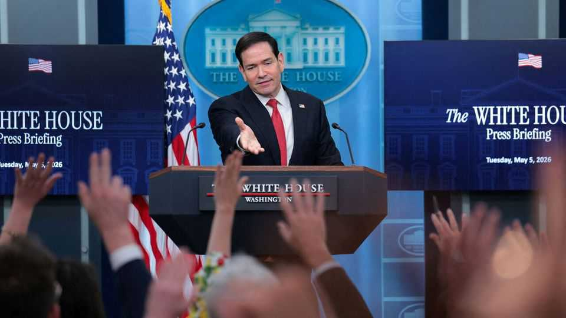
中国官方声明称，会议呼吁恢复霍尔木兹海峡的安全通行。以色列自4月中旬同意在黎巴嫩停火协议后，首次对贝鲁特发动袭击，目标是真主党指挥官；该伊朗支持的民兵组织继续向以色列发射导弹和无人机。联合国称，自停火协议生效以来，以色列对黎巴嫩的空袭已造成至少380人死亡，但其数据未区分平民与战斗人员伤亡。数次无人机袭击击中喀土穆，包括其机场。这些袭击结束了苏丹首都数月来的相对平静，该首都去年被常规军从快速支援部队手中夺回。袭击也表明，继续向苏丹东南部推进的快速支援部队现已能对全国大部分地区造成破坏。■
赞比亚取消了一项由国际非政府组织长期计划的会议，该会议旨在推广数字权利，据称是因为中国外交官抱怨台湾民间社会活动人士出席该活动。这一决定凸显了中国利用对其他国家，尤其是欠发达国家的影响力，以实现其在台湾问题上的政治目标的决心。台湾地区领导人赖清德在未公开行程中访问了埃斯瓦蒂尼。4月下旬，赖清德原计划出席国王姆斯瓦蒂三世登基40周年纪念活动，但因马达加斯加、毛里求斯和塞舌尔拒绝允许其航班飞越其领空，迫于中国压力而取消行程。埃斯瓦蒂尼是唯一承认台湾的非洲国家。愤怒的中国称赖清德“偷渡”进入埃斯瓦蒂尼。■
马可·鲁比奥（Marco Rubio，美国国务卿）表示，特朗普将在5月14日至15日于北京举行的峰会上与习近平讨论台湾问题。美国国防部确认，计划从驻德36000名美军中撤出5000名士兵。特朗普此前宣布削减驻德兵力，作为对弗里德里希·梅尔茨（Friedrich Merz）关于伊朗战争言论的报复；德国总理称美国“遭羞辱”。特朗普同时考虑从意大利和西班牙撤军，并威胁将对欧盟进口汽车加征25%关税。罗马尼亚中间派政府因议会不信任投票垮台，该投票由近期退出执政联盟的社会民主党发起，并获右翼势力支持。将举行新政府组建会谈。■
社会民主党表示，只要不以被罢免的总理伊莱·博洛扬领导，他们愿意加入新的亲欧盟联合政府。至少27人在乌克兰东部遭遇俄罗斯一轮袭击中丧生，其中包括12人在扎波罗热市空袭中遇难。乌克兰称已启动停火，指责俄罗斯违反协议。俄罗斯宣布在5月8日至9日实施停火，以配合纪念第二次世界大战战胜纳粹德国的纪念活动。弗拉基米尔·泽连斯基将俄罗斯的停火称为“彻底的虚伪”和宣传。马可·鲁比奥前往罗马与教皇利奥会面，正值梵蒂冈与白宫因伊朗战争问题关系日益紧张之际。■
鲁比奥还计划与意大利总理乔治娅·梅洛尼会面，后者也因战争及对教皇的批评与特朗普产生分歧。阿姆斯特丹市议会由环保主义者和其他各种进步左翼政党主导，已通过禁令禁止与化石燃料和肉类相关的广告。印度人民党，该党目前执政印度联邦政府，在西孟加拉邦州选举中获得压倒性胜利。西孟加拉邦包括加尔各答（旧称克里希纳）市，该党此前从未在此地区执政。这一结果是印度教民族主义总理纳伦德拉·莫迪的巨大胜利，他曾在该州进行竞选活动。其他州选举中，现任政府也遭遇挫折。在由前演员领导的政党赢得最多席位后，M. K. 斯塔林辞去泰米尔纳德邦首席部长职务。■
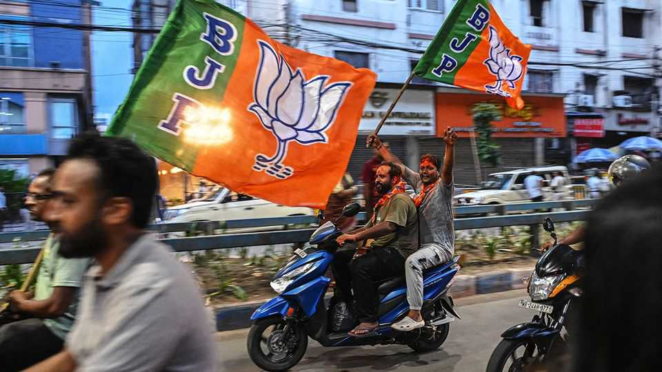
在印度喀拉拉邦，执政的共产党被国大党领导的联盟推翻。英国首相基尔·斯塔默（Sir Keir Starmer）将近期该国频发的反犹太袭击称为一场危机，并明确指责伊朗试图煽动暴力和仇恨。“这种行为将不容忍，”他说道。他宣布的一项措施要求大学追踪校园内的反犹太主义并采取行动应对。澳大利亚也正面临反犹太主义上升的挑战。一个委员会去年12月开始就邦迪海滩（Bondi Beach）汉克尔节活动遭袭击事件举行听证会，该事件导致15人死亡。一位专家将反犹太主义描述为“病毒”，并指出持有反犹太观点已变得“流行”。■
阿尔伯塔省分离主义者表示，他们已收集到足够多的请愿签名，可启动独立公投程序，最早可能在10月举行。民调显示，若公投推进，分离主义者说服同省居民支持脱离加拿大的难度较大。国际法院就一项长期存在的边境争端举行听证会。圭亚那表示，委内瑞拉对埃塞奎博河地区大片土地的主权要求非法，该地区包含大量海上油气资源。委内瑞拉则称国际法院对此事无管辖权，唯有通过谈判才能解决。唐纳德·特朗普宣布对古巴政府官员实施新一轮制裁。■
在佛罗里达州发表讲话时，美国总统表示，美国将“几乎立即”接管古巴，并暗示美国海军将在从伊朗返航途中于古巴海岸附近抛锚。■
§002 Business：本周商业原题：Business：本周商业 · 板块：The world this week · 栏目：本周
在未能获得美国政府救助后，精神航空突然取消所有航班并开始处置资产。公司财务官表示，将尝试直接出售旗下飞机，若无法出售则放弃给贷款方。这家低成本航空公司原本希望在数月内摆脱破产保护，但因伊朗冲突导致航油成本上涨，进一步恶化了财务状况。该公司已多年背负债务压力。2024年提出的与捷蓝航空合并计划因反垄断问题被叫停。其他航空公司也因燃油价格上涨被迫削减或调整航班计划。■
与此同时，埃克森美孚（Chevron）首席执行官迈克·维思（Mike Wirth）成为最新发出警告的人，他指出由于霍尔木兹海峡（Strait of Hormuz）长期关闭，全球石油供应将面临短缺。他提到亚洲和欧洲将受到严重影响，而美国感受到影响的时间会稍晚一些。壳牌（Shell）报告称，其交易部门因油价市场波动获利，因此录得近两年来的最佳季度利润。然而，由于伊朗战争的影响，公司预计第二季度天然气产量将大幅下降。埃克森美孚和埃克森美孚（ExxonMobil）尽管油价上涨，但利润仍出现下滑，两家公司均指出这是由于财务对冲安排的时间差异所致。为应对由能源成本上升引发的通胀飙升，澳大利亚央行今年第三次上调利率，基准利率上调0.25个百分点至4.35%。■
伯克希尔哈撒韦公司召开年度股东大会，格雷格·阿贝尔担任首席执行官。投资者们纷纷质问他对如何处置前任沃伦·巴菲特积累的近4000亿美元现金的计划。阿贝尔表示，他并不急于进行收购，因为“不愿将资金投入次优机会”。美国证券交易委员会启动为期60天的咨询程序，就一项提案展开讨论，该提案允许上市公司每半年发布财报而非每季度。支持改革者认为，强制每季度发布营收和利润数据会导致管理层短视思维。支持现行制度者则认为，半年一次的报告间隔过长，无法为投资者提供可靠的企业表现证据。■
GameStop这家以网红股闻名的视频游戏零售商，宣布对eBay发起非公开收购要约，其已持有eBay 5%的股份。GameStop将此次收购的股权价值估值为近560亿美元，远高于其自身市值。被问及如何筹措资金完成收购时，GameStop首席执行官瑞安·科恩表示：“我们拭目以待。”香港经济在第一季度同比增长5.9%，为2021年第二季度以来最强劲的增长。根据香港财政司司长的说法，全球对人工智能的狂热推动了本地相关产品和电子产品的需求，该季度商品出口额同比上涨近24%。芯片制造商AMD的股价在财报公布后大幅上涨，其第一季度数据中心业务销售额同比激增57%，整体营收增长38%。■
AMD的财报及其他科技相关消息推动标普500和纳斯达克综合指数创历史新高。三星市值首次突破1万亿美元，受益于内存芯片强劲需求，带动韩国KOSPI股指再创新高。投资者对苹果财报也表示满意。iPhone营收在2026年前三个季度同比增长20%，主要得益于iPhone 17在中国的市场需求。总营收达1112亿美元，其中超过半数来自iPhone。苹果计划今年晚些时候推出折叠屏手机。与此同时，苹果同意以2.5亿美元和解一项集体诉讼，指控其在iPhone 15和16上误导用户关于AI能力的宣传。公司未承认任何不当行为。■
美国政府人工智能标准与创新中心（CAISI）与谷歌DeepMind、微软和xAI达成协议，允许其在新人工智能模型向公众发布前研究其国家安全影响。这些协议延续了拜登政府时期类似合作。截至4月17日，诺和诺德的Wegovy（ Wegovy ）减肥药在美国已开出200万张处方。该公司上调了业绩预期，因预计减肥治疗业务收入将增长。公司计划今年晚些时候在美国以外市场销售该药。然而，诺和诺德的主要竞争对手礼来公司正威胁再次“抢其饭碗”，计划推出同类减肥药Foundayo。■
§003 封面报道：中美峰会将暴露一个失衡的搭档原题：The Trump-Xi summit will expose a dysfunctional duo · 板块：Leaders · 栏目：领导人
有人常说，尤其是特朗普总统，美国和中国如今已成为G2，这对超级大国引领着世界。这无疑令人沮丧。一方的领导人将盟友视为替罪羊，同时撕毁维系全球稳定数十年的制度。另一方则是一个专制政权，欺压邻国，暗中煽动它本可化解的外国冲突。更糟的是，两国将彼此在科技和贸易领域的相互交织的复杂关系视为安全威胁。
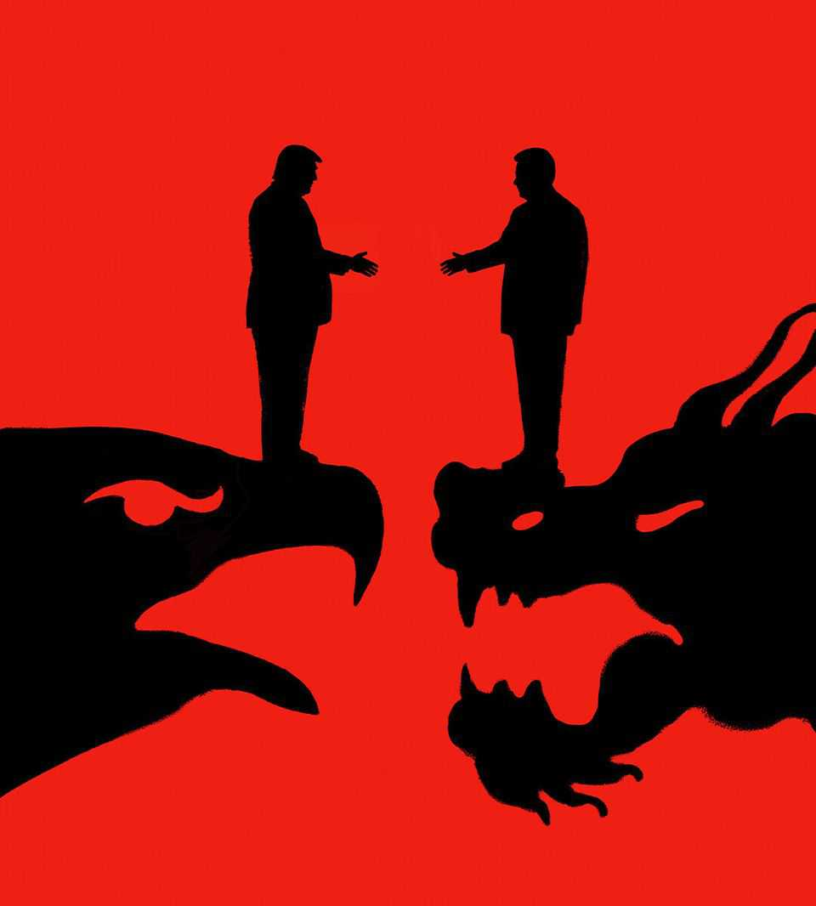
■
中美两国领导人将于5月14日至15日在北京举行会谈，这是2026年底前预计四次会晤中的首次。接下来的六个月可能对两国关系产生深远影响，涉及人工智能、供应链、台湾、伊朗等议题。两国政府间的紧张局势已深不可测，指望出现突破性进展显然过于天真。若特朗普与习近平更具技巧与谦逊，或许能避免最危险的冲突，并找到双方合作的领域，惠及所有人。令人不安的是，如此多的变数将取决于特朗普，他在称呼习近平为亲密朋友与敌人之间反复摇摆。习近平的立场则更为坚定，这也成为问题：他确信美国正在衰落，世界应屈从于崛起的中国。北京的会谈将聚焦于贸易问题。■
近十年来，两国陷入拉锯式的贸易战。2025年初，双方将关税提升至超过100%，一场全面冲突似乎不可避免。此后，双方虽降低关税，一些人称之为“停火”，实则是相互牵制的僵局。中国可通过限制稀土出口扼制全球工业，美国则能对高科技产品和金融流动实施毁灭性制裁。这种僵局并不稳定。随着美国试图打破中国对稀土的控制，中国则在推进半导体生产，试图摆脱美元依赖。目前，峰会若能达成积极成果，至少应让双方承诺保持政策可预见性。特朗普对关税的误判使削减措施难以实现，但维持现有关税水平至少能让企业正常运营。■
美国希望设立一个贸易委员会来管理两国间的贸易往来。这将显得臃肿且难以真正推动美国的再工业化。更有效的做法是建立定期对话机制。显而易见的风险在于误判。美国贸易官员正在调查中国工业产能过剩和强迫劳动问题，这可能成为数月内提高关税的借口。5月2日，中国采取了一项“阻断措施”，威胁对遵守特定美国制裁的公司实施金融惩罚。中国还威胁要打击将供应链转移至其他国家的公司，这正是美国所敦促的举措。北京因此正在建立一项以权力而非法律为依据的合规性测试。全球企业高管必须决定自己更畏惧哪个政府。美国谈判代表将峰会筹备的重点始终放在贸易而非安全议题上。■
但中国人看准了美国总统的不可预测性中的机会。他们或许是对的。正如中国顾问们不敢反驳习近平，白宫官员们也对特朗普在所有涉及中国的问题上，包括台湾，都唯命是从。特朗普或许认为，对台湾示弱能降温局势。中国官员暗示，他越在台湾问题上让步，中国在贸易上就越会做出让步。他们希望特朗普能削减对台湾的军售，或表态反对台湾独立。但他不应上当。出卖民主伙伴是错误的，危及全球关键芯片制造商则是鲁莽的。此外，现状目前运作良好，尽管习近平从未承认过：台湾繁荣，中国崛起，亚洲大体和平。而且，世界正面临其他紧迫的安全关切。■
美国对伊朗发动攻击是战略失误，而中国则乐于让其自食其果。中国已开始试探性外交，本周会见了伊朗外长。中国应敦促伊朗政权进行谈判，或以安全保证为诱饵，劝其放弃核计划，但其对外国麻烦的过敏反应使其踌躇不前。无论中国认为自己在伊朗问题上拥有多少道德高地，其协助普京在乌克兰作战、购买俄罗斯天然气并出售可用于军事的双用途技术的行为已削弱了这一立场。特朗普应敦促习近平利用其在莫斯科的影响力，帮助结束乌克兰战争。然而，这一议题几乎不会出现在他们的讨论中。真正的政治家也会关注其他重要议题。美国和中国企业正处在人工智能的前沿。因此，两国政府应引领应对相关风险，例如生物安全。■
气候变化曾是罕见的合作领域，如今却成为盲点，因为特朗普政府拒绝所有应对全球变暖的政策。曾是常规议题的疫情防控合作，如今却充满争议，因为中国不愿回答新冠病毒是否源自武汉实验室的问题。超级大国无需成为朋友也能就这些议题展开对话。冷战高峰期，美苏曾就核裁军、太空科学、欧洲边界和癌症研究达成协议。美国与中国的商业联系远比与苏联的紧密。可惜，两国领导人均认为合作是陷阱，担心对方会强加规则。这种逻辑使主导地位成为优先目标，而非全球公共产品。因此，峰会恐怕只会换来勉强的微笑。这种缺乏雄心的状况令人担忧。■
美中双方顾问均认为至少双方正在对话，但要维持超越特朗普政府的合作，他们仍需取得实质成果。相反，目前唯一让美中两国仍坐在谈判桌前的原因，是对彼此经济破坏能力的恐惧。G2（美中）并非在引领世界，而是在勒索世界。■ 仅限订阅者：想了解我们如何设计每周封面，请订阅每周封面故事新闻简报。
§004 纳伦德拉·莫迪的政党在印度势头强劲 领导人 印度民主原题：Narendra Modi’s party is on a roll in India · 板块：Leaders · 栏目：领导人
没有人应该为玛塔·班纳杰的下台感到惋惜，她被西孟加拉邦的选民驱逐，该邦是印度第四人口最多的州。在过去的15年里，她领导的是失败。尽管全国经济蓬勃发展，但对她州的1亿人来说，经济却停滞不前。如今，一个普通的孟加拉人收入仅为古吉拉特邦（纳伦德拉·莫迪的家乡）居民的一半。同样糟糕的是班纳杰的暴力倾向。她压制批评者并监禁反对者。她的政党经营勒索活动。据称，其手下有时甚至能逃脱强奸指控。企业被迫为土地和许可证支付贿赂。难怪许多人离开。
■
班纳吉女士以不体面的方式拒绝下台，称对方作弊。她必须下台。莫迪领导的印度人民党（BJP）获胜，并首次将西孟加拉邦纳入其执政版图。这次选举是席卷多州的浪潮的一部分，推翻了各地的现任执政党。在喀拉拉邦，共产党执政者被赶下台。在泰米尔纳德邦，从动作明星转型为政客的单名维贾伊推翻了旧王朝。这一切都证明印度民主制度有效，尽管并不完美。选举结果总体上反映了选民的意愿。结果也证实，尽管自他赢得全国大选的十多年间经历了选举波动，莫迪领导的政党依然保持强势。印度人民党比其竞争对手组织更严密，并更巧妙地融合了印度教民族主义与经济增长承诺，推广其意识形态。■
在盟友支持下，该党目前掌控着印度超过三分之二的邦和联邦属地，这些地区居住着印度80%的人口。即便曾对总理持敌意的南部地区也有所缓和。不过仍存在令人担忧的因素。为维持民主健康，印度人民党（BJP）必须将自身野心与手段控制在合理范围内。但该党有时未能做到这一点。即便西孟加拉邦的最终选举结果无误，比纳杰（Banerjee）部分关于不公的指控也并非毫无道理。联邦政府在该邦部署了近25万武装警察监督投票。对选民名单的粗暴修订使数百万选民失去投票权，其中许多人甚至没有机会申诉。负责监督此次选举的选举委员会（Election Commission）本应是中立的裁判者，但在莫迪总理任内，其表现日益显得软弱。政治风险正变得更为狭隘和丑陋。■
政党和组织频繁利用宗教分歧来分化选民。在西孟加拉邦和阿萨姆邦，印度人民党（BJP）通过煽动对穆斯林的恐惧，赢得了大量印度教选民的支持。该党可能辩称其对手应更加努力——他们几乎未能推出可信的领导人或有力回应其印度教民族主义议程。然而，莫迪政府也通过刑事调查拖累对手、扭曲政党资金规则以谋取私利，并收编了大部分媒体。莫迪可能倾向于忽视这些批评。毕竟，他强硬的政治理论目前正为他带来显著成效。但这种强硬路线与他另一项选举成功的关键——强劲的经济——存在矛盾。这股经济顺风可能正在消退。■
能源成本的上涨将在未来几个月内损害消费者，并可能让部分选民转而反对他。他可能会试图通过加大煽动对立的力度来弥补。然而，这对印度来说可能弊大于利，甚至可能对莫迪先生本人也是如此。该国的长期经济成功取决于稳定和法治，而这两者都可能因一个权力过大且咄咄逼人的执政党而受到损害。在胜选后，莫迪先生应表现出克制。■ 《经济学人》的订阅者可以注册我们的Opinion通讯，汇集了我们最佳的社论、专栏、客座文章和读者来信。
§005 世界必须阻止AI助长生物恐怖分子的威胁 从网络安全到生物安全原题：The world must stop AI from empowering bioterrorists · 板块：Leaders · 栏目：领导人
人工智能（AI）即将把生物学加入其超人类能力清单。Anthropic公司的Myths模型——由于其黑客技能已被暂停公开发布——最近在生物学专家整理的最复杂数据处理任务中成功完成了三分之一。Mythos能够完成所有受测人类无法做到的事情，例如从原始DNA数据中逆向工程出一种细胞类型。■
正如我们所报道的，这种问题解决能力意味着人工智能可能很快赋予人类极其危险的力量：合成病毒、制造新型神经毒素或组装全灭性“镜像生命”。这些危险正是人工智能令人惊叹的普及智能承诺的阴暗面。甚至可以设想，人工智能可能赋予一个仇视人类的独行者终结人类的能力。因此，生物安全风险远比网络安全风险更为严重。如果一种人工合成病毒可能造成数十亿人死亡，人类已无余地从错误中学习。或许不存在“防御者红利”，即人工智能本身帮助防范危险。软件可以迅速修复，但人类生物学却远为不可塑。因此，使模型安全发布将需要人工智能基础科学的突破。还有多少时间？■
今日公开的AI模型虽在论文测试中表现优异，但似乎仍难以为新手提供实验室操作的实际帮助。然而，Anthropic公司（Anthropic）警告称，其开发的非公开模型Mythos可能即将具备指导新手完成复杂实验的能力。目前Mythos及其同类模型尚未经过实际操作能力的测试，这意味着它们可能已具备此类能力。拥有这种技能的模型如同核武器一般，若落入公众之手将极其危险。而当前确保其安全的技术手段尚不完善。例如，一种方法是让模型拒绝危险请求，但“越狱”这些模型——即通过欺骗手段使其给出被禁止答案——虽变得更难，但一项近期研究显示，仍有90%的新手参与者能从本应保持沉默的模型中提取病毒学相关信息。■
将人类的未来押注于此类防御措施将是一个错误。另一种措施是剔除模型训练数据中的危险信息。智库SecureBio（SecureBio）建议删除关于镜像生命的信息、获取活体病原体、绕过生物防御屏障并评估大流行潜力。问题在于，一个足够强大的模型可能通过基本原理推导出被剔除的知识。类似尝试从图像生成器的训练数据中移除儿童性虐待材料并未成功。以良性图像训练的系统仍可能描绘其从未见过的露骨内容。第三种思路是聚焦现实世界。■
政府安全部门应更加关注诸如DNA合成等技术供应商，这些技术既可用于合法用途，也可能被用于恶意目的。“了解你的客户”法规应限制此类服务仅限于已建立的研究人员。但制造病毒不像制造核武器，后者需要稀缺且可追溯的材料。在生物学领域，利用现成技术实现致命目的相对容易。国家无法监控每个培养皿。因此需要科学突破，以创建新的安全措施。一种有前景的方法是在模型训练后进行类似脑外科手术的调整。另一种技术是让模型在某些领域偏爱错误答案；还有一种可能是发现并禁用合成生物学研究中激活的神经元。■
这需要基础AI科学的突破，以破解现有神经网络的“黑箱”。在这些技术出现之前，各国政府必须限制可能被用于生物恐怖主义的系统的访问权限。这一点对开源模型尤为重要，因为一旦这些模型被广泛传播便无法收回，其使用也无法被监控。负责任的研究人员应在安全协议框架下利用AI推进科学边界——例如，DeepMind旗下的Isomorphic Labs正在研发新型癌症疗法。如果AI技术无法在改善人类生活的同时防止恐怖分子获得灭绝人类的能力，那么其应用就毫无意义。■ 订阅《经济学人》的读者可注册我们的观点通讯，汇集本刊最佳评论、专栏文章、特稿及读者来信。
§006 为应对反犹主义，首先需厘清其根源原题：To fight antisemitism, first grasp where it comes from · 板块：Leaders · 栏目：领导人
反犹主义 领导者 | 反犹主义 要应对反犹主义，首要任务是理解其根源。看似21世纪的问题，却有着深邃而黑暗的根源。此次反犹主义的仇恨表现形式有所不同：没有犹太人聚居区或暴行事件，也没有欧洲政府公开支持此类偏见。然而，若退后一步观察，偏见的思维模式却异常熟悉。风险同样存在：不仅威胁着全球犹太人，也对其他人构成威胁。4月29日伦敦发生的两名犹太男子被刺事件，便发生在英国犹太人聚居区戈德斯格林。此前伦敦犹太场所接连遭遇纵火袭击。去年10月曼彻斯特某会堂遭袭，造成两名信徒死亡。 ■
令人痛心的是，许多英国犹太人首次感到有必要在公共场合淡化自己的犹太身份：将大卫之星吊坠藏在衬衫内，前往学校或工作时摘下头巾。这种担忧并非英国独有。3月，密歇根州和荷兰的犹太会堂遭到袭击。12月，在仇恨犯罪频发的背景下，澳大利亚邦迪海滩的汉克尔节派对上15人遭杀害。对加沙的愤怒，尤其是伊斯兰主义者群体的愤怒，是反犹太主义激增的重要但过于简化的解释。2023年10月7日以色列发生的暴行及随后的战争确实使欧洲和美国的反犹太主义显著上升。但解释不等于借口。每个人都应能区分伦敦公交站的老人与中东国家。犹太人对以色列的观点（无论是什么）永远不能成为他们遭受迫害的正当理由。■
任何观点都不应以暴力相向。西方一些人将问题归咎于移民，以此获得某种冷冰冰的安慰。实际上，伊斯兰主义虽极端暴力，但仅是英国最高警官马克·罗利爵士（Sir Mark Rowley）所称的“令人毛骨悚然的仇恨交集图”中的一环。左翼阵营中许多人支持一种虚假的道德框架，将犹太人视为殖民者，永远无法成为受害者。右翼民粹主义者则认为犹太全球主义者正图谋西方的衰落——这正是此前宾夕法尼亚州和加利福尼亚州枪击事件的荒谬动机。敌对国家通过代理人对外发动攻击：伊朗的手法已被发现参与了一些近期袭击。通过这些方式，当今的反犹主义呈现出明显的现代特征——你还可以加入社交媒体，它帮助招募袭击者并让新纳粹进行传教。■
潜伏在暗处的，是流传已久的邪恶犹太集团神话，这个集团企图掌控权力并奴役他人。在将本雅明·内塔尼亚胡和乔治·索罗斯描绘为操控者的叙事中，这一观念回响不绝。它也体现在“以色列对巴勒斯坦人的待遇是世界苦难之源”这一观念中。阴谋论是其共同点；它也是今日偏见与纳粹德国或沙俄时期仇恨之间的纽带。阴谋论思维在动荡时期蓬勃发展：帝国的兴衰、意识形态的断裂，或如今的民粹主义与战争。它往往以某种引力般的必然性退而求其次，回归最古老的阴谋论，即犹太人与贪婪和分裂忠诚的返祖式联想。被刻画为无根且宗派主义、保守且颠覆的象征，他们成为令人困惑变化的万能象征。
理解反犹主义的深层根源是应对这一问题的关键。犹太机构的安保措施本就严密，现正进一步强化。支持巴勒斯坦的游行及其中的口号也正被重新审视。政治人物试图在保障抗议者言论自由与犹太人安全之间寻求平衡，后者对许多人而言正面临游行者咒骂的威胁。《经济学人》对言论禁令持高度怀疑态度。逮捕祖母对任何人都无益。法律无法消除根深蒂固的偏见与刻板印象：需要采取更宏大且艰难的举措。许多人已学会在谈论及对待其他少数群体时更加谨慎；当人们改变谈话方式，他们也可能逐渐改变思维方式。犹太人理应获得这种尊重，这已刻不容缓。教育或许能发挥积极作用。■
但最重要的是，政治和宗教领袖——以及普通公民——必须在听到反犹主义言论时立即予以谴责。太多人羞耻地未能做到这一点。犹太公民的痛苦本应成为行动的动力。但历史的回响表明，还有另一个理由必须采取行动。犹太人是这些攻击的受害者，但他们的未来并非唯一面临威胁的。相反，他们成为自由生活与信仰的试金石。当这些权利得不到保障，暴民便占据上风，而支撑自由社会的多元主义和宽容价值观将陷入危险。■ The Economist 的订阅者可注册我们的 Opinion 通讯，汇集了本刊最佳评论、专栏文章、特邀评论和读者来信。
§007 欧洲正在放松商业管制原题：Is unshackling business. But not enough · 板块：Leaders · 栏目：领导人
每个人都清楚欧盟经济受制于繁复的监管。但你可能没注意到，如今“每个人”包括欧洲人自己。他们对现状的不满程度前所未有，推动改革的势头是数十年来最强的。4月28日，欧盟公布了简化规则制定、提升一致性的计划，明确了实现目标的时间表，并提出消除 bloc 内贸易壁垒的路线图。万亿欧元的问题在于，经历多次失败尝试后，欧洲能否最终将良好的意愿转化为实质性进展。■
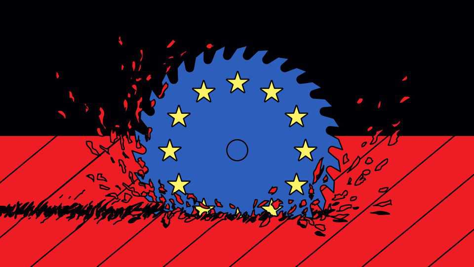
欧洲若要偿还债务、照顾日益庞大的老年群体并摆脱对美国的依赖实现自保，就必须实现经济增长。然而其经济远落后于老美。第一季度产出几乎停滞，而伊朗战争又推高了能源价格。增长的争夺战正展开于两个战场。第一战场在布鲁塞尔，两种截然不同的策略正在争夺支持。一些欧盟官员主张欧盟应转向补贴、保护主义和中国式国家资本主义，另一些人则更倾向自由主义路线，即推动更加开放、竞争和一体化的市场。近年来欧盟的经济理念逐渐带有更多法国特色：对竞争市场和自由贸易略显警惕，更倾向于指导主义。令人鼓舞的是，一些更具自由主义倾向的观念仍在坚持。■
欧盟拟议的合并指南修订一度似乎可能削弱该地区对消费者福利的传统承诺，以培育“欧洲冠军”企业。如今看来，规则或将小幅调整而非彻底改革。欧洲对竞争政策的承诺依然存在。然而，避免倒退是一回事，如何实现进步？除了包括十项“综合法案”的放松监管举措，旨在降低企业行政成本外，贸易自由化仍在持续推进。5月1日，欧盟与南方共同市场（成员包括阿根廷、巴西、巴拉圭和乌拉圭）达成的协议临时生效。同时，欧盟还与印度、印尼和澳大利亚达成新协议，与马来西亚和菲律宾的自贸协定也正在推进中。■
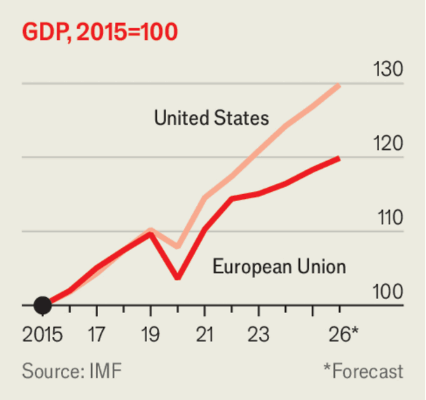
不同于唐纳德·特朗普总统（Donald Trump）往往表面化且脆弱的贸易协议，这些协议更加深入，是多年努力的成果。第二场较量发生在国家层面，且更难取胜。规则制定权主要掌握在各国政府手中，它们热衷于将自身官僚主义问题归咎于布鲁塞尔。他们经常选择保护本国企业，尤其是防范服务业的外国竞争。在将欧盟规则写入国内法律时，他们也倾向于使其更加繁重。政界人士承受着保护主义者的持续压力，抵制从连接电网到允许一国注册企业在他国运营等一切措施。国家层面的改革进展缓慢。每个政府都是27个中的一个。仅有少数政府分享布鲁塞尔的新紧迫感。■
许多人不愿触碰既得利益集团，希望在不承担自身政治代价的情况下，从其他国家的改革中获益。近期的改革举措，如丹麦邮政服务或荷兰养老金体系的调整，大多发生在市场导向的国家。而像意大利和德国这样被繁复规则束缚的国家，改革力度仍显不足。推动欧洲经济增长需要各国政府加入自由化改革的行列。这意味着还需落实恩里科·莱塔和马里奥·德拉吉两位前意大利总理所撰报告中的多项建议。欧洲初创企业亟需更多资本，这可通过充分资助养老金体系并持续推进跨境资本市场整合来实现。■
欧洲必须吸引全球更多顶尖人才，通过统一的签证制度和承认外国学历来实现。同时，它需要更便宜的能源，这需要加大对电网的投资，并在更多可再生能源上线时精心设计市场机制。但这一切都不会轻松。欧盟存在无数阻碍性的法规，试图消除这些法规的努力往往以失败告终，尤其是左右翼保守派对此类法规的捍卫。但欧洲也是拥有4.5亿人口的巨大经济体，占全球产出近五分之一。如此丰厚的财富和失败带来的严重后果，是否能让这次有所不同？比以往任何时候都更需要简化流程、减少管制。■ 订阅《经济学人》的读者可注册我们的观点通讯，汇集了最佳的社论、专栏、特稿及读者来信。
§008 特朗普与习近平将难以达成重大经济协议 简报：北京峰会原题：Trump and Xi will struggle to strike a major economic deal · 板块：Briefing · 栏目：简报
长期关注中美关系的观察者们呼吁：摒弃“大交易”这一说法。一段时间以来，目光乐观的投资者曾认为特朗普与习近平或许能克服两国间的竞争关系，达成一项重大的、甚至具有历史意义的协议。他们设想的是一揽子方案，包含平衡贸易、中国市场的实质性开放以及美国在东亚军事力量的收缩。但当两位领导人于5月14日至15日在北京会面时，他们将取得的成果远不及预期。即便一切顺利，他们最多也只能延续两国紧张的贸易休战状态——这就是全部内容。 ■
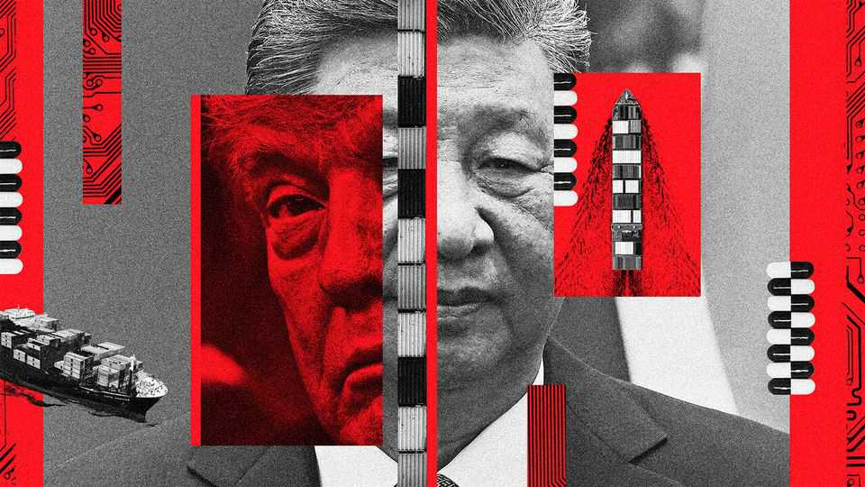
特朗普仅现身北京便是一次小胜。他原定于4月初与习近平举行的峰会因伊朗战争而推迟。但白宫与习近平团队决心促成峰会举行，尤其因为这本应是两人今年四次会晤中的首次。如此紧凑的日程无法承受进一步拖延。■ 几乎所有相关人员的共同说法是，至少双方仍在对话。一年前，他们几乎陷入一场大规模贸易战的边缘。美国对华商品加征关税达145%，中国稀土出口管制威胁全球产业。全球性经济衰退迫在眉睫。这一危险促成了2025年10月达成的停火协议。双方削减关税，中国恢复稀土出口，美国也未再对中国实施更多出口管制。
当前的问题是两国能否在此基础上推进合作。几个月前曾有迹象显示可能达成某种重大协议，或许会涉及中国对美进行大规模投资的交易。然而此类讨论始终显得不切实际：双方互不信任的程度足以让这类需要数十年承诺的项目难以推进。中国已基本放弃特朗普重塑双边关系的期望。“美中之间的问题是根本性且结构性的，我认为特朗普并不是处理这些问题的合适人选，”一位中国官员顾问表示。美国方面也逐渐接受将重点放在采购承诺而非结构性改革上，这原本是最终目标。“我们知道无法改变他们的经济模式，”一位美国官员表示，“我们现在的对话建立在四分之一世纪的挫败感之上。” ■
峰会的报道很可能聚焦于一个看似重大的成果：成立贸易委员会。中美贸易顺差从2018年峰值的4000亿美元降至去年约2000亿美元，这被特朗普的支持者视为其策略奏效的证据（实际上，许多中国出口商品通过第三方国家转运）。特朗普政府的一些官员认为，该委员会将推动贸易顺差趋近于零。在这一设想中，贸易官员将决定哪些非敏感商品可在两国间流通，并对其余商品加征关税。实现这种受控贸易流动是美国贸易代表贾米森·格里尔（Jamieson Greer）的“白鲸”——据熟悉谈判的人士称。然而，贸易委员会的概念本身较为薄弱。中美贸易失衡的根源在于，中国生产了美国所需的商品远多于美国生产中国所需的商品。■
贺锦丽，中国副总理，表达了对过多行业被认定为敏感领域的担忧，甚至暗示中国茶叶也可能被视为安全风险。中国商界人士调侃称，中国对美国商品的需求归根结底是三个“B”：牛肉、大豆和波音公司。北京峰会可能涉及对这些领域的大额订单。但这不足以平衡双边贸易。与格里尔主张赋予贸易部更大权力不同，复旦大学吴新波认为，中国希望设立一个能作为“工作协调机制”来处理贸易摩擦的机构。至于“委员会”这一高调名称，中方表示可以接受，因为这是特朗普钟爱的品牌策略。■
但一名美国官员警告称，如果中国将关税谈判变成扯皮工具——比如用以推诿搪塞采购承诺——他们可能会发现华盛顿的耐心实在很短。目前各方都已接受关税已成为常态。中国最迫切需要的是可预测性。据彼得森国际经济研究所估算，两国去年曾有过两次90天的暂停期，随后达成一项为期一年的协议，将美国对中国商品的关税设定在约47%，中国对美国商品的关税则约为30%。尽管对中方而言并非理想方案，但其出口商已基本适应，这从中国去年约1.2万亿美元的全球贸易顺差中可见一斑（见图表）。然而，最高法院推翻特朗普大部分全球关税的裁决，又为局势增添了新的不确定性。■
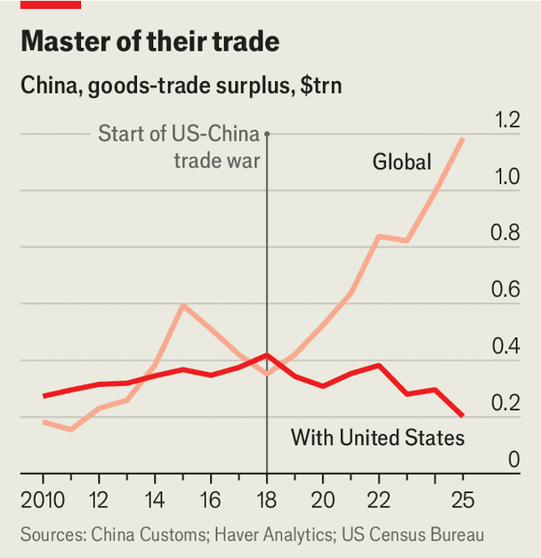
如今，美国政府正试图通过其他手段重建关税政策。特别是，美国贸易官员正在开展两项调查，尽管涉及多个国家，但实质上都聚焦于中国：一项威胁对工业产能过剩国家征收关税，另一项则威胁对使用强迫劳动的国家加征关税。如果这些调查结果再次导致对中国征收更高关税，很可能会重启互相对抗升级。因此，北京峰会的另一积极成果将是承诺维持关税稳定。其他摩擦点仍在不断浮现。特朗普试图约束其官僚体系：他冻结了对数千家与被列入黑名单的中国企业有关联公司的制裁，允许向获准的中国客户出口相对先进的半导体，并要求任何针对中国的重大行动都需经他批准。■
他正努力阻止大坝决堤。四月，白宫发布了一则备忘录，指责中国实体进行“工业规模”的美国人工智能技术盗窃行为。美国同时对五家中国炼油厂实施制裁，因其购买伊朗石油，这向与中国企业合作的伊朗发出警告信号。“美国难以在长期无行动的情况下将自身体系封闭起来，”宏观顾问集团（Macro Advisory Partners）的莎拉·贝兰（Sarah Beran）及前美国外交官表示。与此同时，中国继续推进复杂美国企业的计划。近几周，中国国务院（State Council，即中国内阁）发布了两项具有威胁性的法令。其中一项威胁对损害中国供应链的行为（可能包括将订单转移至外国工厂）实施贸易限制。■
另一项承诺是对那些对中国企业实施外国制裁的公司采取反制措施，这实际上将遵守美国法律的行为定性为犯罪。中国计划推出的全球稀土出口许可制度也迫近眼前。该制度在去年习近平主席与特朗普会晤后曾一度暂停，但这一暂停状态将在11月到期。即便再次延期，这种威胁也不会消失。这种停火局面能持续多久？双方许多人士认为可以持续，仅仅是因为全面对抗的经济冲突前景令人不寒而栗。然而，这种停火并非基于善意，而是基于恐惧。双方都在努力削弱对方的筹码。中国正试图在先进半导体领域取得突破，并拓展出口多元化，以减少对美国市场的依赖。■
美国正试图打破中国在稀土资源上的强势控制。"华盛顿存在大量不切实际的幻想，认为今年晚些时候我们将在稀土领域取得足够进展，从而再次对华施压。但现实是，我们尚未达到那个阶段，"美中商务理事会主席塞恩·斯坦表示。目前双方将先展示友好姿态。预计今年晚夏，习近平主席将再次对美进行双边访问，年内可能还会在国际会议间隙再会面两次。双方或将有成果可庆。领导人可能开始就人工智能安全展开讨论，这将是首次在重大共同风险上达成合作。中国或将宣布大规模采购牛肉、豆类和波音公司产品，企业界也可能公布药物研发合作计划。■
美国航空、能源和制药企业的高管们正待命于亚洲，以防白宫召唤他们前往北京举行签约仪式。但各方预期可能不高。“最大的胜利可能仅仅是两位总统举行一次友好的会晤，并同意加强双边贸易”，美国在华商会的迈克尔·哈特表示。中国方面同样渴望如此。“稳定并不意味着改善关系，而是防止关系进一步恶化”，对外经济贸易大学的屠新泉表示。这与昔日的大交易相去甚远。如今能提供的最佳方案，仅仅是避免全面破裂。■
§009 中国向特朗普施压要求在台湾问题上让步原题：Is pushing Donald Trump for concessions on Taiwan · 板块：Briefing · 栏目：简报
一年多后，即共产党中国于1979年与美国建立外交关系后，中国官员开始要求达成新协议。他们希望时任总统罗纳德·里根承诺停止对台湾的军售，台湾是中国声称的自治岛屿。里根的国务卿亚历山大·哈格支持这一想法，认为中国将很快成为“世界上最重要的国家”。里根撤换了哈格，但同意了一个折中方案。1982年，中美达成的新公报承诺“逐步减少”对台军售，前提是中方意图和平。随后，里根向台湾秘密传达了保证，重申美国的支持。
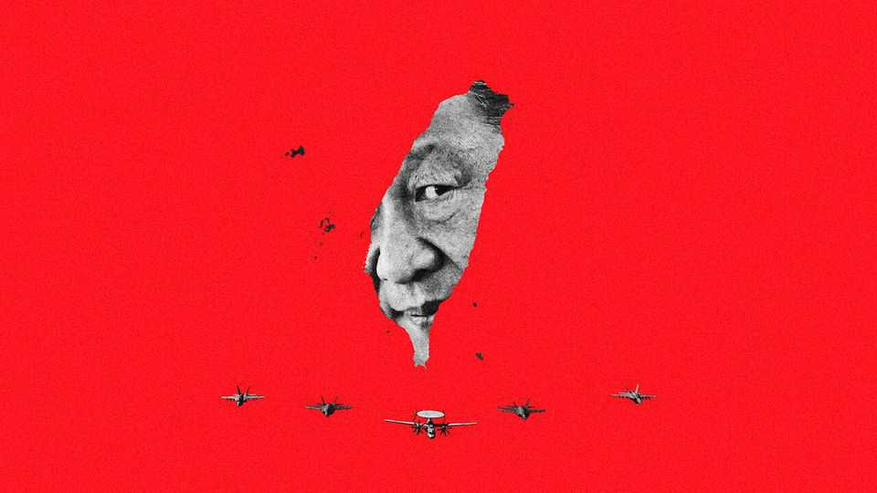
自那以后，西太平洋的和平往往依赖于中美台关系中的模糊性。中国官员已多次试图淡化美国帮助台湾自卫的承诺，而历任美国总统均予以拒绝。但随着唐纳德·特朗普（Donald Trump）即将访华，中国正发起新一轮努力，争取在台湾问题上获得让步。台北和华盛顿的担忧正在加剧，认为特朗普可能在与习近平（Xi Jinping）的更大交易中让步。与此同时，中东战争正削弱美国武装台湾和在台海冲突中成功干预的能力。
美国从亚洲调往海湾的军事资产包括航母打击群、海军陆战队远征部队、导弹防御设备及其他军备。这些调动可能对维护和战备状态产生长期连锁影响。此外，美国及其中东盟友的武器库存已大幅消耗，尤其是爱国者拦截导弹。台湾曾大量采购同类美国武器，战前已面临320亿美元的交付积压，如今清障所需时间可能更长。美台官员坚称双边关系稳固，军售进度未受影响。他们同时淡化2027年中方发动攻击的风险，这是美国情报部门认定的习近平为解放军实现对台入侵设定的期限。■
尽管中国几乎每天都在试探台湾的防御体系，但实际攻击的威胁可能在短期内有所减弱，这归因于习近平近期对军方高层的清洗。他也可能被特朗普近期展示的AI增强型美军火力所震慑。然而，对未来局势的焦虑正开始影响台湾政治，这可能从根本上改变该地区的权力格局。新任国民党主席程启智（台湾最大反对党国民党领导人）正寻求在11月的地方选举和2028年总统选举前与中国加强联系。今年4月，她成为十年来首位会见习近平的国民党领导人。国民党及其盟友掌控台湾议会，同时也在阻挠一项400亿美元的国防开支增加计划，主要用于采购美国军备。■
进一步拖延可能让台湾在关键武器的采购队列中排到后面。这使得这个生产全球约90%最先进半导体的岛屿陷入微妙时刻。当两位领导人去年10月在韩国会面时，他们几乎未提及台湾。但12月中国对特朗普批准向台湾出售价值创纪录的110亿美元军备表示不满。此后，中方官员明确表示希望将此事放在北京议程首位。1月特朗普与习近平通电话时，习近平称台湾是“最重要的议题”，并要求美国对台湾军售“极度谨慎”。特朗普随后罕见地公开表示，他已直接与习近平讨论未来对台军售问题。■
随后有消息指出，白宫正在延迟一项价值约130亿美元的新军售计划。美国曾在峰会前暂时延迟过此类军售，但特朗普的言论暗示他实际上正在与习近平就未来的军售进行谈判。这将违反里根1982年作出的承诺。中国代表也一直在游说特朗普改变美国对台的官方表态。一项提议是让特朗普表示美国“反对”台湾独立。■
目前美国的立场是“不支持”该岛独立，这意味着若独立以自然方式发生，美国不会反对。（中国国民党主席郑文灿曾表示，她不会反对这种改变。）近期，中国官员及代理人曾建议特朗普表态支持或不反对“与中国的和平统一”。美国现行政策是支持通过和平方式解决争端，但未提及具体结果如统一。清华大学中美关系研究中心主任戴维表示，他认为特朗普在最近领导人通话中“接收到有关军售的信息”。他预计特朗普未来将批准较小规模的军售，并在下次军售前等待数月。否则，他警告称，习近平可能取消今年计划中的访美行程。■
他认为特朗普有可能表示不反对“和平统一”。尽管从中国角度看这只是微小变化，但他认为这可能引发台湾地位和未来更重大的改变。这正是台湾当局担忧之处。围绕几个字的争执看似微不足道，但对台海两岸而言，对台湾的外交措辞的谨慎使用与调整历来是敏感议题。台湾现任总统赖清德（Lai Ching-te）坚称台湾已是独立主权国家，其未来只能由台湾人民决定。其政府正通过在美国政府和国会中的支持者加大游说特朗普的力度。但台湾当局担心这种影响力正在减弱，而特朗普对台湾的关注度也日益降低。■
在中方看来，任何修辞上的让步都意味着台湾可以被谈判，这将进一步削弱台湾民众的士气，同时帮助习近平先生实现将中国国民党重新纳入权力核心的战略目标。而峰会后若美国对台军售出现延迟或缩减，将助长中国一方的气焰，并阻碍台湾现代化军力的努力。参与各方都不指望此次会谈能带来重大改变。中方官员已放弃此前推动第四份双边公报的尝试。相反，他们似乎试图让特朗普在没有书面协议的情况下向台湾让步。若此次未能达成目标，中国很可能会在2026年特朗普与习近平计划举行的三场会谈中，持续将台湾问题作为核心议题。■
亨丽埃塔·莱文（Henrietta Levin）表示，实际上，这可能相当于在台湾问题上达成一项“影子协议”，通过给特朗普先生额外的动机，使其避免做出或采取习近平先生认为具有挑衅性的言行。对美国而言，台湾问题上的战略模糊长期以来遏制了中国。但无的放矢的模糊则无法产生同样的效果。■
§010 英国为何持续未能从创新中获得经济回报原题：Why does Britain consistently fail to capture economic returns from innovation? · 板块：Letters · 栏目：读者来信
读者来信可通过电子邮件发送至letters@economist.com 了解更多关于我们如何处理您的来信 诚然，英国确实产生世界级的创新，但始终未能从中获取经济回报（“创新国度”，4月11日）。您对高成本、监管障碍和国内晚期阶段投资不足的诊断并不全面。资本外流的问题，更准确地说，是资本市场架构与治理框架的问题。■
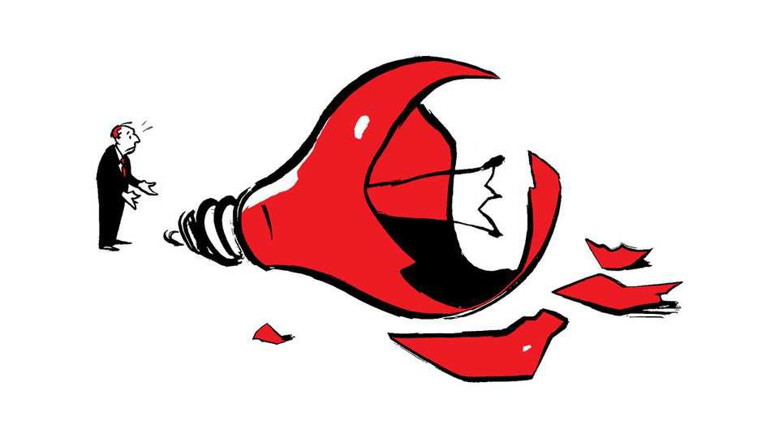
问题是：我们该如何阻止英国企业离开英国？这种说法错误地将问题框定在国家产业政策的范畴。我们应思考的是：为何诞生于英国创新和英国大学教育的企业，却认为英国资本市场无法支撑其发展？两个目标被混为一谈。其一，英国应产生世界级的创新，这一点已基本实现。英国是全球第三大风险投资市场。其二，英国资本市场和治理结构应具备足够的竞争力，以确保英国股东、养老金领取者及整体经济能获得相应的经济回报，这一点尚未达成。解决这一问题需要及时的资本市场、治理结构和监管改革，这些改革超出了所有相关方的常规舒适区。帕斯卡尔·勒文松 / 全球顾问委员会主席 剑桥创新中心 / Cambridge Innovation Hub ■
查理曼（4月25日）正确指出了欧洲在科技与金融领域的结构性依赖。但关于为何欧洲未能建立自己的谷歌这一反复出现的问题，需要更细致的回答。2009年我曾向一位谷歌高管提出过这个问题，他的回答出人意料地简单：帕洛阿尔托（Palo Alto）的成功源于三点：资金、斯坦福大学和对失败的容忍度。其中第一点仍是欧洲最顽固的弱点。多年来，碎片化的资本市场制约了创新企业的规模化发展。缺乏深度且整合的风险资本池，使欧洲创业者往往难以获得快速扩张的资源。这不仅是个金融问题，更是结构性问题，这也部分解释了跨大西洋生产率差距的成因。■
长期讨论的资本市场联盟，如今演变为储蓄与投资联盟，为欧洲提供了切实可行的前进路径。若能以雄心勃勃的方式推进，或将最终释放欧洲庞大的家庭储蓄，用于创新。第二要素是人才，看似矛盾地，这可能是欧洲当前最大的机遇。在更加不确定的地缘政治环境中，欧洲仍是高技能人才的吸引力目的地。但吸引人才只是第一步，还需通过世界一流的大学、灵活的劳动力市场以及真正统一的技能市场来留住并赋能人才。第三要素是对失败的容忍度，这更多源于文化而非监管。尽管政策可鼓励创业，但对风险的态度转变更为缓慢。■
欧洲同样展现出演变迹象，年轻一代的欧洲创业者和投资者正逐渐适应实验与迭代的模式。欧洲并非因缺乏创意或能力而失败，其困境源于规模不足、碎片化以及某些时期的保守心态。当前挑战不在于模仿硅谷，而在于消除阻碍欧洲创新实现全球规模的障碍。巴勃罗·扎尔巴（Pablo Zalba），2009至2016年任欧洲议会经济与货币事务委员会副主席，西班牙潘普洛纳人。您三月二十八日刊载的文章涉及西奥多·罗斯福（《美国250年》第三章）与法国早期法西斯主义者莫雷斯男爵（“法西斯主义被遗忘的首次行动”）。爱德蒙·莫里斯于1979年出版的罗斯福传记中，记载了这位未来总统与莫雷斯的几次会面。■
这包括莫里斯试图说服罗斯福加入一群猎杀马贼的民兵组织、两人在莫里斯因在荒野地区犯下谋杀罪被起诉时的书信往来，以及两人之间险些发生的决斗。亚历克斯·德韦尔（Alex Dew）认为，司法应作为独立的裁决者，而非政策工具，这涉及欧洲人权公约（ECHR）（读者来信，4月18日）。然而法官的职责是适用并解释通过政治进程确立的法律。对ECHR的担忧确实在于法官已过度脱离政治意志，而忽视政治意愿则使他们无法回应政客代表选民所辩论的政策变化。■
人权并非与政治无关的固有权利，历史与地理的现实对此提供了反证。在不同历史时期和当今各地，道德观念曾且仍在与欧洲人权法院（ECHR）确立的观念大相径庭。形势变化时，政治进程会相应调整法律，法官必须在无更高权威指引下权衡这些诉求。威廉·佩德（William Pedder）伦敦 我喜欢你们关于AI在纯数学领域应用增长的文章（“循序渐进”，4月11日）。文章中缺少对布莱恩·比奇（Bryan Birch）提出的比奇测试（Birch test）的讨论。该测试由牛津大学教授比奇等人提出，作为判断AI是否跨越数学理论发现门槛的基准标准。该测试包含三个组成部分。第一部分是发现必须完全由AI独立完成，无需人类指导。
第二，它必须足够具体，以便被解读（在实践中，这排除了通过深度学习应用于数学数据集所取得的发现，其中像预测这样的基础机制可能不透明）。第三，得出的结论必须足够非平凡，以激发该领域未来的研究。目前这些标准仍是难以逾越的障碍。您提到的唐纳德·克努斯（Donald Knuth）的工作，以及其他关键论文，可能无法通过第一项标准，但我不确定这种情况是否会永远持续。如果我们继续只产出能通过前两项标准的成果，人工智能在数学领域仍将保持其作为重要工具的价值，正如计算机在过去多年里所扮演的角色一样，增强数学家的工作并契合德米斯·哈萨比斯（Demis Hassabis）的愿景。■
托马斯·黑尔斯（Thomas Hales）最初证明开普勒猜想时也使用了计算机，具体用于验证大量不等式。哈佛大学物理学家马修·施瓦茨（Matthew Schwartz）在Anthropic的博客中描述了他如何通过提示Claude撰写一篇“技术严谨且具有影响力的高能理论物理论文”的经历，这似乎是我们目前最接近通过Birch测试的尝试。最终成果完全由AI生成，但施瓦茨多次提供文本提示进行调整。他总结了该问题的科学难度：“这是一项高度技术性的计算，我确信自己能够独立完成。” ■
物理学的原理已基本厘清，缺的只是细致而完整的阐述。最后，我们应记住，在讨论用自然语言证明数学与用符号描述证明数学时，这种过程并非全新。等号直到16世纪才被引入。■
利兹大学数学学院 林登·迪斯尼-霍格教授
《The Telegram》（4月11日）报道了从威权国家的大规模移民潮。推动非民主国家移民的驱动力，同样可能出现在单一政党面临微弱反对的地区。加州等单党长期执政的国家，民众会认为权力不受挑战，认为制度服务于内部人士，认为规则只为制定者所设。
民主党掌控了加州所有州级职务，掌握立法机构的超级多数席位，主导司法体系、监管机构和行政体系，几乎不存在政治对手。在近三十余年的一党执政后，加州经历了前所未有的人口外流。调查显示，人们离开加州的原因包括生活成本、学校质量、税收、公共安全以及认为该州对选民关切反应迟钝。一个正常运转的民主制度需要竞争压力。若缺乏这种压力，也可能促使人们离开。■
Dr Francois Melese
海军研究生院（Naval Postgraduate School）经济学荣誉教授，加州蒙特雷
您对玛丽·贝德（Mary Beard）新书《Talking Classics》的评论提到了近期关于古典罗马对维多利亚时期帝国主义者意义的学术研究（“Acropolis now”，4月18日）。
然而，这一观点早已确立，事实上自19世纪以来便已存在，当时维多利亚人正积极将大英帝国模式化为罗马帝国。政治、治理和帝国合法性等问题常以罗马历史为参照进行讨论。维多利亚人也深知罗马帝国最终堕入奢靡的衰落过程。因此，劳伦斯·阿尔玛-塔德马（Lawrence Alma-Tadema）于19世纪80年代末展出的《赫利奥加巴卢斯的玫瑰》（Roses of Heliogabalus）引发的复杂反应便不足为奇——这幅描绘罗马宴会宾客被玫瑰花瓣铺满的画作，暗示了维多利亚人自己所推崇的古典文明的衰落。他们对自身陷入类似命运的恐惧或许并非杞人忧天。■
马尔特·斯蒂尼斯（Marté Stinissen）
艺术史学家，海牙
1981年，我作为年轻基金经理曾随马克·莫比乌斯（Mark Mobius，见4月25日讣告）访问台湾，彼时他任职于维克托·达科斯塔（Vickers da Costa）证券公司。
我们曾一同前往当时还不过一间大房间大小的台北证券交易所。价格则用粉笔写在墙上，交易现场充斥着手势交加与叫卖声此起彼伏的喧嚣。但当我们步入交易所大厅时，交易员们突然安静下来，随后爆发出热烈的掌声。后来我问他们为何如此激动，他们说莫比乌斯是个“完全秃顶却极其幸运的人”。史蒂芬·巴伯 伦敦 我赞赏你们对蛋类双关语的整顿。最近一篇关于英国进口鸡蛋的文章（“Cluck for victory”，4月25日）每155个词中仅含一个克制的双关语，相较之下2016年一篇关于散养蛋的文章（《经济学人》鸡蛋解释，2016年12月8日）则每35个词就有一个双关语。人类或许永远无法准确掌握这个比例，但或许最恰当的描述就是“太多且从未停止”。帕迪·弗莱彻 爱丁堡 ■
§011 纳伦德拉·莫迪在印度的影响力持续扩大原题：Narendra Modi has extended his grip on India · 板块：Asia · 栏目：亚洲
六周前，纳伦德拉·莫迪站在加尔各答一座类似神庙的舞台上，面前是一片身着姜黄色服装的选民。这场活动标志着他所在政党在人口众多且重要的西孟加拉邦展开竞选的开始，该邦是过去几周内举行选举的五个州之一，选举结果于5月4日公布。作为印度的印度教民族主义强硬派领导人，莫迪一如往常地展现出咄咄逼人的气势。
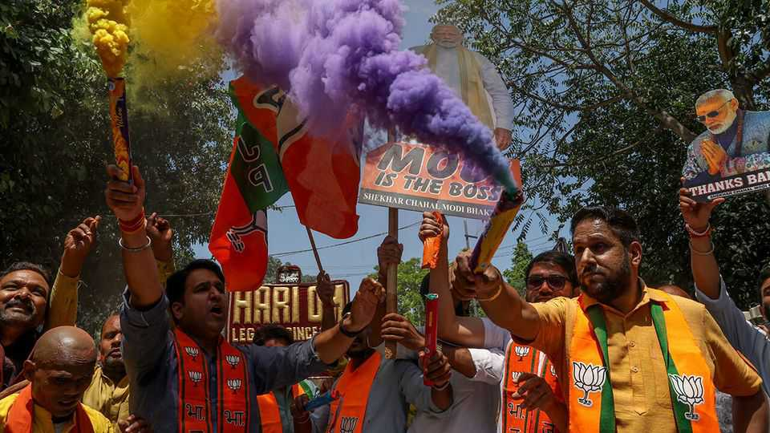
他指责玛玛塔·班纳吉（Mamata Banerjee）领导的印度人民党（Trinamool Congress，TMC）成员收取“灰色收入”，并涉嫌与邻国孟加拉国进行“渗透活动”。他向欢呼的人群表示：“每一个涉案者都将付出代价。”孟加拉人将亲眼见证他的意图。莫迪领导的印度人民党（Bharatiya Janata Party，BJP）在东部邦取得压倒性胜利，这是该党自12年前全国执政以来最重要的胜利之一。尽管其他地区的执政党陷入困境，BJP在邻近的阿萨姆邦（见地图）仍以37.8%得票率赢得第三届任期。班纳吉并非唯一被罢免的昔日强权地方领袖。在南部泰米尔纳德邦，M.K. 斯塔林被罢免；在邻近的喀拉拉邦，执政的共产党也遭到选民驱逐。选举过程引发的争议持续发酵。■
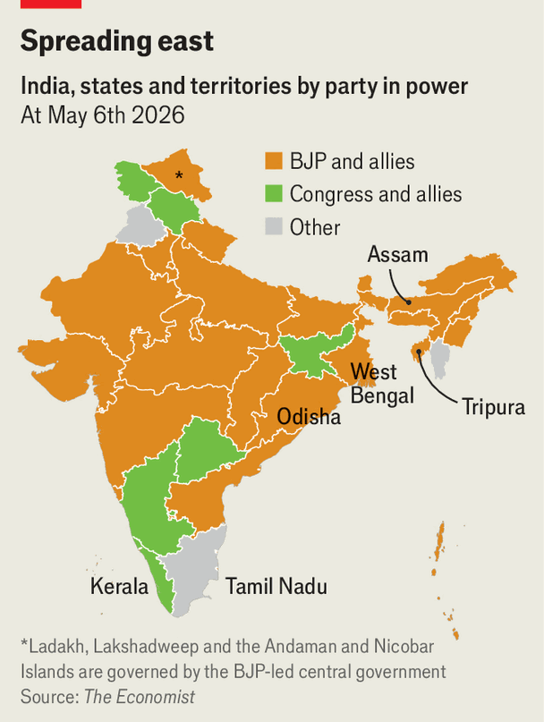
莫迪并非首位利用对机构的控制力影响选举的印度领导人，但他是自1970年代英迪拉·甘地（Indira Gandhi）彻底取消选举以来，最无情的施政者。他最新使用的工具——在西孟加拉邦最为激进地实施的选民名单修订——据批评者称，导致数百万民众失去投票资格。然而，即便这些手段令人担忧，也难以解释莫迪的统治地位，这取决于他团结印度教选民的能力。目前，他的联盟已掌控22个邦中的31个拥有选举立法机构的地区。印度人民党（BJP）此前已从以印地语为母语的地区向东扩张，2018年赢得特里普拉邦（Tripura），2024年拿下奥迪沙邦（Odisha）。但西孟加拉邦才是其长期以来觊觎的要地。该邦拥有丰富的历史，尤其以民族主义政治的发源地著称。其首府加尔各答（Kolkata）是印度最伟大的城市之一。
该邦最大的吸引力在于其规模：拥有1亿人口和人民院（Lok Sabha）约42个席位，使其在选举中具有举足轻重的影响力。卡内基基金会（Carnegie Endowment）的米兰·瓦伊什纳夫（Milan Vaishnav）认为，假设印度人民党在未来几年在传统票仓遭遇一些流失，西孟加拉邦的立足点仍能为该党提供一定保障。此次胜利规模之大——赢得该邦超过45%选票和三分之二以上席位——表明在TMC执政15年后，许多孟加拉人已对执政党感到失望。在班纳杰（Banerjee）执政期间，工业外迁导致该邦经济增速落后全国多数地区。选民逐渐将该党视为专制腐败；印度人民党则聚焦于教师招聘丑闻，同时承诺引入投资并兑现班纳杰承诺的福利政策。■
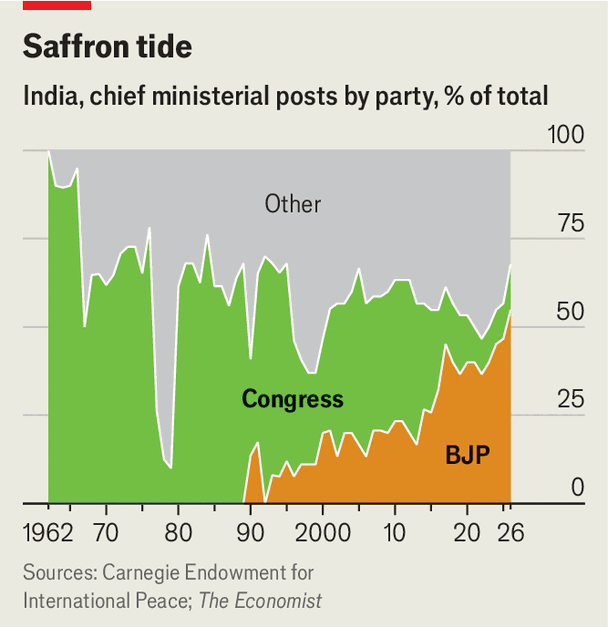
在城市中产阶级选民中表现尤为突出。它赢得了大量印度教选民的支持，使得西孟加拉邦选民群体成为印度各邦中宗教立场最为分裂的之一。即便选举过程本身并未影响结果，但这一情况仍令人担忧。超过900万份名单（占选民总数的11%）被从选民名册中移除。这些被移除的选民中，穆斯林、女性和达利特群体（TMC的核心支持者）占比过高。印度人民党（BJP）则认为，这种明显的偏见是必然的，因为班纳吉女士（Ms Banerjee）篡改了选民名单。然而，这一仓促的流程由一个被批评者认为日益受莫迪控制的选举监管机构监督，几乎未能让选民相信选举过程的公正性。在340万名提出申诉的选民中，仅有不到2000人似乎在选举前被重新列入选民名单。■
印度人民党领导的中央政府还动用了近25万武装警察监督投票过程。有报道称选举官员恐吓印度人民党（TMC）候选人和选民。选举后双方也爆发了暴力冲突。其他地区局势相对平和，但执政党同样面临选民对物价上涨和治理不善不满的挑战。在喀拉拉邦，执政的共产党政府被由国大党领导的联盟取代。这并不令人意外，因为喀拉拉邦选民几乎在每场选举中都会在两大政党之间轮换，不过这也意味着印度自近50年来首次没有共产党领导的州政府。更令人震惊的是泰米尔纳德邦的局势，斯泰因先生败给了从电影明星转型为政客的维贾伊。■
斯蒂潘长期以来是国大党领导的全国反对联盟中的核心人物，也是泰米尔身份政治的主要倡导者，与莫迪持对立立场。他帮助其所在州发展成为工业强国，凭借亲商改革吸引苹果、福特等企业落户。然而，如同班纳杰女士一样，他也被许多选民视为腐败，尽管两人均否认这一指控。钦奈谢里夫纳杜大学的拉胡尔·维玛指出，维贾伊的胜利主要得益于对旧势力毫无好感的年轻城市选民。分析人士对这位两年历史的政党领袖——一位政治新秀——如何治理印度最具活力的州感到困惑。从表面看，选举结果使莫迪的执政联盟比以往更加占据优势，而其对手则陷入混乱。■
自2024年全国大选遭遇挫折（他虽当选，但需依赖联盟盟友支持）后，他如今已接连赢得多个州选举的胜利。他或许认为，自己激进的社群政治路线仍有余地可挖，并且在扩大权力边界方面仍有空间。然而选举结果也传递出另一层讯息：许多印度选民对现任政府已心生不满。因此，这些选民可能变得难以捉摸。更不用说他们尚未真正感受到因海湾战争引发的能源危机导致的物价上涨之痛（投票结束后，中央政府宣布烹饪用燃气价格将上调）。若莫迪的反对派能迅速整合力量，他们刚刚获得了一个突破口。■ 通过订阅我们的免费周报 Essential India，随时掌握印度最新动态。
§012 亚洲被滞留的海员在伊朗战争持续拖累中艰难求生原题：Asia’s stranded seafarers suffer as the Iran war drags on · 板块：Asia · 栏目：亚洲
“我们就像战俘一样，”卡恩船长（Khan）说，他正滞留在波斯湾，导弹“四处飞舞”。一枚导弹击中了附近的一艘油轮，引发火灾并爆炸。另一次事故中，碎片使一艘船只在距离他几米处沉没。卡恩船长的船员已尝试三次通过霍尔木兹海峡，但每次都被伊朗方面拒绝通行。“我们感到害怕，”这位不愿透露全名或船只信息的船长说，“我们必须回家。”但真正能回家的却寥寥无几。
5月3日，唐纳德·特朗普宣布了一项“引导”被困船只离开霍尔木兹海峡的计划，但随后因试图与伊朗达成协议而暂停。约2万名海员仍滞留在海湾。这些海员大多来自亚洲相对贫困的国家，如菲律宾、印度尼西亚和印度。这些国家为全球商船队提供大量船员，而商船队承担着全球85%的商品运输（按体积计算），包括石油、智能手机、化肥和食品。然而，这些水手正日益陷入他们无涉且未准备的冲突之中。霍尔木兹海峡的关闭只是导致如此多海员滞留海湾的众多原因之一。国际运输工人联合会（ITF）已为会员争取到拒绝进入该地区航行并获准遣返的权利。■
船员在公司找到替代者之前无法合法离船，而鲜有人自愿接替他们。从中东地区飞离的航班票既昂贵又稀缺，进入海湾国家的签证也难以获取。这意味着即便海峡重新开放，imec（代表航运公司的机构）负责人弗朗西斯科·加尔吉乌洛表示，该地区船员恢复正常至少需要“六个月”。部分船员仍直接面临危险。4月下旬，两艘被伊朗扣押的船只上共有15名菲律宾船员，他们安然无恙，但至少有10名船员（包括印度和泰国籍）在战争中丧生。阿朱恩（非真名）的船员正在准备午餐时，一枚炮弹击中船只，导致其中一人死亡。通常情况下“船是活的”，但爆炸后“没有声音，没有节奏”。■
“这艘船仿佛一艘幽灵船。”阿朱恩和船员们抓起桶子，舀出海水泼向一个巨大的“火球”，随后他们被救起。但仍在海湾地区的人处境各异。一些船主已签署集体谈判协议，该协议保证在战区工作的海员获得双倍工资，并享有遣返权利。部分水手乐于接受丰厚奖金，同时承担比平时更少的工作量。然而据国际运输工人联合会（ITF）统计，不到一半的商业船舶覆盖此协议。即便在签署协议的船舶上，船员们的生活也愈发艰难。船长卡恩“面临淡水危机”；如今一吨淡水成本高达50美元，此前约为2美元。船员们不得不限量使用淡水。正如特朗普所指出的，其他海员也正面临食物短缺问题。■
选择离开海湾本身就是一个风险，因为大多数海员都是按合同工作。海员们将战争视为众多近期困境中的最新一个。他们的职业一直充满艰辛与危险；职业风险仍包括索马里半岛附近和几内亚湾海盗袭击事件。但新冠疫情使情况尤为严峻，当时各国政府禁止海员上岸，阻止船员轮换。阿朱恩（Arjun）连续20个月未见妻子。一些人不满越来越多雇主在船只上抛弃海员且不支付工资。有人希望这次危机能促成改变。孟加拉国工会负责人阿纳姆·乔杜里（Anam Chaudury）对计划未来战争的领导人提出简单要求：“请给海员们时间逃离。” ■
“让他们不要成为你胡闹行为的受害者。”红海并非唯一存在海员安全威胁的海域。近年来，胡塞武装的导弹和无人机已导致多名红海海员丧生，俄罗斯的袭击也造成黑海多名船员死亡。亚洲各国政府对海员群体持同情态度，因为海员是重要的政治与经济力量。来自菲律宾的59万名海员（各国中人数最多）每年汇回超过70亿美元，占该国总汇款额的五分之一。菲律宾海员甚至曾拥有自己的政党——安克拉党（Angkla）。因此，菲律宾政府强调其海员可拒绝前往海湾地区服役，这可能进一步加剧仍滞留当地的海员困境。■
印度领导人正努力将区域内的海员遣返，并确保公众了解他们的努力。所有国家都对改善海员生活有着共同利益。即便在战争爆发前，合格海员数量仍不足以满足需求。这份工作长期以来为像阿朱恩（Arjun）这样的男性提供了脱贫途径，提供远高于陆地工作的薪酬，并给予“环游世界”的机会。但这也意味着数年时间“在一片孤独的海上，驾驶一艘小船穿越浩瀚海洋”，而这样的航行正变得愈发危险。■ 编辑注：5月5日，唐纳德·特朗普宣布暂停美国引导商船离开霍尔木兹海峡的计划。如需独家亚洲政治、经济与安全报道，请订阅我们的周度会员专属简报Asia Bulletin。
§013 能源冲击推动亚洲生物燃料抢购潮原题：The energy shock triggers an Asian dash for biofuels · 板块：Asia · 栏目：亚洲
霍尔木兹海峡的封锁迫使亚洲能源进口国寻求新的市场。泰国希望从尼日利亚和哈萨克斯坦购买更多石油；越南如今从安哥拉和阿根廷进口原油。但即便各国扩大原油采购范围，也在向更近的资源伸手：农田。亚洲各国政府正宣布或加速推进扩大生物燃料使用的计划。例如，印尼计划于7月1日前推出B50（柴油中掺混50%棕榈油）。越南已开始销售E10（乙醇与汽油混合物，乙醇占比10%），为6月1日强制切换做准备。
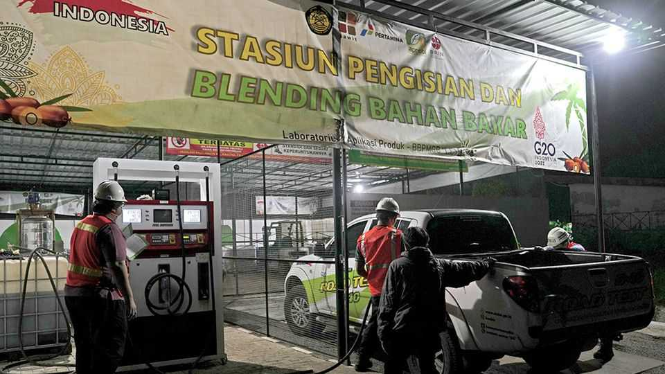
上周，印度已推出E20混合燃料，开始推进向更高比例混合燃料升级的进程。这一举措由能源安全驱动。印尼推动B50混合燃料的举措预计每年可节省约48万亿印尼盾（约合28亿美元）的补贴，并减少40亿升柴油的年消耗量，能源部长希望这将终结柴油进口。印度于2014年引入E20混合燃料后，由此减少的石油进口已节省约1.4万亿卢比（约合160亿美元）的外汇。但存在一些问题。首先，混合燃料通常不受欢迎。印度司机抱怨老旧引擎无法适应E20混合燃料。争夺耕地的矛盾可能是最大成本。用于燃料生产的作物可能影响粮食产量并推高物价。■
2024-25财年，印度粮食公司（Food Corporation of India）将大量国家储备大米转用于国内乙醇计划。菲律宾总统提议暂停以椰子为原料的生物柴油强制配额，担心此举会推高油价。这些影响可能跨越国界。若印尼将更多棕榈油投入燃料市场，将减少出口量，推高全球食用油价格，损害依赖进口的国家消费者利益。而中东局势僵局正推升化肥成本，亚洲国家试图应对能源危机的同时，可能正在加剧粮食危机。■ 为获取亚洲政治、经济与安全领域的独家报道，请订阅我们的周度付费新闻简报Asia Bulletin。
§014 美国国际开发署（USAID）的大幅削减留下空白，中国无意填补 无救世主原题：The gutting of USAID has left a void China will not fill · 板块：Asia · 栏目：亚洲
亚洲 | 无救世主 美国国际开发署（USAID）的大幅削减已造成严重后果，而中国无意填补这一空白。中国每捐赠1美元，就贷款35美元。这并非美国援助的替代品。2025年3月，缅甸Pyi Gyi Khin组织在USAID被削减后的一个月内，解雇了14名经验最丰富的员工，这些人曾多年致力于与艾滋病患者建立信任。随后一场毁灭性地震摧毁了用于储存药品的冷链设施。工作人员目睹救命药物在高温下变质。“我们用一年时间推翻了20年的公共卫生进展。”该组织项目协调员纳乌·扎尔利（Naw Zarli）说道。该组织预算被削减80%，至今未找到替代资金来源。■
美国国际开发署（USAID）预算大幅削减后，一些人猜测中国将填补这一空缺。毕竟，当年缅甸地震时，中国曾派出大规模救援队并承诺提供1.42亿美元援助——这在过去是美国会采取的行动。但认为中国的开发融资能替代美国损失的援助，这种观点误解了消失的援助本质以及中国实际提供的内容。中国对外援助预算——2024年约为28亿美元——仅为美国特朗普政府前年350亿美元预算的零头。但这种差距不仅是财政层面的，更是结构性的（见图表）。根据追踪中国发展融资的威廉与玛丽学院（William & Mary）研究机构AidData数据，中国对外融资中约85%以贷款形式发放，而非援助。■
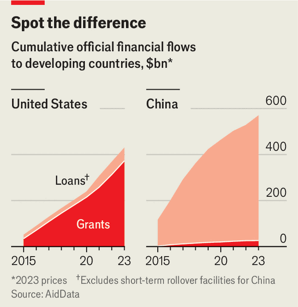
2023年，中国的官方发展援助（ODA）——包括无偿援助和优惠贷款——仅占其全球投资组合的1.3%。其年度援助预算大致相当于意大利的规模。每捐赠1美元，中国同时提供35美元贷款。无论美国国际开发署（USAID）是否削减援助，中国的策略始终如一：聚焦于维护其经济与战略利益。根据AidData数据，2014年至2022年间，美国63%的援助资金用于改善治理，其余则投入健康与人道主义援助领域。这些项目支持民间社会、资助卫生诊所并培训独立记者，包括在那些中国影响力日益增强的国家。■
中国资金主要流向工业、采矿、能源和交通运输领域：由中资国企主导的大型基建项目，主要通过主权贷款融资，并旨在产生商业回报。唐纳德·特朗普如今正通过发展金融公司（Development Finance Corporation）追求类似目标。这种错配导致损失最严重的恰恰是中方无意替代的领域。在东南亚，依赖美国资助的独立媒体机构正接连倒闭。据国际新闻协会（Internews）的罗恩·里德（Rowan Reid）表示，在缅甸，美国曾为多家媒体提供约70%的资助，其中数家预计今年将关闭。■
军政府的暴行——空袭村庄、大规模屠杀——将越来越难以被报道。“这对军政府来说效果非常好，”里德先生说，“如果没有报道，这就会变成一个巨大的盲区。”美国国际开发署资金枯竭后，缅甸独立媒体《湄公河新闻》创始人南林·赫特（Nyan Linn Htet）解雇了13名常驻员工中的15人，缩减了报道范围。自由亚洲电台（Radio Free Asia）和美国之音（Voice of America）的关闭尤其打击了柬埔寨、老挝、缅甸和越南等国，这些国家的独裁者长期以来一直攻击独立新闻业。与此同时，中国则在悄然扩大其媒体影响力。它与东南亚和太平洋岛屿的小型新闻机构签订内容共享协议。健康后果同样严峻。扎尔莉女士（Ms Zarli）目睹新艾滋病感染病例激增，因为相关项目已关闭。■
美国国际开发署（USAID）数十年来一直资助致力于公共卫生议题的非营利组织，如计划生育、艾滋病、疟疾和肺结核等。相比之下，中国长期坚持援助必须实现“互利共赢”的原则，其健康领域的援助主要通过向政府提供贷款以建设基础设施，或通过联合国等多边组织进行资金再分配。在柬埔寨，人权组织ADHOC（提供土地掠夺、人口贩卖及性侵受害者法律援助）已裁减超过60%的员工，业务范围从23个省份缩减至12个。USAID占其预算的70%，欧洲捐助者填补了10-15%的资金缺口。ADHOC主席尼克·索卡（Ny Sokha）表示，中国资金并非选项。■
柬埔寨人权活动人士尼·索克拉表示，即使中国提供金钱，他也不会接受，因为中国不民主且不尊重人权。诚然，中国推行自己的计划，通过培训来自贫困国家的政界人士、政府官员和记者，来推广其治理模式并输出其政治意识形态。但尼·索克拉及其人权活动家同伴从未被邀请参与其中。■ 为获取亚洲政治、经济与安全领域的独家报道，请订阅我们的周度订阅者专属新闻通讯Asia Bulletin。
§015 美国正在台湾附近集结部队以遏制中国可能的挑衅行为原题：America is massing troops near Taiwan to deter troublemaking by · 板块：Asia · 栏目：亚洲
对于大多数时间而言，台湾海峡都是风浪汹涌的海域。强风在海峡160公里宽的水域呼啸，秋冬季节掀起巨浪。夏季则因强洋流和偶尔的台风，使得渡海变得危险。但每年4月和5月的数周，以及9月和10月期间，台湾海峡会笼罩一层雾气，风平浪静。
对美国军方规划者而言，这使局势更加危险：如果中国某天试图发动入侵，他们的推论是，攻击将发生在那两个窗口期之一。因此，美国今年春季在菲律宾附近集结部队并非偶然。约10,000名美军参与了自4月开始的年度演习。5月4日，数千名士兵在菲律宾北部海岸的拉帕斯沙丘沿沙滩一线布防。记者目睹了他们演练抵御“红队”敌军的两栖入侵。美军炮兵部队向海面远处目标发射HIMARS火箭，阿帕奇直升机则对近海目标进行扫射。海滩上的士兵则对登陆的空中和海上无人机进行射击。官员表示，这些演习是训练机会。■
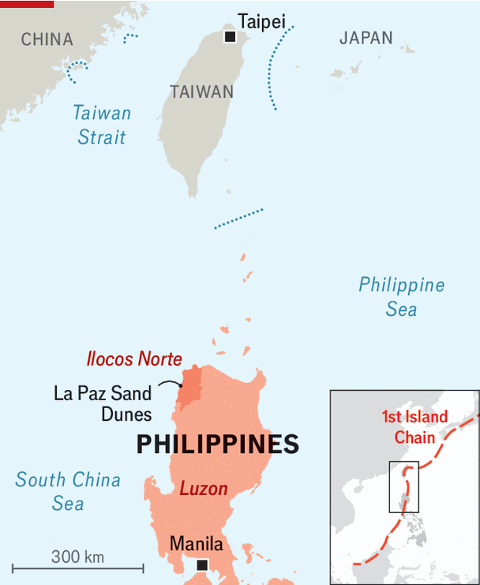
他们也是有意识地将部队和装备部署在最能有效威慑中国的时机和地点。类似演习也发生在日本南部群岛，靠近台湾，时间则在九月的“公平海域”窗口期。菲律宾和日本均认为，若美中因台湾爆发战争，由于地理位置接近，他们将无法置身事外。亚洲一些人担忧，唐纳德·特朗普可能在即将与习近平主席举行的峰会后，为与中国达成协议而削弱美国对台湾防卫的承诺。但今年美国仍向菲律宾增派了1000名士兵参与演习，尽管有担忧其对伊朗的战争可能影响其在太平洋威慑中国攻击的能力。■
5月6日，美国首次从菲律宾领土试射一枚Tomahawk巡航导弹，尽管由于美国在波斯湾的消耗，导弹供应紧张。凭借其1,600公里的射程，Tomahawk导弹可以从菲律宾领土打击台湾海峡的大部分区域。“我对威慑力下降毫不担心，”菲律宾国防部长吉尔伯特·特奥多罗（Gilbert Teodoro）上个月在接受路透社采访时表示。但他警告称，如果中国认为“存在弱点或机会”，就会趁机而动。或许是为应对美国被视作分心或抛弃的感知，菲律宾今年邀请了其他国家参与演习。日本舰船构成了外国海军力量的主力，日本地面部队也首次参与其中。■
5月4日的反登陆演习中，他们防守了曾在二战期间占领的海滩，加拿大著名公主帕特里夏轻步兵营的士兵也参与了这一行动。澳大利亚、法国和新西兰部队则参与了其他演习环节。这在一定程度上源于菲律宾总统费迪南德·马科斯（Ferdinand "Bongbong" Marcos, Jr）发起的外交运动，旨在吸引其他国家参与菲律宾防卫。马科斯近年来愈发直言不讳地谈论中国威胁，希望表明菲律宾对华挑衅的担忧并非仅源于与美国的同盟关系。今年演习的大部分内容，包括在拉帕斯沙丘进行的实弹射击演练，均在马科斯家族长期掌控的伊洛科斯北省举行，该地区靠近台湾海峡。但马科斯2028年6月卸任后局势又将如何发展？■
目前最可能接替他的是莎拉·杜特尔特（Sara Duterte），她是马科斯总统更亲中国的前任总统罗德里戈·杜特尔特（Rodrigo Duterte）的女儿。若她当选总统，军演的未来将充满不确定性。美军可能需要另寻他法来维持存在。■ 为获取亚洲政治、经济与安全领域的独家报道，请订阅我们的周报《亚洲简报》(Asia Bulletin)。
§016 树木的罪状原题：The case against trees · 板块：Asia · 栏目：亚洲
两年前，孟买（Mumbai）一条繁忙街道——希尔路（Hill Road）上的建筑被拆除，以拓宽道路缓解交通拥堵。但当局保留了矗立在原建筑前的大型雨树。理论上，道路已拓宽；实际上，原建筑的占地如今变成了一个非正式停车场。希尔路的这棵树并非个例。在孟买，新增车道导致交通受阻，树木依然扎根原地。其他快速发展的城市也面临同样的问题。造成这种荒谬局面的原因在于，有一群比司机更令当局头疼的群体——环保主义者（tree-huggers）。■
印度在过去25年里疯狂地推进基础设施建设，既包括城市内部也涵盖城市之间。纳伦德拉·莫迪（Narendra Modi）2014年上台后，这一进程明显加快。莫迪最热衷的活动之一就是主持高速公路通车仪式。然而，一种二元对立的观念却逐渐盛行，认为树木与经济发展是彼此对立的。这种想法对于一个本可以同时拥有更多树木和发展的国家而言显得颇为奇怪。印度城市亟需增加绿化面积。最近一次热浪将气温推至40°C以上，再次提醒所有人——尤其是90%没有空调设备的印度家庭——城市树木的重要性。它们不仅为人类提供遮荫，还能防止沥青路面升温并辐射热量。但事情很快变得荒谬起来。■
一家报纸刊登了一则关于某人比较阳光与树荫下温度差异的报道。该报称：“这不是魔法”，显然没有讽刺意味，但某种“在匆忙建设更多高架桥和高层建筑的过程中被遗忘的事物”。然而，印度的城市同样需要建设更多高架桥和高层建筑。该国约40%的14.5亿人口居住在功能失调的城市中。改善他们的生活与生产效率的一种方式，是让出行更加便捷。糟糕的道路网络需要扩容，公共交通必须全面铺开，而每个地方都需要大幅增加住房供应。政府急于推进这些项目，但往往适得其反。例如，2019年孟买官员在法院裁定后数小时、环保活动人士尚未有机会申诉前，便连夜砍伐了2000多棵树。■
政府移植树木的尝试成效参差不齐。由于缺乏全面数据，很难判断承诺种植额外树木以弥补损失的承诺是否兑现。细节至关重要：雨树能提供遮荫、栖息地、空气净化和碳储存功能；椰子树则能产出椰子。缺乏数据支持，环保人士只能诉诸情感诉求和循环论证。当城市拓宽道路或规划新道路时，善意市民会指出这只会助长私家车拥有，投资公共交通更明智。确实如此。但许多地铁线路，包括加尔各答和班加罗尔的线路，都因保护树木的诉讼而停滞。有人回应称，公交车更便宜、更灵活且对生态负担更小。当然，但公交车仍需道路行驶。■
循环往复，基础设施建设进度迟缓、成本高昂，绿化却在不断消失。本专栏以榕树命名，为了榕树（Ficus）的面子。Banyan专栏（榕树）以应有的尊重指出：某些树木必须被移除。相比在自然与城市化之间做糟糕的权衡，存在更优解。但实现这一点需要政府展现勇气：公开数据、发布规划、说服其名义上的服务对象。同时，市民也需放弃部分树木，若能获得反馈机会并被认真对待，他们定会如此。奇怪的是，所有人都清楚当前的动态是反生产性的。■
环保主义者谈及为何为单棵树争执时——据2018年最后一次统计，孟买共有约300万棵树——他们会承认这是为了维持压力。这种做法迫使官员在砍伐数千棵树时不得不三思。官员们将批评者描绘成阻碍进步的障碍，但私下里他们也承认环保主义者发挥着重要作用。若没有这些环保主义者，工程师们会毫不犹豫地砍伐整片森林，只要能更快更便宜地修建道路。每个人都在理性行事，但没有人真正理智。结果就摆在那里，就在希尔路上。■ 编辑按：这是榕树专栏的最后一篇。两周后它将以不同形式重新出现。《经济学人》订阅者可注册我们的Opinion通讯，汇集了最佳的社论、专栏、特邀评论和读者来信。
§017 可能帮助美中修复关系的协议原题：The pact that could help America and China repair relations · 板块：China · 栏目：中国
Max Baucus与Stephen Roach撰文
中美两国领导人期盼已久的峰会终于即将举行。在经历一次取消后，峰会已重新安排于5月14日至15日在北京举行，这为两国领导人修复长期中美冲突造成的损害提供了重要契机。他们上一次在2025年10月于韩国举行的会晤，仅实现了紧张局势的略微缓和，但未取得实质性突破。我们认为，即将举行的峰会为一项重要倡议打开了大门：两国领导人共同支持双边投资条约。
作为双边投资协定（BIT）的常见称呼，它是指两国之间就跨境私人投资的条款和条件达成的协议。这些协定在过去半个世纪内迅速增加，目前已有超过2,200项在生效；美国拥有40项，中国则有110项，数量居世界首位。BIT的核心理念是通过降低投资壁垒来促进经济增长。与特朗普先生错误地将双边贸易失衡视为零和博弈的单边威胁不同，中美双边投资协定有望在两国同时促进资本形成、就业、收入和消费。据时任美国贸易代表迈克尔·弗朗姆称，经过近十年的谈判，中美双边投资协定在2016年底已达成超过90%的共识。■
然而，自2016年11月特朗普首次当选以来，相关谈判一度暂停，此后从未重启，即便在拜登政府时期亦然。对美国而言，其双边投资协定（BIT）计划可追溯至1980年代的里根政府时期，这些协定在与贸易和投资伙伴进行谈判时发挥了重要作用。美国目前生效的40项双边投资协定包含大量定制化条款，涵盖符合各伙伴关系独特特征且符合美国利益的附加条款：如针对知识产权投资的特殊规则（波兰）、外汇储备（埃及）、本地化要求（土耳其）、政府采购实践（乌拉圭）等。对中美关系而言，同样可采取这种量身定制的谈判策略。
美国谈判代表长期以来一直推动市场开放举措，例如透明的许可制度、知识产权保护和改善劳工标准。中国国有企业被指控滥用政府补贴的不公平行为，也可能在新的双边投资协定（BIT）中得到解决。关键的是，这一问题具有双向性。中国对美国政府补贴也存在担忧，这加剧了美国新近对产业政策的偏好。对两国而言，在BIT谈判中，明确双重用途（军民两用）技术的应用将是另一项优先事项。双边投资协定（BIT）是各国就“敏感”领域达成可行安排的合理方式，这些领域他们不愿向跨境投资开放。中国维持一份“负面清单”，其中包括国防、稀土、基因、核能和教育等领域。■
尽管美国没有正式的负面清单，但其拥有名为CFIUS的国家安全审查机制。此外，美国已扩大其“实体清单”，限制与中国关联的监控技术、人权侵害及大规模杀伤性武器相关企业，同时限制中国获取先进半导体、其他人工智能相关活动、生物科技和敏感通信技术。这些排除性清单为各国在双边投资协定（BIT）上达成广泛共识提供了途径，而无需纠结于各自选择保护的特定产业。这些清单曾是2015-16年中美达成协议的障碍，但若双方将其视为未来削减清单的起点，也可能成为机遇。这或将使BIT成为一项动态协议，随着时间推移不断调整。■
同样重要的是，美中两国可通过双边投资协定（BIT）解决强制技术转让这一棘手问题。美国及其他跨国公司通常需通过与本地企业合资的方式在中国投资，而合资企业往往通过技术转让和专业知识获取了更多利益，远超其国际合作伙伴通过市场准入和额外收入所获得的收益。取消美中跨国公司直接投资的所有权上限将消除对合资企业的依赖，而合资企业长期阻碍了两国间的跨境并购。仅由中美企业全资拥有的科技公司或将从这一变革中获益良多，尤其是人工智能领域的新兴战场——先进半导体领域。■
任何技术转让行为仍需遵守双边投资协定（BIT）协议，这些协议旨在管理人工智能安全、隐私和竞争等共同优先事项。在美国推动BIT的政治理由颇为复杂。任何条约的批准都需要参议院三分之二的支持——尤其在当前高度党派对立的氛围下，获得中国支持的可能性微乎其微。不过或许存在变通之法：将该努力重新包装为“国会-行政协议”，如同北美自由贸易协定（NAFTA）及其后续协议美墨加协定（USMCA）所采用的形式。此类协议可由国会两院以简单多数通过。重启停滞的中美BIT谈判将是重建互信的坚实第一步。两国领导人均可将其宣传为促进增长的举措。投资条约通常仅吸引企业高管和政策专家关注。■
但这次重燃的希望，或许能让即将在北京举行的峰会从一场临时性活动，转变为世界两位最强势领导人可以正当庆祝的重大里程碑。■ 马克斯·巴克斯（Max Baucus）曾于1978年至2014年担任美国参议员，2014年至2017年担任美国驻华大使。史蒂芬·罗奇（Stephen Roach）曾于1982年至2012年担任摩根士丹利首席经济学家，目前为耶鲁大学教授。■
§018 人工智能重燃冷战式困境 中国原题：Artificial intelligence revives a cold-war-style dilemma · 板块：China · 栏目：中国
当习近平与特朗普于5月14日至15日在北京会面时，他们可能讨论的棘手议题包括中东战争、贸易失衡以及台湾地位。将人工智能加入这一清单。北京和华盛顿的精英阶层都对这项技术的迅猛发展感到不安。AI模型越智能，其对国内繁荣和国际地缘政治影响力的必要性就越强。但其所带来的风险也在同步上升。自原子弹问世以来，大国从未面临如此严峻的困境。特朗普政府对此的认识正日益加深。
它在近期与美国Anthropic公司的一系列交锋后，放弃了对科技监管的放任态度，正考虑要求新模型须经政府审查。Anthropic公司于4月表示，已研发出Mythos模型，该模型具备如此强大的网络防御漏洞探测能力，以至于无法公开发布。美国及其竞争对手对此高度关注。起初持怀疑态度，但中国官方媒体随后注意到Mythos的“前所未有的网络攻击能力”，而俄罗斯媒体则称其“比核弹更危险”。对日益强大的模型可能发动网络攻击、设计生物武器或失控的担忧，使AI外交变得尤为紧迫。中美双方一些人士正悄然评估，是否能就这项各自视为制胜关键的技术制定共同规范。然而信任危机依然存在。■
双方都不愿放慢自身发展，以免让对方获得优势。一些美国科技界人士认为，率先构建能够自我进化的（因此愈发强大的）AI模型，可能带来巨大的战略优势。中国专家则普遍将AI视为经济发展的关键：比核武器更重要的核动力。薛兰（Xue Lan），中国国务院顾问，在四月末于美国国会大厦举行的活动上向与会者表示，美中两国在AI安全方面存在“共同利益”。“如果一个国家不安全，我们所有人都不安全，”他说。薛兰与北京人工智能安全研究所所长易增（Yi Zeng）呼吁全球协作监管甚至放缓AI发展。这与中国政策相契合。2022年ChatGPT问世后不久，中国便开始推动国际协作，呼吁成立联合国相关机构。
中国外交官提出了“暂停”人工智能开发的设想，认为应制定全球标准以确保人类保持对人工智能的控制。其计划呼吁西方国家向发展中国家分享其人工智能技术，以避免将世界划分为技术拥有国与技术落后的国家。双边合作更有可能，且受到华盛顿官员的青睐。美中两国共同拥有全球90%的前沿计算能力，因此是唯一具备实际监管影响力的国家。美国官员也将中国的人工智能生态系统视为特定风险来源。中国的人工智能模型大多为“开源”，意味着其使模型能够运行的参数权重可自由发布，这使得恶意行为者能够轻松获取强大的人工智能工具。直接对话并非完全新颖。特朗普与习近平在10月于韩国釜山会面时，曾同意“在人工智能领域合作”。
在那之前，2024年拜登曾与习近平达成协议，确认人类而非人工智能将掌控核弹头。但新兴风险的加速发展正迫使人们重新审视任何零散的合作方式。美中研究人员已开始以更低调的方式开展合作。例如，中国最大实验室之一百度已采用由Anthropic开发者撰写的开源代码，用于规范人工智能代理间的沟通方式。近年来，美中科技巨头与退休官员之间已举行数场非正式对话，有时甚至在秘密场合进行。参与者表示，真正推动标准对齐所需的专家往往不在场。目前看来有三种合作方式变得可行。第一种是对话。一位西方官员表示，美中两国可开展“战略互信”合作。■
在核武器谈判中，各国通常会讨论如何管理风险、建立信任并降低误判的可能性。美国和中国可能各自制定AI规则，但未协调进行。美国人工智能政策与战略研究所（Institute for AI Policy and Strategy）的卡森·埃尔姆格伦（Karson Elmgren）表示：“如果双方阅读了相同的学术论文并拥有相似的技术认知，他们可能会采取合理的应对措施。”第二点，美中两国或许能就如何测试AI模型的安全性达成共识。在不共享研究成果的情况下，双方仍可遵循共同的危险行为判定标准，或识别与人类创造者意图不符的动机的方法。乔治华盛顿大学的杰弗里·丁（Jeffrey Ding）指出，用于监控AI安全的数据与AI发展所需的关键信息难以区分。■
双方隐瞒结果可缓解技术数据泄露的担忧。第三，信任但需验证。若特朗普与习近平有意推进，可寻求正式协议共同开发安全测试并共享评估结果。然而，此举可能需要侵入性手段确保协议得到遵守，例如由国际仲裁机构（如联合国国际原子能机构）对数据中心活动进行检查或信息传输。此类合作似乎遥不可及。美国AI研究者对中方官员的诚意持怀疑态度。中国AI实验室在安全措施上相对宽松，或许因模型尚未强大到构成存在性威胁，或因缺乏时间和资金进行测试。■
伴随DeepSeek v4模型发布的文件，遗漏了美国实验室常见的安全措施。前拜登政府官员瑞安·费达修克（Ryan Fedasiuk）指出，中国关于AI安全的表态具有表演性，旨在“让美国人显得糟糕”。尽管中国公开支持全球AI治理，但至今仍拒绝就该议题与美国展开详细讨论。2024年，美国曾派高级安全官员和技术专家赴日内瓦与中方同行会面，但中国方面仅派政治官员出席，且要求美国解除先进计算机芯片出口限制后才愿讨论AI安全问题。熟悉会谈情况的知情人士透露，美方外交官抱怨中国长期利用对话谋取政治利益，例如2022年因南希·佩洛西（Nancy Pelosi）访问台湾而终止气候议题讨论。■
中国在人工智能领域的讨论，包括近期关于Mythos的言论，折射出一种病态的猜疑——即美国实验室正利用安全问题控制技术发展。一些人担忧，共享安全数据不过是美国窃取中国技术机密的幌子。卡内基基金会（Carnegie Endowment）核裁军谈判专家通昭表示，中国战略家普遍对与技术优势方达成协议持怀疑态度。19世纪中国签订“不平等条约”的历史经历，使官员们对可能延缓发展或锁定二流地位的协议格外警惕。由于涉及高风险，合作难度更大。“如果我们在美国人工智能领域失利，那就彻底完了。”美国财长4月在《华尔街日报》上如此表示。习近平近期称人工智能为“定义时代”的技术。■
然而，中美领导人或许终将意识到人工智能对人类存亡的深远影响。丁先生指出：“历史证据表明，只有在悲剧性事故后，人们才会真正采取行动。”他提到1984年博帕尔化学灾难后建立的全球标准，或是1986年切尔诺贝利核事故后形成的规范。人工智能谈判仍是人类智慧的真正考验。■ 订阅我们的新周刊《鼓楼》，了解世界如何看待中国，以及中国如何看待世界。
§019 A Chinese high-seas misadventure in luxury yachts原题：A Chinese high-seas misadventure in luxury yachts · 板块：China · 栏目：中国
中国一家国有企业正与捷克亿万富翁争夺意大利豪华游艇制造商的控制权。故事始于2012年，当时由省级政府控股的柴油发动机制造商潍柴收购了濒临破产的法尔威蒂船厂。此后，该公司同时在米兰和香港上市。由亿万富翁卡尔·科马雷克创立的捷克投资集团kkcg已成为第二大股东，持股约23%。潍柴则持有近40%股份。但科马雷克等人认为中国所有者正将公司引向错误方向。其中一担忧是潍柴可能试图将意大利企业的技术转移至中国，用于其海事产业。
这将是一个问题，因为Ferretti希望进军利润丰厚的海事安全领域。如果中国国企能接触到这些技术，该公司就无法指望与西方军事技术合作。这是KKCG用来说服持有剩余40%股份的股东的一个论点。股东们即将投票选出新的董事会成员和公司领导层，结果将于5月14日公布。Komarek可能在与中国国企的较量中占据上风。Ferretti的潍柴集团任命的老板阿尔贝托·加拉西（Alberto Galassi）却意外地站在了KKCG一边。“时代已经完全改变了，”他最近表示。这确实如此。2012年潍柴集团的收购案标志着全球中国并购浪潮的开始，这一浪潮在2016年达到顶峰，当年的交易额超过2000亿美元。■
但中国共产党及许多西方政府近年来对大量资本外流产生了疑虑。在意大利，潍柴面临“黄金权力法”的约束。该法律允许国家在外资持股超过一定比例时介入涉及战略资产的交易。在潍柴的案例中，这一比例为40.4%。这阻止了潍柴增持股份并扩大投票权。与此同时，意大利总理乔治娅·梅洛尼政府正推动另一家中国国企中化集团出售其在轮胎制造商倍耐力的大量股份。但北京的领导人或许也想看到潍柴的造船业务受挫。今年四月，管理国企的国家出资企业监督管理委员会（sasac）设立了海外分支机构，以更密切地监控企业海外活动。■
一位银行家表示，其中一部分工作涉及清理那些干预过多的少数股权以及与企业核心业务关联不大的混乱收购。如今，国际社会对中国国有企业的整合态度趋于冷淡。■ 订阅者可注册我们的新周刊《Drum Tower》，以了解世界如何看待中国——以及中国如何看待世界。
§020 中国认为美国正在衰落但依然危险无比 中国原题：Thinks America is declining but still uniquely dangerous · 板块：China · 栏目：中国
1月下旬，唐纳德·特朗普重返白宫满一年之际，北京一群学者撰写报告向这位美国总统致谢。他们的感谢充满讽刺意味，并非对特朗普政策的肯定。但这种情绪是真实的。他们写道：感谢特朗普总统驱逐了美国的传统盟友；感谢他向世界展示了中国更加值得信赖和稳定；感谢他给中国施加经济压力，从而推动中国创新；最感谢的是，他揭示了美国正步入“帝国黄昏”，一个衰败而虚伪的强权。 ■
中国人民大学中国财政金融学院王文及其同事的研究报告代表了中国对美国讨论中最为强硬的一方。王文是一位乐观的民族主义者，以犀利言辞著称。但他并非特例。许多中国顶尖知识分子和官员都相信美国实力正走向终结。这一观点最权威的表达来自习近平的论断：“东方崛起，西方衰落。”（他外交辞令地未明确指出这是中国与美国的对决。）官方媒体长期以来热衷于揭露美国的种种弊端，这是一种直白地告诉中国人民生活更优越的方式。然而，质疑中国对美国衰落判断的真诚性将是一个错误。
这种世界观，部分源于对资本主义的马克思主义疑虑，自2008年全球金融危机后在中国逐渐占据主导地位。特朗普的两次选举胜利反而加深了这一信念，人们将其视为美国民主制度失灵的例证——民主制度竟然选出了混乱的总统。近日，布鲁金斯学会的乔纳森·岑和艾莉·马修斯在一份报告中统计了中国文字中描述美国衰落的表述频率。他们的结论是，这种分析已持续近二十年成为中国话语体系的常态。但自特朗普重返白宫以来，相关讨论明显升温：他被视为美国衰落的症候与催化剂。中国对美国问题的思考中反复出现几个核心观点。■
首先，美国面临经济问题：金融化趋势、制造业能力的空心化以及公共债务的飙升。其次，军事困境：作为全球警察的负担与不可能性。最后，且贯穿所有问题的是政治缺陷：一个极端两极化的体制，无法维持共识，正逐渐转向自我毁灭的民粹主义。核心问题是，中国将如何应对自身对衰落美国的评估。一种可能性是，领导人可能选择更加激进的行动，认为随着美国实力减弱，自身空间将扩大。已有迹象表明这一点，例如中国对美国盟友（从日本到加拿大）的经济施压，以及在台湾和南海地区更加强硬的军事姿态。■
然而，其行动往往发生在灰色地带，远不及俄罗斯的领土攫取那样大胆。因此，更为关键的观察是，尽管中国做出诊断，目前仍相对谨慎。所谓“霸权焦虑”这一概念，是许多中国学者的核心理论，有助于解释这种谨慎。他们认为美国已沦为衰落的霸权，对自身影响力的丧失极度焦虑，因此在下滑过程中极易采取暴力手段。学者们以此框架来解读特朗普推翻委内瑞拉总统尼古拉斯·马杜罗、轰炸伊朗以及轻视盟友的决策。从这一视角看，美国不惜一切代价制造危机、炫耀武力，拼命维持其霸主地位。对中国而言，这意味着必须格外谨慎。■
钟声（《人民日报》4月23日评论文章作者）写道：“美国正加速滑向一个弱肉强食的世界。”中国对美国衰落的认知中，还有一层谨慎的考量。从地位上看，这一切确凿无疑：过去数十年间，美国在全球经济中的占比趋于平稳，而中国则迅速扩张。但中国最清醒的学者指出，这种相对变化并不意味着绝对损失。清华大学戴维指出，霸权与实力并非同一概念。美国对国际机构的领导力已逐渐瓦解，尤其因美国有意削弱这些机构。即便如此，美国仍是全球在经济和军事影响力方面最强的国家。■
北京大学的王缉思（Wang Jisi）也呼吁保持谦逊。尽管美国显而易见的政治困境，这些并未阻碍其经济或技术发展。此外，他指出美国政治极化往往不会持续，该国历史上有恢复平衡的记录。无论中国将美国视为一个正在衰落但难以预测的霸权国家，还是一个虽已削弱但仍具备巨大破坏力、借助人工智能实现新突破的强权，结论都是一致的：中国不应采取可能激怒美国的鲁莽行动。如果美国衰落在中国已接近共识，那么这种谨慎态度同样成为共识。这对中国而言是令人安心的处境，因为这种谨慎本应有助于降低超级大国冲突的风险。但切勿误解。■
5月中旬在北京会面时，习近平不会被特朗普办公室的气派所震撼，也不会被美国军力的展示所打动。相反，他将把特朗普视为一位衰落强权的领袖，一个充满危险却注定走向衰落的国家。■ 订阅者可注册《经济学人》观点通讯，获取我们领袖文章、专栏、特稿及读者来信的精华内容。
§021 美国潜艇在水下占据主导地位，但中国的潜艇正在迅速追赶原题：American subs rule beneath the waves, but China’s are catching up · 板块：China · 栏目：中国
国际版
笼罩在内港的渔网悄然张开。一条黑鳍掠食者悄然滑出。几分钟后，它抵达开阔海域，伴随着一声深长的呼吸，消失在热带水域之中。从关岛阿普拉港启航的“安纳波利斯号”核潜艇（USS Annapolis），作为海洋中的顶级猎手，正悄然展开与中俄争夺太平洋主导权的无声较量。水面舰艇喧嚣如卡车轰鸣，而核动力攻击潜艇则安静如特斯拉电动车般低鸣。
安纳波利斯号的船员145人（其中一名女性是本记者访问时的特殊情况）连续数月生活在人工光源与循环空气构成的超现实世界中，几乎与外界隔绝——这艘无窗的太空船正穿越令人窒息的黑暗。核动力推进意味着航行的主要限制因素并非燃料、空气或淡水，而是食物。这些工程奇迹因此如同一辆超载的商队启程，香蕉悬挂在管道上，花生酱则被塞在座椅垫之间。在水下数英寻处，厨房每日烘焙面包，将紧凑的面粉转化为蓬松的面包卷。仅维持船员在24或更多个大气压挤压的船体中生存便是一项壮举。“每一滴海水都在试图夺走我们的生命，每一秒都是如此，”舰长克林顿·埃姆里奇上校说道。■
这艘潜艇官方宣称可下潜深度超过240米，航速超过25节（实际数据保密且可能远高于此）。它配备有“战斧”巡航导弹、MK-48鱼雷、水雷，或许还有其他武器。在与伊朗的战争中，美国潜艇曾向陆地目标发射“战斧”导弹，并首次自二战以来向敌方舰船发射鱼雷，击沉伊朗护卫舰“IRIS Dena”。驻关岛执行任务的攻击型潜艇，包括服役34年的洛杉矶级（如安纳波利斯号）和新型弗吉尼亚级，被美国潜艇兵称为“尖刀部队”。在未来的对华战争中，它们将被寄予厚望，承担最早且最猛烈的打击任务。目前其任务范围包括追踪敌方弹道导弹潜艇、搜集情报以及特种部队渗透行动。■
首先，他们的主要任务是威慑。潜艇可能突然现身澳大利亚或韩国海域，或悄然接近中国军舰展示隐蔽性——甚至可能多艘同时现身于不同中国舰艇附近。深海仍是美国在军事上对华保持明显优势的最后领域。随着战场传感器密集部署，透明度不断提升，前潜艇兵托马斯·舒加特指出：“潜航的意义在于，它是唯一还能隐藏的领域之一。”然而，美国的深海主导地位也面临威胁。“静默服务”（潜艇部队）对双方实力的披露寥寥无几，但美国潜艇兵却将太平洋视作自家湖泊般自由巡弋。不久前他们还戏称中国潜艇噪音过大，连美国西海岸都能听到。如今，这种嘲讽已转为警觉。
习近平领导下的中国，已建成全球最大水面舰队和增长最快的核武库，同时也在重塑其潜艇部队。目前的潜艇舰队主要由常规动力潜艇组成，速度和续航能力有限，主要用于攻击近海航运。然而，美国情报部门估计，未来十年左右，新一代核动力远洋潜艇将主导中国潜艇部队，挑战美国在太平洋和印度洋、北极航道乃至大西洋的霸权。美国军方消息人士称，中国正借助俄罗斯技术开发噪音更低的潜艇，这些技术可能是窃取所得，也可能是以中国对俄罗斯在乌克兰战争中的支持作为交换获得的。■
美国海军潜艇部队司令理查德·西夫少将近期作证时表示，中国最新潜艇“实力非凡，融合了先进技术，挑战着美国海军长期以来的水下主导地位”。美国海军情报局局长迈克尔·布鲁克斯少将则预测，中国明年将拥有70艘潜艇，到2035年将增至80艘。关键的是，其中约40艘将采用核动力——远超此前的预估。这与中国目前全部核动力潜艇部队67艘的规模形成对比。为保持领先，美国正通过AUKUS（美英澳潜艇共建计划）向澳大利亚提供核动力技术。AUKUS潜艇预计要到2040年代才能交付。在此期间，美国承诺将在2030年代向澳大利亚出售3至5艘弗吉尼亚级核潜艇。■
澳大利亚水手已开始在美制潜艇上进行训练，这些潜艇明年将从珀斯附近基地开始定期部署。中国激烈抗议表明其高度关注。与此同时，美韩去年达成协议，计划联合建造新型“猎杀者”攻击型核潜艇（SSNs），但具体建造方式和地点细节仍不明确。韩国韩华集团正在费城开发一座新型“智能船厂”，希望该船厂能成为潜艇建造基地。日本也表现出兴趣。然而，美国潜艇建造能力却因工业基础薄弱而受阻。美澳两国已投入数十亿美元用于提升美国潜艇工业基础。大型体育赛事期间播放的“建造潜艇”广告呼吁美国年轻人投身焊工等岗位。
尽管如此，美国仍未能达到每年建造两艘弗吉尼亚级潜艇的目标。为满足澳大利亚的需求，其产量需提升至每年约2.33艘。实际上，美国每年仅能建造约1.1至1.2艘弗吉尼亚级潜艇，同时还需建造一艘哥伦比亚级战略核潜艇（SSBN）以替换老旧的俄亥俄级潜艇。美国潜艇舰队规模自十年前的70余艘缩减至目前的67艘——包括49艘攻击型核潜艇（SSN）、14艘战略核潜艇（SSBN）和4艘中型核潜艇（SSGN，可发射制导导弹）。舰队规模将进一步缩减至63艘，理论上到2054年将增至66艘。即便如此，仍远低于海军仅攻击型核潜艇66艘的目标。更糟糕的是，令人困扰的维护积压导致三分之一的攻击型核潜艇处于维护或闲置状态。USS Boise（博伊西号）已长期停用——自2017年起便陷入维护困境——美国国防部今年决定将其退役。■
夏威夷珍珠港正在建设一座新船坞，以从明年起加快舰艇维护和修理工作。即便如此，常规“基地级”维护仍需耗时超过18个月。该船坞在战争时期的辉煌成就——1942年将严重受损的美国海军约克城号航空母舰仅用三天便修复投入战斗，参与中途岛战役——已成为逐渐淡忘的记忆。英国同样面临困境。议会报告本月警告称，包括潜艇工业基础升级延迟在内的“缺陷和不足”，可能拖累AUKUS合作计划，对英国国家安全及与AUKUS伙伴的信誉造成严重后果。澳大利亚专家对此忧心忡忡，正讨论“B计划”选项。■
与此同时，国际战略研究所（International Institute for Strategic Studies，位于伦敦的智库）表示，得益于渤海葫芦岛（Huludao）设施的扩建，中国自2024年以来每年能够建造两艘攻击型潜艇和一艘核潜艇。核动力潜艇造价高昂且制造难度极大——一艘弗吉尼亚级潜艇的成本约为50亿美元——因为它们必须在极端环境下保障水手生命安全。潜艇船体需采用特殊钢材，既坚固又坚韧且具有延展性，仅由专家焊接密封。浮力控制尤为复杂：潜艇下潜时体积缩小，排开的水量减少，导致下沉速度加快（反之亦然，当潜艇上浮时）。若无法通过压载和调平系统控制，潜艇将要么直接坠向海底（可能被压碎），要么不断上浮至海面。此外，推进系统也面临挑战。■
第一次和第二次世界大战时期的潜艇采用柴油发动机在水面航行并为电池充电，以及电动机用于水下短时推进。核动力推进技术彻底改变了这一格局。"我们的潜艇燃料储备可达30年甚至更久，因此实际上具备无限续航能力，"太平洋舰队潜艇部队指挥官海军少将克里斯托弗·卡瓦纳维解释道，"这也赋予它们隐身能力。它们无需浮出水面进行 snorkel（注：指潜艇在水面呼吸）操作。"美国首艘核动力潜艇"鹦鹉螺号"（USS Nautilus）于1958年完成了穿越北极冰盖的首次航行。四月，英国战略核潜艇"先锋号"（HMS Vanguard）完成了创纪录的205天巡逻任务。在安纳波利斯号潜艇上，船员们出海时间长达数月，必须向上级报告是否希望在海上接收来自家乡的坏消息。为维持生物钟节律，舰内照明系统会模拟关岛的昼夜循环。■
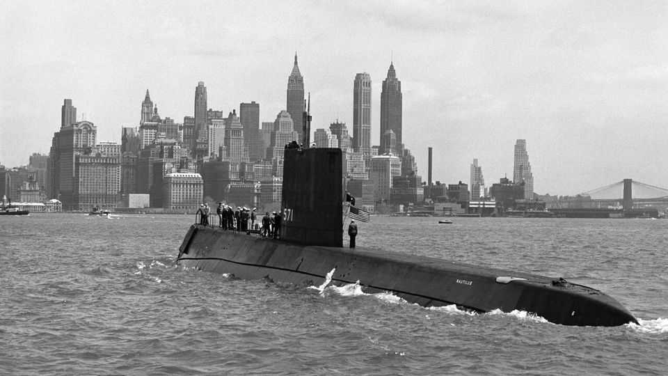
cribbage 和书籍是打发时间的好帮手。汤姆·克兰西的《红色十月号猎捕》是热门读物。水能迅速吸收大部分光波和无线电波，这使得潜艇具备隐身能力，却难以进行通讯。然而水却能轻易传播声波，无论是鲸鱼的歌声，还是敌方潜艇螺旋桨的轰鸣声。潜艇兵的技艺在于理解水温与盐度的分层、海底地形的变幻莫测以及洋流的流动规律，从而知道如何隐藏自己并寻找“声波通道”来探测远处目标。你若在潜艇内声嘶力竭地喊叫，几乎听不见外界的声音。这是因为甲板及甲板上的设备都漂浮在吸音的“浮筏”上。潜艇外层覆盖着类似橡胶的涂层，进一步减弱噪音并干扰声呐探测。
安纳波利斯号的控制室里充满了嘈杂的指令和回应声，而狭窄的鱼雷舱内更是如此。在拉动黄铜杠杆发射一枚“水弹”（空白鱼雷）前，作者不得不戴上耳塞。但内部噪音最危险的情况是出现“声学短路”，即某个漂浮物同时接触船体和外层船壳，将声音传导至水中。军官们在舰艇上巡查，寻找未妥善固定的设备，或是随意存放在禁用缝隙中的食品罐头。珍珠港作为美国太平洋舰队的基地，遍布纪念设施——不仅纪念1941年日本袭击中遇难的人员，也纪念此后潜艇部队在舰队重建期间坚守防线的船员。
太平洋上对日本商船的无限制打击行动在袭击发生数小时内即展开，其遏制日本的效果远胜纳粹德国潜艇对英国的打击。潜艇击沉了约55%的日本战时损失舰艇，包括八艘航空母舰。中国担忧美国潜艇今日可能重演类似破坏。约80%的中国石油进口需经马六甲海峡运输。伊朗关闭霍尔木兹海峡引发全球能源危机，这是一则有益的警示。美国同样需要吸取教训。其基地及其他固定目标，包括雷达和停泊的战机，已证明易受伊朗导弹和无人机攻击。■
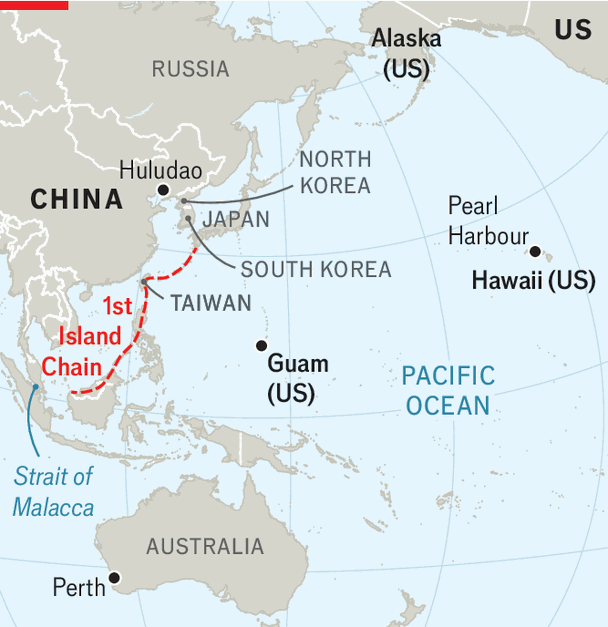
中国导弹部队实力强大，不仅能对美国在“第一岛链”（从日本延伸至马来西亚，见地图）上的基地发起猛烈打击，还能以较弱强度攻击关岛、夏威夷和阿拉斯加等后方基地。其射程还可覆盖穿越太平洋、前来参战的军舰。若中国潜艇能悄然穿越第一岛链的通道进入太平洋深处，美军将面临来自任何方向的巡航导弹齐射威胁。另一令人担忧的是，俄罗斯正日益与中方结盟。双方潜艇去年曾展开联合演习。朝鲜海军似乎也获得了俄罗斯对其潜艇计划的援助。■
即便俄北两军不参与战斗，仅通过进行演习就可能在中美战争中制造麻烦。这将使美国潜艇部队陷入极度紧张状态。至少，可信的中国潜艇威胁将延缓美军增援速度，为中国军队收复台湾争取更多时间。美军潜艇被抽调去追踪中国潜艇或监控敌对力量时，用于挑战中国舰队穿越台湾海峡的可用潜艇数量将随之减少。中国仍担忧美国在水下享有的“开放大门”，美国海军战争学院中国海事研究所瑞安·马丁森表示。
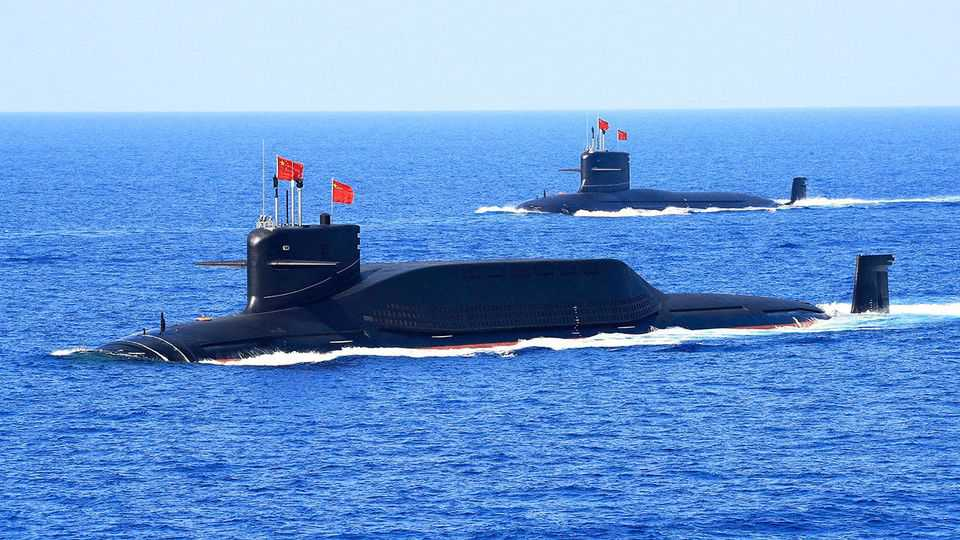
内部中国军事文献指出，美国的水下监控系统——包括卫星、机载和潜艇传感器——使其拥有“极高”概率在潜艇离港时发现目标，并在南海和东海拥有“相当高”概率拦截。应对措施之一是提升潜艇的隐蔽性。中国目前部署的093B型核潜艇采用泵喷推进系统，与美国弗吉尼亚级潜艇类似，噪音低于传统螺旋桨。更大规模的095型潜艇可能即将进行海试，似乎同样采用泵喷推进系统，并配备更灵活的X型舵。另一新型号096型核潜艇正在建造中。布罗克斯海军上将称这些潜艇在核技术、传感器、武器和降噪方面展现出“显著进步”，但具体先进程度仍不明确。
中国另一项战略是让海域变得更为透明。所谓“海底长城”涵盖从海底传感器到卫星观测的多种系统。这些系统在诸多方面构建了受保护的“堡垒”，使中国的战略核潜艇（SSBNs）能够向美国大陆大部分地区发射核武器。美国指挥官认为，这种做法的效果并非真正的“透明化”，而是“缩小美国的隐身优势”。尽管中国取得进展，卡瓦尼上将表示：“我们的传感器比他们的隐身技术更先进，我们的隐身技术又比他们的传感器更胜一筹。我知道该选择哪支潜艇部队让我的孩子加入。”此外，美国潜艇部队对太平洋的了解远超他人：“我们正踏足可能爆发战斗的战场。”但即便如此，美国潜艇仍面临限制，其中之一就是弹药携带量有限。■
当弹药耗尽时，潜艇必须航行数千英里前往补给。一位军方人士指出，一艘航母在一个月内能运送的弹药量是攻击潜艇的数百倍。此外，太平洋地区除第一岛链外，适合潜艇停泊的港口寥寥无几，主要只有关岛、珍珠港和如今的珀斯。最终，海军开始考虑升级其他港口。专用补给舰可为潜艇补给，但仅限于港湾内水域，而美国在太平洋仅有两艘此类舰艇。美国及其盟友或许能借助更便宜且可消耗的无人机缓解这一问题。乌克兰在黑海使用海军无人机对抗俄罗斯战舰方面展现出高超的战术水平。但这些无人机需在水面航行，受乌克兰操作员控制。■
与无人水下航行器（UUVs）的通信难度不亚于潜艇，这使得保持“人在回路”变得困难。这引发伦理问题，但或许并非无解。毕竟鱼雷本身也是一种UUV。新兴的“新军火商”安德里尔（Anduril）已向澳大利亚海军出售其Dive-XL UUV的Ghost Shark版本，并为美国海军制造原型。该设备体积小巧，可装入集装箱或货运飞机，其玻璃纤维机身可注水，仅保留小型压力舱容纳关键部件。无线电与声呐设备实现通信，模块化舱室可搭载鱼雷、水雷、传感器等。中国也在部署多种无人设备，其“海豚”波浪滑翔器通过浮力变化缓慢航行，进行水域勘察。■
一些中国军事分析人士曾讨论过使用机器人“鱼群”来迷惑敌方。在珍珠港的办公室里，墙壁上陈列着二战的纪念品和来自盟国潜艇部队同僚的礼物，卡瓦内夫海军上将认为“有人-无人协同作战”具有优势。无人机能下潜更深，也能被派往更危险的区域，而有人潜艇则无法做到这一点。“两者肯定都有用武之地，”他说，“但在我有生之年，看不到有人潜艇的终结。” ■
§022 深Seek与阿里巴巴力挽中国写字楼租户原题：DeepSeek and Alibaba rescue China’s office landlords · 板块：China · 栏目：中国
金融与经济
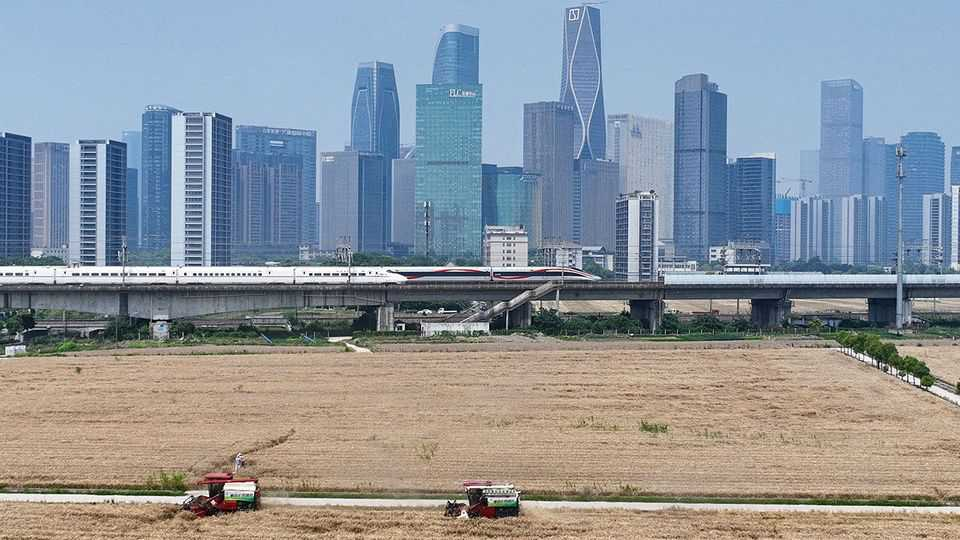
租金太他妈AI
科技公司正重振（部分）中国商业地产市场
4月下旬，杭州——中国AI之都的一家法院裁定，企业不得解雇员工并用人工智能替代。对于这座拥有阿里巴巴——中国科技巨头之一，员工总数达128,000人的大都市中的众多居民来说，这无疑是个好消息。这对杭州的商业租户而言同样利好，这些租户对AI代理几乎毫无用处，却迫切需要人类办公人员。中国令人惊叹的天际线却令人担忧地空荡无物。
自2021年房地产泡沫破裂以来，住宅和商业地产的销售、价格及投资均大幅下滑。危机期间，住房问题最受关注，据估计全国空置的公寓数量达9亿套。但过去十年的写字楼建设热潮也导致城市中遍布未完工或空置的办公楼，一些内陆城市的甲级写字楼空置率超过40%。例如，中部城市武汉可能有近200个足球场大小的优质写字楼空置。疫情前开发商投资的商业项目仍在陆续入市，进一步推高供应并拉低租金。杭州是受影响最严重的城市。■
政府对科技行业的整顿与房地产市场下滑几乎同时发生，导致阿里巴巴等企业大规模裁员（其创始人马云是政府重点打击对象）。深圳的科技巨头，包括腾讯，缩减规模引发震动。2022年第二季度，南方科技中心新租户数量锐减，办公面积同比骤降50%。两地高端写字楼空置率从2019年的20%攀升至峰值30%，深圳的高点甚至延续至2025年底。伦敦市中心同样奢华的办公空间去年末仍保持93%的出租率。中国房地产危机尚未触底，但人工智能热点地区的优质办公空间正逐步改善。■
3月中国AI企业的需求较前一年增长三倍，瑞银（UBS）分析师约翰·兰（John Lam）计算得出。这一增长源于基数较低——去年中国机器学习初创企业数量大幅减少。但鉴于这些企业的活动主要集中在杭州、深圳等少数城市，影响颇为显著。这些城市的甲级写字楼空置率已回落至约20%。2025年初，当DeepSeek推出能与美国顶尖AI相抗衡的产品时，内部人士曾开玩笑说该实验室或许能单枪匹马重振杭州房地产市场。但看来这属于夸大其词：阿里巴巴正重塑自身为AI巨头，已出手相助。据世邦魏理仕（Savills）分析师称，地方政府也已推出针对创新企业的租金补贴政策。■
科技公司预计将填补杭州西溪66（Westlake 66）项目中许多新办公空间，该项目是位于杭州市中心的办公与购物中心，于4月下旬开业。恒隆地产（Hang Lung Properties）的彭德里克（Derek Pang）指出，AI企业的快速扩张也推动了会计师、顾问、律师等企业相关机构对办公空间的需求。他补充称，政府已开始限制商业房地产供应，并减少用于开发的土地出售，这最终或将推高价格。短期内，杭州法院的一项裁决——该裁决使一名负责检查公司AI输出准确性的质量检查员的工作得以保留——可能有助于维持办公热潮。这是否能演变为更持久的热潮，将取决于AI最终能取代多少办公岗位。
林先生指出，三月份全国范围内AI企业需求激增的原因，是它们需要的是后台和客服人员，而非软件工程师。这正是AI代理被预期要淘汰的岗位类型。■ 了解更多关于经济学、金融和市场的深度分析，请订阅我们的周度专属通讯Money Talks。
§023 城市育儿成为一种财富展示 美国 《美国的孩子》原题：City parenting has become a financial flex · 板块：United States · 栏目：美国
不久前，芝加哥西北部的威克公园（Wicker Park）曾是美国最时尚的街区之一。夏季周末，那些发型奇特的年轻人挤满了夜店，复古商店以出售褪色的1980年代T恤而生意兴隆。几家波多黎各餐馆，作为昔日贫困社区的遗迹，与新开的咖啡馆并存，显得格格不入。如今漫步威克公园，感觉有些不同。它依然保持着高端化，甚至更为明显。复古商店仍在营业，但新来的群体明显更年轻。 ■
托儿所工作人员身着亮黄色背心，带领一群学龄前儿童在街头穿行。在606（芝加哥的公园）——一座沿废弃铁路线建成的公园里，几乎每个人都推着昂贵的婴儿车或骑着自行车带着孩子。周末时，几家精酿啤酒吧会涌入一群父亲。一家新私立学校最近开业，广告牌上宣传着一种新型儿童安全座椅。美国各大城市正迅速流失儿童人口。根据美国人口普查局数据，芝加哥地区2010年至2024年间，18岁以下人口总量下降了22%。洛杉矶下降23%，纽约下降12%。然而在国家最富裕、人口最密集的城市中，有一群人明显逆势增长：富裕的白人家庭。芝加哥非西班牙裔白人儿童人口从2010年到2024年增长了6%，增速高于整体白人人口增长。■
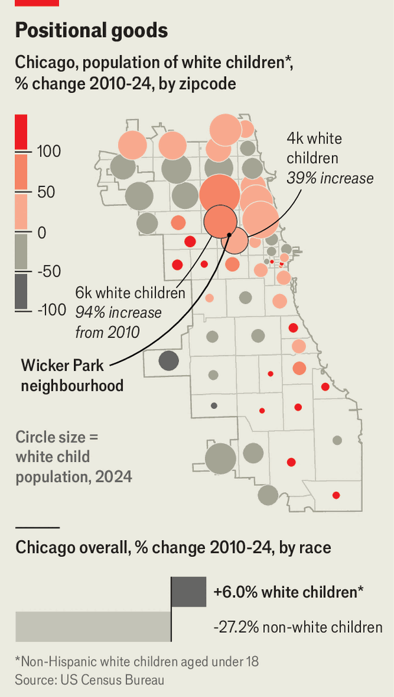
在华盛顿特区，白人儿童人口增长了62%，堪称惊人。他们的父母是成长于乏味郊区的专业人士，不愿让子女重复同样的生活。这种变化最显著地集中在内斯·桑多瓦尔（Ness Sandoval）所称的“赢家通吃”城市中心社区，如纽约、芝加哥或旧金山。典型例子包括布鲁克林的帕克·斯洛普（Park Slope）、洛杉矶的马尔维斯塔（Mar Vista）和旧金山的伯纳尔高地（Bernal Heights）。2010年至2024年间，布鲁克林区白人儿童人口增长13%，目前占比超过五分之二，较2010年的三分之一显著上升。在威克公园（Wicker Park）的两个邮编区域，白人儿童数量分别增长了39%和94%。种族并非收入的完美指标。但只需在街头走动，避开推着Uppababy婴儿车（899美元加税）的父母，他们抱着穿着Patagonia外套（99美元加税）的婴儿，便能清楚这些是富裕家庭。■
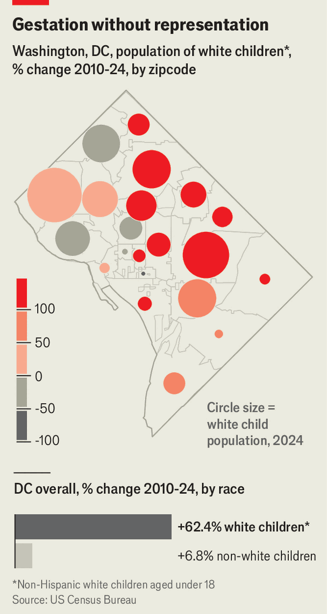
2010年，布鲁克林区收入低于1万美元的家庭数量超过收入超20万美元的家庭。到2024年，收入20万美元以上的家庭数量则以近两倍于前者的优势占据主导。旧金山私立学校入学人数从2010年到2024年增长了47%。这种变化背后的原因是什么？家庭并非主要迁入城市，而是人们在成为父母后更少选择迁往郊区。软件工程师埃里克·约翰逊（Eric Johnson）成长于芝加哥外郊埃尔金（Elgin），如今在时尚街区洛根广场（Logan Square）育有一个十个月大的婴儿。“我们喜欢农贸市场……我喜欢不需要开车。”他说。社会工作者莎拉·韦斯顿-希（Sara Weston-Shea）成长于新泽西州郊区，如今在布鲁克林区的拜里奇（Bay Ridge）育有两个孩子。“我们能轻松接触到城市拥有的优质资源，艺术、音乐，随时都能享受。”她说。■
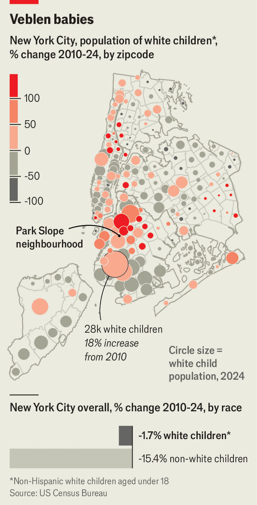
她喜欢自己的孩子在多元文化社区长大，还能用货运自行车载着他们四处奔波。弗吉尼亚大学人口学家哈密尔顿·兰伯德指出，这类家庭通常会晚些生育孩子。这意味着他们一旦开始生育，往往拥有更高的收入，从而能够负担得起在城市居住。对部分最富裕的家庭而言，能在城市养育孩子——尤其是多个孩子——已成为一种展示财富的方式，桑多瓦尔先生表示：“宣称‘我有足够的财力养育八个孩子并居住在城市’……这其实是在炫耀自己的财富。”从宏观层面看，这种城市人口结构的变化似乎并不具有颠覆性。富裕群体的增长规模尚不足以抵消工薪阶层人口的萎缩，也难以逆转学校入学人数的下降趋势。■
尽管移民减少，城市人口仍将在不久后开始下降。然而，理查德·弗洛里达（Richard Florida）这位知名城市研究理论家曾称的“创意阶层”不断壮大仍具重要意义。以政治为例，城市主义者倾向左翼。去年佐赫兰·马姆达尼（Zohran Mamdani）在富裕家庭占据的社区轻松获胜，却在城市外围地区失利。芝加哥市长布兰登·约翰逊（Brandon Johnson）则凭借白人自由派选民的支持赢得选举，这些选民在两轮选举的第一轮就投了他。纽约市过去曾选举共和党市长，如今这种可能性似乎微乎其微。他们也直接影响城市。理论上，这类人群热爱公立学校理念，实际上却偏好高门槛的公立学校，这些学校里充满与自己孩子相似的学生。这导致最热门学校出现激烈竞争。■
同样，富裕居民的增加往往意味着房价上涨。许多人认为，这正是非白人家庭离开城市的原因，尽管数据并未明确证实这一点：非白人儿童数量也在非 gentrified（再城市化）社区中持续减少。高昂的房价可能正在打击新一代年轻专业人士，他们无法搬入那些因居民迁往郊区而空置的房屋。城市高端化趋势是否会持续？疫情时期，城市吸引力下降，专业人士开始寻找绿地和居家办公空间。随着疫情缓解，暴力犯罪率飙升。但如今犯罪率已回落，居家办公的潮流也逐渐消退。更稳妥的判断是，城市中产化趋势仍将持续。不久之前，“市中心”还意味着绝望与贫困的代名词。
2016年，唐纳德·特朗普（Donald Trump）声称“城中城的居民正生活在地狱中，因为那里太危险了”。但这一说法已越来越站不住脚。如今，新的曙光正在降临。■ 关注美国政治动态，请订阅我们的每日简报《美国简报》（The US in brief），获取对最重要政治新闻的快速分析，以及每周专栏《制衡观察》（Checks and Balance），深入探讨美国民主现状及选民关切议题。
§024 民主党对AI的政策并非全禁 美国原题：The Democratic approach to AI is not all about bans · 板块：United States · 栏目：美国
在过去四十年里，拉姆·埃曼纽尔一直是民主党政坛的常青树，几乎在每次采访中，他都会回避是否计划在2028年竞选总统的问题。很少有人会问他对于这场竞选中可能最棘手的问题——人工智能（AI）——持什么立场。称他为党派中间派老派的支柱，他对AI的想法却十分前沿。“AI让我彻夜难眠，”他说。在我们的“内幕”节目采访中，埃曼纽尔呼吁采取高速监管AI的策略 ■
这与他所在党派的左翼派系——由佛蒙特州参议员伯尼·桑德斯（Bernie Sanders）领导——想要的形成对比，后者希望采取刹车措施。然而，与他左翼的同行一样，埃曼纽尔先生对为受技术影响的群体提供某种保障收入持开放态度。尽管他支持提供“一个人们不会跌落的底线”，但他担心保障收入可能会剥夺人们生活的意义。他并未具体说明如何恢复生活的意义。这位前大使、市长和白宫“解决问题的专家”（Mr Fix-it）对人工智能引发的广泛不平等问题感到担忧。“美国人民认为，将会有五位科技新贵像强盗一样撤离，让其他人陷入困境，”他说，“一方面，你不能把人工智能（AI）拱手让给中国。”■
另一方面，你不能让这里变成法外之地。”他同样担心人工智能带来的颠覆规模将超过铁路、电力和互联网等其他技术变革。桑德斯先生和民主党众议员亚历山德拉·奥卡西奥-科尔特斯表示，人工智能发展速度之快，国会难以跟上。他们提出立法提案，拟对用于训练和运行模型的数据中心建设实施临时禁令。埃曼纽尔先生则采取了不同的方法。鉴于人工智能发展速度之快，他建议成立一个跨党派监管工作组，就其安全性进行实时决策。他提到Mythos，这是Anthropic这家人工智能实验室推出的新模型，其软件能力可能带来令人震惊的网络安全风险。■
他的观点与特朗普政府有相似之处，后者在回应《神话》（Mythos）一书后，已开始从对AI的自由放任政策转向考虑如何监管最新模型的发布。这位曾是芭蕾舞者的童年舞者谈及AI管理者时总爱转圈。OpenAI的萨姆·奥尔特曼（Sam Altman）和xAI的埃隆·马斯克（Elon Musk）被他称为“互相泼脏水”，但他尊重他们的一些想法。他称赞奥尔特曼所谓的“新政”（New Deal），这是OpenAI提出的一项提案，其最激进的构想是建立一个类似主权财富基金的投资机制。该基金由AI行业资助，通过向技术生产者和使用者的投资回报分配，让每个人都能分享更快经济增长的收益。他也赞扬Anthropic的首席执行官达里奥·阿莫代伊（Dario Amodei）在与国防部就AI模型用于自主武器和大规模监控的争议中坚持立场。■
曼努埃尔·埃曼纽尔（Manuel Emanuel）曾先后在克林顿和奥巴马的白宫任职，他提出的国内政策议程属于典型的中间路线。他计划推动教育改革，反对关税政策，对自由贸易持谨慎态度，并希望进行税制改革以减少对继承财富的慷慨对待。他对党内左翼的再分配议程表示不屑。至于竞选总统，他仍保持谨慎态度。“我们拭目以待，”他说。但他的热情似乎正在上升。“我唯一确定的是，坦率、真诚和坚定将具有极高的价值。没人会说‘他软弱且政治正确’。” ■
掌握美国政治动态，敬请关注《经济学人》每日简报《美国简报》（The US in brief），该简报提供对最重要政治新闻的快速分析，以及每周简报《制衡》（Checks and Balance），深入探讨美国民主现状及选民关切的核心议题。■
§025 美国最高法院放任选区划分者原题：The Supreme Court has unleashed the gerrymanderers · 板块：United States · 栏目：美国
美国南部小州鲜少成为政治焦点。但本周田纳西州成为关注中心。4月29日，美国最高法院第三次打击投票权法案。在路易斯安那诉卡莱斯案中，以6比3的投票结果，大法官们裁定：只要制图者声称选区划分纯粹出于党派利益，就不能再以种族因素为由挑战选举地图——例如主张选区边界不公平稀释黑人选票。
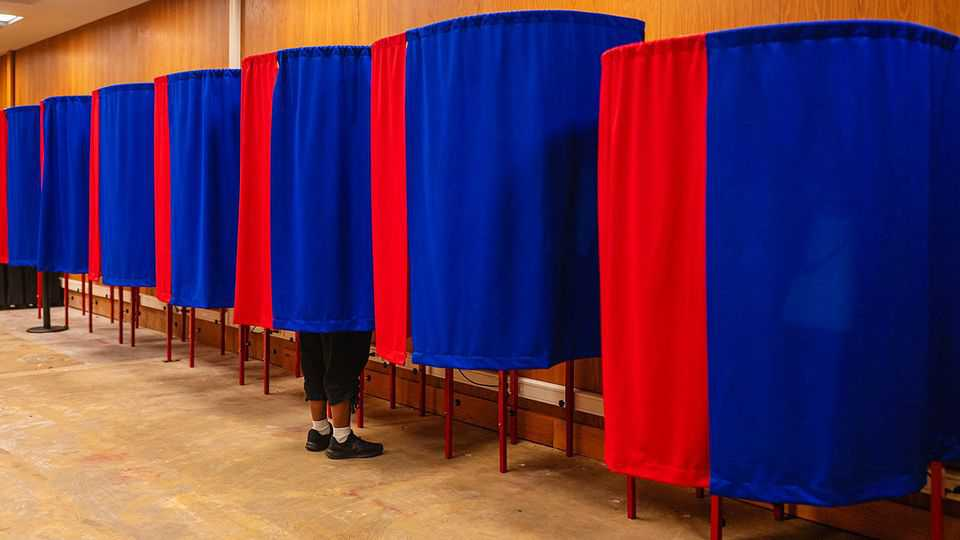
该决定引发了一场争夺战：5月6日，田纳西州政客公布了一张地图，将该州第二大城市孟菲斯分割进三个深红选区。田纳西州民主党负责人拉切尔·坎贝尔（Rachel Campbell）表示：“这不仅是政治上的丑闻，更是道德上的耻辱。马丁·路德·金在此为争取民权而牺牲。”此次裁决恰逢中期选举年选区重划的混乱时期。政治人物争夺选民的斗争始于得克萨斯州屈服于唐纳德·特朗普推动的选区重划，以增加五个共和党席位。民主党随后在加州采取报复行动，当地选民批准了新的选区划分，以抵消得克萨斯州的扩张。这场争夺旋即蔓延至密苏里州、北卡罗来纳州、俄亥俄州和弗吉尼亚州。自卡莱斯事件后，共和党人呼吁彻底废除南方所有民主党选区。■
路易斯安那州立法者正在开会通过一项选区划分方案，该方案将新奥尔良像孟菲斯一样分割。法院正在审议罗恩·德桑蒂斯签署的计划，该计划将使佛罗里达州28个席位中有24个归属共和党，而该州30%的选民是民主党人。《经济学人》的选举模型预测民主党将在众议院赢得超过20个席位，这意味着这些类似Callais的选区划分策略可能不足以让共和党在11月的选举中保住众议院多数席位。但未来更接近的选举结果可能取决于哪一方更愿意更肆无忌惮地操纵选区划分。要追平，民主党需要与共和党针锋相对。直到最近，他们仍保持谨慎。在他们控制的许多州，立法者受自我施加的约束——法律、宪法和道德层面的限制。■
科罗拉多、华盛顿和纽约的民主党三党执政局面受到独立委员会的限制，这些委员会阻止政客重新划分选区；新泽西州宪法规定选区重划仅每十年一次。改变这些规则通常需要选民批准，这在加州耗时数月的竞选活动才得以实现，在弗吉尼亚州则需要投入大量资金。对于一个曾将画界操纵斥为“作弊”和“反民主”的政党而言，民主党如今必须说服选民：当共和党采取低姿态时，他们也该如此应对。民主党还可能面临两难抉择。该党若想赢得更多可胜选席位，最直接的办法是将可靠的民主党黑人选民迁入白人比例更高的选区。■
去年，伊利诺伊州在全美政党敦促下试图从东部圣路易斯再划出一个民主党选区时，州议会的黑人议会党团予以抵制，担心黑人现任议员将失去席位。"这真是个两难局面，"战略顾问阿基拉·恩斯利说，"黑人选民是党的根基，而自由是在我父母辈的生活中才获得的。"卡莱斯真正的输家既不是哪个政党，而是民主制度本身。这种司法主导的选区重划热潮的危险不仅在于非裔美国人的话语权减少，更在于安全席位越多，全国民意的波动对选举结果的影响就越小——最终让与州多数选民意见不同的美国人陷入沉默。对两党而言，达成和解符合国家利益，但华盛顿目前缺乏足够的善意来实现这一目标。■
关注美国政治动态，订阅《美国简报》——我们的每日简报，提供对最重要政治新闻的快速分析，以及《权力制衡》——每周简报，分析美国民主现状及影响选民的议题。■
§026 “中西部温和派”难敌总统竞选的琐碎较量原题：“Midwest Nice” is no match for presidential petty · 板块：United States · 栏目：美国
“如果党内出现裂痕，你必须保持警惕。”印第安纳州共和党操盘手马蒂·奥布斯特（Marty Obst）如此说道。奥布斯特是总统的执行者，去年夏天他被指派推动通过印第安纳州共和党控制的州议会的选区划分地图。若该地图通过，将使该州国会代表团中民主党议员彻底消失。但与佛罗里达州、密苏里州、北卡罗来纳州、德克萨斯州以及最近的田纳西州不同，印第安纳州的共和党人拒绝配合。自然，特朗普选择了报复。
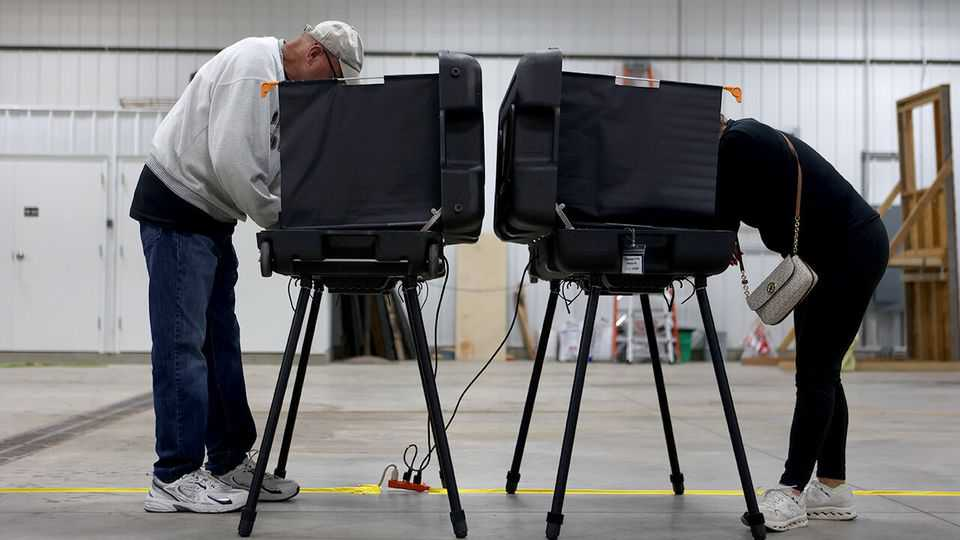
■
随后展开了一场不惜一切代价的打击行动，旨在惩罚七位投票反对地图方案的不知名共和党议员。在5月5日的初选中，至少有五人败给了总统支持的挑战者。尽管特朗普的民望可能已跌至谷底，但在MAGA核心群体中，他的背书仍具有决定性作用。印第安纳州的胜利只会进一步激发他对忠诚宣誓和党内清洗的渴望。特朗普下一步的目标包括路易斯安那州参议员比尔·卡西迪和肯塔基州众议员托马斯·马西，两人均将在本月晚些时候面对特朗普支持的对手。印第安纳州的特殊之处在于其议员的影响力有限。这些兼职议员年薪仅33,000美元，通过个人Gmail邮箱处理竞选事务。■
特朗普对此感到不满，甚至动用其竞选团队顾问克里斯·拉西维塔（Chris LaCivita），并牵涉到通常在联邦层面运作的保守派超级政治行动委员会“成长俱乐部”（Club for Growth）。特朗普的介入引发了激烈的竞争，广告支出总额达到1350万美元，远超过去几年的几十万美元。现任议员丹·德努尔（Dan Dernulc）在初选中失利，他一直高呼“特朗普、特朗普、特朗普”，但对华盛顿制定的选区划分方案感到不满，认为这种方案脱离了每十年一次的常规选区重划程序。“问题在于，我从未参与过这个计划的制定，”他说。印第安纳州的共和党人并非反对选区划分本身。事实上，他们精通这一领域：20年前民主党曾占据该州9个国会席位中的5个，如今仅剩2个席位，尽管其选票占比仅为38%。
印第安纳州科科莫的记者帕特里克·穆恩赛（Patrick Munsey）这样描述普遍的选区划分策略：“到了该动手的时候，我们会把选区划分得一塌糊涂。”看到同僚的下场后，印第安纳州立法者可能决定将行动时间提前至明年，而非2030年。当然，其他红州仍会继续推进，这得益于最高法院4月29日对《投票权法案》的裁决，该法案曾有效遏制选区划分。阿拉巴马州和南卡罗来纳州的共和党人希望在中期选举前消除民主党选区。路易斯安那州和田纳西州已率先采取行动。在最高法院引发最新一轮选区划分争夺战前，这场斗争看似陷入僵局。如今共和党可能占据上风。在印第安纳州，他们对总统的反对态度，成为制度派人士的胜利。
印第安纳州共和党县主席兰迪·尼默（Randy Niemeyer）表示，华盛顿的MAGA势力曾认为选区划分是稳操胜券的棋局。他告诉他们并非如此：印第安纳州虽是共和党人的天下，但并非意识形态极端者的天下。常识、公平竞争和独立精神至关重要。“印第安纳州是中西部的‘Nice’（亲和）之地。”他说道。最终，这种温和立场难敌总统选举中的琐碎算计。■ 请订阅《经济学人》每日简报《美国简报》（The US in brief），获取对美国政坛最重要新闻的快速分析，以及每周专栏《制衡》（Checks and Balance），深入探讨美国民主现状及选民关切议题。
§027 外国企业：您是否考虑过美国原题：Foreign firms: have you considered America? · 板块：United States · 栏目：美国
“美国在凯瑞全球外国直接投资信心指数中排名第一”，一块20英尺高的横幅悬挂在马里兰州国家港盖洛德会议中心波托马克宴会厅外。 “这是连续第14年！”另一块横幅宣称美国拥有最多的量子初创企业；第三块则强调美国拥有全球最高的风险资本投资水平。“这为创新提供了强大动力！”它补充道。这些横幅暗示了2026年SelectUSA投资峰会的奇特氛围。随后，商务部长霍华德·卢特尼克登台解释称，美国拥有庞大的消费市场和深厚的资本市场。■
在VIP席位上坐着来自布基纳法索和巴拿马的代表团。这一切引发的疑问比答案更多：商界人士，无论身处何地，难道不知道美国——全球最大的经济体——充满活力、创新力且资本充裕吗？他们是不是第一次在盖里尔德酒店了解到这些？为何美国要大张旗鼓地吸引外资，其中一部分对象是那些经济规模小于其州中五分之四的国家？这场会议在下方宽敞的展览大厅中才更有意义，那里49个州加上华盛顿特区，连同领地、城市和地方政府官员——许多人搭建的展位大得像房屋——正与外国商界人士互换名片。■
峰会的目的只有在稍微放大一点视角后才清晰可见：台积电这家台湾的半导体巨头，随时可以选择在美国华盛顿撮合交易。但那些希望将部分组装流程转移至本国以规避关税的印度中小型机器人制造商，可能不得不在美国各地奔波，才能弄清最佳设厂地点。在SelectUSA（美国投资促进机构）的框架下，他们可以几乎同时访问全美各州。但究竟该选择哪个州？许多州都提供零食作为吸引潜在投资者的诱饵。本 correspondent（记者）品尝了印第安纳州制造的软糖（高速公路通达性排名第一！）、阿拉斯加产的三文鱼肉干（距离90%工业化世界地区仅需九小时车程，利于运输！），并啜饮了肯塔基州的柑橘姜味苏打水Ale-8-One（航空货运按落地重量计排名第一！）。该峰会于2013年成立，旨在推动制造业回流。■
尽管有相关措施，主要外资流入占GDP的比例仍低于当时水平。■ 关注美国政治，请订阅我们的每日简报《The US in brief》，获取最新政治新闻的快速分析，以及每周简报《Checks and Balance》，深入探讨美国民主现状和选民关注的核心议题。
§028 年轻男性对特朗普逐渐失去兴趣原题：Young men are souring on Donald Trump · 板块：United States · 栏目：美国
美国
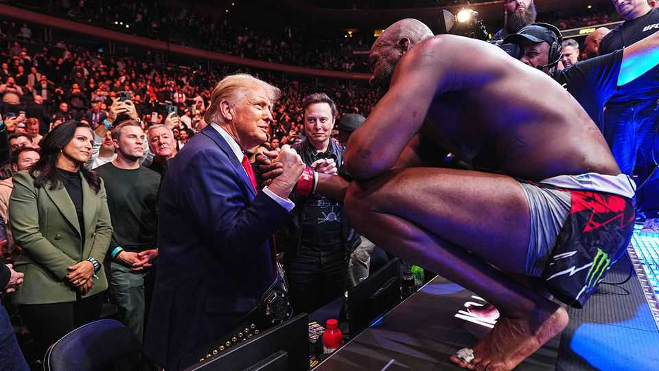
当谈到展现男子气概时，很少有政客能与唐纳德·特朗普（Donald Trump）相提并论。他有时会 swagger（意气风发）地走进拳击场，伴随着Kid Rock的《American Badass》；有时则会轻描淡写地化解第三次暗杀企图，仅表示“只有最具有影响力的总统才会吸引刺客”。选民长期以来认为共和党是“父亲党”（强调国防强硬、对犯罪严厉），而民主党则更像“母亲党”（关注弱势群体、对粗俗言论敏感）。被问及哪个政党更代表男性特质时，美国人几乎七倍更可能选择“共和党”而非“民主党”。
特朗普进一步强化了这种氛围，以夸张的男性气质吸引选民。他在社交媒体上塑造自己为强势、胜利者和幽默的越界者。他的政府账号发布的帖子将伊朗战争的真实画面与电子游戏画面混剪。在三次竞选中，特朗普始终赢得男性选票，并且当对手是女性时总能赢得整体选举。弗莱雷·迪金森大学的丹·卡西诺研究发现，2024年投票支持特朗普的男性表示自己感觉更加阳刚。然而，这种阳刚魅力似乎正在消退，尤其是在年轻男性群体中。2024年，18-29岁男性中有49%支持他，而最新哈佛/伊普调研显示，如今仅28%的年轻男性认可他。充满阳刚气息固然吸引人，但年轻男性也有实际诉求。他们往往希望找到工作、买房、吸引伴侣并组建家庭。■
这在支持特朗普的年轻男性身上尤为明显；在NBC民调中，他们将“养育子女”列为首要生活目标（而支持哈里斯的年轻女性则将其排在13个选项中的倒数第二位）。问题是，住房和家庭需要花费金钱。特朗普声称将通过终结通胀甚至让物价下跌来“让美国再次变得负担得起”。然而他的关税政策和伊朗战争却产生了相反的效果。“一切都很贵”，佐治亚州佛罗里达分支的21岁餐厅员工米格尔·马丁内斯抱怨道。“现在你连进杂货店都得花80美元。”米格尔同时打两份工，和父母同住。他想自己租房，但房价“离谱”。他看到网上关于上一代人“几乎不用花钱就能买房”的段子，这对他情绪毫无帮助。■
他曾在2024年投票支持特朗普，但到了11月的中期选举，他将不会为任何候选人拉票。对特朗普的不满并不意味着对民主党人的喜爱。相反，许多年轻男性感到民主党忽视了他们。多年以来，民主党对他们的信息听起来像是“嘿，未来不属于你们”，弗吉尼亚州民主党州议员乔什·托马斯（Josh Thomas）哀叹道。民主党似乎更热衷于谈论男性造成的问题，而非他们所面临的困境。“有些民主党人对竞选这类议题存在犹豫，因为他们不想显得像一个‘哥们儿’或‘大叔’”，一位弗吉尼亚州夏洛茨维尔的民主党学生说道。相比之下，共和党则“有能力大声说出许多年轻男性在私下会说的话”。《经济学人》/YouGov的一项民调显示，54%的美国人认为反男性偏见是民主党党内的问题。■
另一项民调显示，民主党人（26%）比共和党人（5%）更可能承认对男性整体持负面看法，差距达五倍。年轻男性已成为摇摆选民。在哈佛大学/独立调查机构（IOP）民调中，33%表示将在11月支持民主党，25%支持共和党，另有38%表示不确定或不投票。美国男孩与男性研究所（NGO）的理查德·里维斯指出，两党均未能打动这部分群体。共和党人似乎认为只存在一条有效人生路径：工作、结婚、生子。民主党人有时会轻视那些追求传统成年标志的年轻男性，称其为“只是想要传统妻子”的保守派。但里维斯表示：“我没有看到相关证据。”“大多数年轻男性并不想回到1950年代，他们也不期望成为家长权威。”■
但他们承认，父亲身份赋予了他们意义，他们希望被需要。”多位民主党人，包括一些有总统竞选野心的候选人，正明确地试图争取年轻男性群体的支持。这通常包括两个步骤。首先，承认男性群体面临的问题。“我们社会对年轻男性和男孩的关注明显缺失，这一点显而易见，”马里兰州长韦斯·摩尔说道。然后，尝试提供帮助。去年，加州州长加文·纽森启动了一项计划，旨在应对学校教育、心理健康和就业领域年轻男性的困境。十月，弗吉尼亚州推出了由托马斯先生推动的男孩和男性委员会计划。十二月，摩尔先生宣布推动帮助男孩在学校表现更好的举措。■
■一位身材魁梧的阿富汗战争退伍军人摩尔先生，大谈自己童年经历的危险性：“我是由一位移民单亲母亲抚养长大的，你知道吗？11岁的时候，我手腕上就戴着手铐。”（他因喷漆涂鸦被捕。）他主张男性榜样至关重要。“我的母亲是天使，但她无法教会我如何成为一个男人，”他说。因此他开始聘请更多男性教师，而目前这类教师数量严重不足。前芝加哥市长拉姆·伊曼纽尔（Rahm Emanuel）将男性沮丧情绪与高昂的住房成本联系起来。波士顿学院的加布里埃尔·彭罗斯（Gabrielle Penrose）认为他有道理。住房稀缺推高了“独立成本”，促使年轻男性（以及少数年轻女性）选择与父母同住，而非前往就业机会所在的地方。
彭罗斯发现，当地租金上涨10%会使非大学教育男性与父母同住的可能性增加约1.1个百分点，并与劳动力参与率下降0.5个百分点相关联。她估计，住房成本上升可能解释了自2000年以来非大学教育男性就业率下降的三分之一。住房成本高昂部分归因于繁琐的法规。在许多城市，大部分土地被规定只能用于单户住宅。也就是说，无法在这些土地上建造公寓楼。其他规定强制要求大后院、停车位等，这些都推高了成本。高盛银行（Goldman Sachs）估计，若全美各地的分区法规都像最宽松的四分之一城市那样，全国住房缺口的三分之二将不复存在。因此，住房去监管可能有助于打通通往成年的道路。■
它甚至可能赢得年轻男性选民的感激，因为相较于年轻女性，他们更倾向于将住房视为“紧迫危机”。然而，这一政策却常被年长选民所阻挠，他们比年轻人更倾向于投票。二月，一项允许在“近工作区住房”的法案通过了弗吉尼亚州议会，但最终在抵达州长办公桌前夭折。对于仍被困在父母地下室的年轻男性而言，至少还有丰富的男性娱乐活动可选。六月，特朗普将庆祝美国250周年和自己80岁生日，届时将在白宫草坪上举办笼中斗。■ 关注美国政治动态，请订阅我们的每日简报《美国简报》（The US in brief），获取最重要的政治新闻快速分析，以及每周专栏《制衡》（Checks and Balance），探讨美国民主现状及选民关切议题。
§029 最高法院已成为塑造个人品牌的绝佳场所原题：The Supreme Court has become a great place to build your brand · 板块：United States · 栏目：美国
正如克拉伦斯·托马斯大法官时常所做的那样，他最近再次引发了左翼的强烈抗议。上个月，他在庆祝《独立宣言》的演讲中称，进步主义是一种权力欲望的国际运动，其美国形式根植于伍德罗·威尔逊（民主党）的种族主义与精英主义，不仅导致了美国的种种弊端，还催生了斯大林、希特勒、墨索里尼和毛泽东的极端行为。
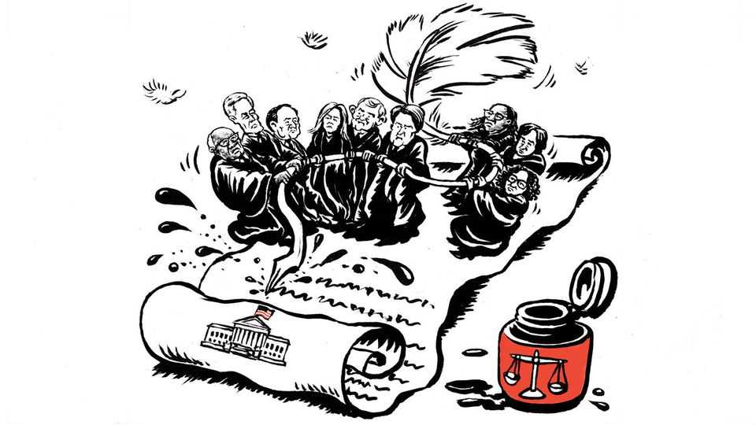
他的批评者对他在简要历史叙述中的省略和混乱感到愤怒，尽管他在进步派影响方面的论述在思想上较为保守的右翼阵营中显得相当常规。托马斯大法官对左翼的看法则更以末世论色彩著称。他表示：“进步主义试图取代《独立宣言》的基本前提，进而颠覆我们的政体。”这场演讲也揭示了他对右翼阵营重大弱点的理解。托马斯大法官指出，人们常常带着对“宪法原意”的关切来到华盛顿，但因害怕批评而学会权宜行事。“他们将自己重新定义为制度主义者、实用主义者或深思熟虑的中间派，以此为自己的失败向自身、良知和国家寻求正当性。” ■
汤姆·布雷耶是否在暗讽那些更注重制度的保守派大法官？他与另外两位保守派大法官萨缪尔·阿利托和尼尔·戈萨奇此前曾暗示，他们的保守派同僚缺乏勇气。尽管共和党总统任命了九位大法官中的六位，但一些观察者开始将法官们分为三组。首席大法官约翰·罗伯茨与布雷特·卡瓦诺、艾米·康妮·巴雷特两位大法官相较其他保守派更尊重先例，也更倾向于支持能获得更多支持的狭窄裁决。这三位大法官多数情况下投票支持多数意见。在三位自由派大法官中，埃琳娜·卡根法官显然是最注重制度的，她最倾向于参与某些裁决并坚持先例。■
卡瓦诺大法官去年在与金斯伯格大法官意见一致的次数上，超过了与戈萨奇大法官的次数，尽管这两位大法官不仅都是特朗普任命的，还在华盛顿郊区的同一所天主教高中有相同的高中历史老师，据《最后一支立柱》（Last Branch Standing）一书作者莎拉·伊格尔（Sarah Isgur）所述。伊格尔写道，与其他两位自由派大法官索尼亚·索托马约尔（Sonia Sotomayor）和凯坦吉·布朗·杰克逊（Ketanji Brown Jackson）一样，这三位保守派大法官更关注自身法律哲学，而非法院的共识或一致性。表面上看，制度主义者似乎仍占据主导地位：该法院推翻先例的频率低于前两位首席大法官任内，同时达成一致裁决的比例与以往相当。
5月7日，托马斯大法官成为历史上第二位任期最长的法官，近35年任期让他或许能感到欣慰，因为法院在意识形态和程序上正朝着他的立场倾斜。他的“原旨主义”立场已成为法院司法实践的核心，一些他长期主张的观点也逐渐被纳入法律解释框架。而坚持制度主义的法官则处于少数。法院推翻先例的案例减少，一方面是因为处理的案件数量大幅下降，另一方面则是通过转变先例而非直接推翻的方式实现。与此同时，法院创下了异议意见和附议意见的数量纪录，这些由支持多数意见的法官撰写的文本，往往出于对自身立场的强调。换句话说，这届法院在历史上首次呈现出如此分裂的集体声音。■
大法官们仍遵循旨在培养团队精神的仪式，例如在口头辩论后共进晚餐时不谈论工作。但法院正逐渐演变为一群独狼。知名法律播客《Advisory Opinions》主持人伊格尔女士是联邦党人协会的成员，地位之高以至于大法官卡瓦诺曾主持她的婚礼。她将法院制度凝聚力下降主要归因于确认大法官时取消了参议院的阻挠议事程序。如今有志成为大法官的人不再在意与对立党派的信誉，而是争相在忠诚者中证明自己最为纯粹。这种影响甚至波及到有抱负的法学院学生。伊格尔女士称这种后果令人震惊，警告法院可能变得像国会，"意识形态极端分子被提拔，使双方立场进一步向极端倾斜"。■
其他激励因素促使法官们追求并推广自己的法律理念。或许因为，年收入约30万美元的法官们，相较于在他们面前出庭的百万富翁律师而言，感觉薪酬偏低，一些法官如今通过自己的著作赚取数百万美元。这进一步激发了打造个人品牌的兴趣。尽管法院在性别和种族方面变得更加多元化，但在学术和职业背景上却高度同质化。现任法官中无人曾担任公职，但八位曾担任联邦巡回法院法官，八位毕业于常春藤盟校法学院，六位曾担任最高法院书记官。■
相比之下，1954年裁定布朗诉教育委员会案（Brown v Board of Education）的最高法院中，有五位法官曾担任公职，仅有一位没有法律学位——这或许是一个更倾向于在抽象法律原则与美国现实生活之间寻求平衡的群体。历史上最推崇的法官角色，是那种秉持原则、独行其是的孤胆英雄。每位新任大法官都会签署一本由约翰·马歇尔·哈兰（Justice John Marshall Harlan）捐赠的圣经，这位1896年普莱西诉弗格森案（Plessy v Ferguson）中唯一持反对意见的大法官，当年曾为针对非裔美国人的歧视行为提供法律依据。直到布朗案，多数意见才认可他的立场。也许这届法院中某位独行者终将赢得类似的荣誉。但公众对法院的信任正在消退，美国人或许可以理解为何在已由热衷于自我宣传与舆论主导的两大政府分支造成困扰的当下，对司法部门的不满情绪更显突出。■
《经济学人》的订阅者可注册订阅我们的Opinion电子简报，该简报汇集了我们最优秀的社论、专栏文章、特稿和读者来信。■
§030 胡里奥·米莱陷入严重困境原题：Javier Milei is in serious trouble · 板块：Americas · 栏目：美洲
"你知道在这场经济中谁真正受到最严重打击吗？"阿根廷总统胡里奥·米莱在最近一场奢华活动中如此宣称。"我的薪资自上任以来从未改变，"他说道，同时辩称自己的削减措施主要针对政治阶层。"我是美洲地区收入最低的总统。"这一言论恐怕难以打动挣扎求生的阿根廷民众。事实上，米莱的净支持率近期已大幅下滑。目前支持率接近-30，自2023年12月上任以来最差（见图表）。米莱的政党在去年10月的立法中期选举中获胜。■
他的激进减支和自由化议程获得国会通过多项改革，但选民如今有两个主要不满：腐败丑闻和疲软经济。上任前两年其政策将月通胀率降至1.5%，约为此前水平的十分之一，但此后通胀率又开始回升。经济在2月大幅收缩。米莱（Milei）直到2027年10月才面临连任，能源繁荣可能助其一臂之力，但他必须尽快控制局面。首先应处理腐败丑闻。去年2月，米莱在社交媒体上公开支持加密货币LIBRA，导致其价值一度飙升后迅速暴跌，使许多持有者损失2.5亿美元，唯有少数在高位抛售的大投资者除外。米莱随即表示他“显然”与LIBRA项目毫无关联。■
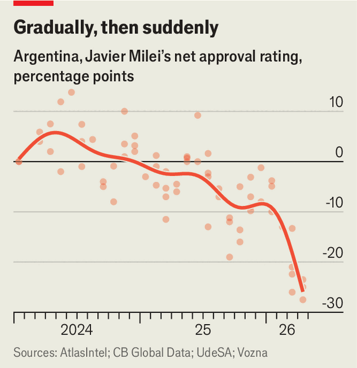
联邦调查人员近日获得的电话记录显示，米莱（Milei）发布相关推文的当晚，他与该事件背后的一位商人之间有七次通话。调查人员在其中一位加密货币商人的手机中发现了草拟的文件，内容涉及其与米莱之间潜在的财务协议。文件明确指出有三笔总计500万美元的款项，其中包括一笔用于公开任命其中一位企业家为顾问的费用。尚不清楚这些款项的接收方是谁；目前没有证据表明米莱同意或收到了这些款项。检察官将他列为案件的关键人物，但尚未对他提起指控。所有涉案人员均否认有任何不当行为。阿根廷民众对涉及米莱首席幕僚曼努埃尔·阿多尔尼（Manuel Adorni）的丑闻更为不满。■
美国联邦检察官正就其涉嫌非法致富展开调查，因媒体报道其存在奢侈旅行行为，包括用现金支付的阿鲁巴之行，尽管其公共薪资微薄。检察官还调查其家人乘私人飞机前往乌拉圭度假，以及以异常低价购买公寓的利息豁免贷款。阿多尔尼否认不当行为，米莱支持他并抨击媒体。四月四天内，他发布86条社交媒体帖子攻击媒体，并转发874条相关内容。■
他经常重复美国右翼人士的一句口号：“我们对记者的憎恨还不够。”4月中旬，他的政府在几名记者涉嫌未经许可拍摄后，封锁了总统府玫瑰宫（Casa Rosada）的入口。（记者称他们已通知了相关当局。）他称媒体为“肮脏的渣滓”，并转发了一张由AI生成的记者身着囚服的图片。5月4日，记者被允许重返玫瑰宫，但需遵守更严格的规则。如果经济状况良好，阿根廷人或许会忽视腐败指控，但目前经济状况不佳。官方数据显示，2月GDP环比（较1月）下降2.6%，为2023年以来最大跌幅。制造业和零售业活动骤降，导致税收收入缩水，威胁着米莱（Milei）引以为傲的财政盈余。■
政府因财政紧张，正在延迟向部分公共机构供应商支付款项。石油、矿业和农业仍保持繁荣。米莱表示，这些行业与科技领域共同构成经济的未来。然而，这些行业所需劳动力较少，合计仅占就业人口的12%。制造业、零售业以及建筑业则更依赖劳动力，对GDP贡献更大。这些行业萎缩已导致米莱上任以来数以十万计的薪资岗位流失。调查显示，低工资和失业如今是阿根廷人最担忧的问题。而米莱的政策迄今使这些问题进一步恶化。他已削弱行业保护，使本地制造业面临外国竞争。此举或许明智，但转型过程带来阵痛。他优先控制通胀而非推动增长。■
这意味着货币供应量趋紧、利率居高不下，这对企业造成打击。以比索计的私营部门贷款自8月以来一直停滞不前。米莱（Milei）政府在对抗通胀的斗争中也依赖强势比索。目前比索在宽幅区间内浮动，且本年度大部分时间都在升值。这在一定程度上是因为高利率吸引了资金流入比索。增产的石油和快速增长的出口意味着，由伊朗战争引发的价格飙升也进一步支撑了货币。但强势比索正在打击制造业，使竞争对手进口产品变得更便宜。它同样打击了建筑业。开发商以比索支付工人工资，却以美元出售房产，因此强势比索压缩了他们的利润空间。建筑业仍深陷低迷。最糟糕的是，即便高利率和强势比索近期仍未成功遏制通胀。■
月度通胀率已连续十个月攀升，3月达到3.4%，同比涨幅达33%。部分原因在于政府缺乏明确且可预测的货币政策来控制通胀。米莱政府削减能源补贴的举措也未能奏效，3月油价冲击进一步削弱了这一努力。牛肉作为阿根廷民众的最爱，价格因全球供应紧张而大幅上涨。阿根廷咨询机构Invecq的圣地亚哥·布拉特认为，部分通胀压力将很快缓解，通胀可能略有下降，但其他价格压力可能进一步上升。政府似乎终于开始将增长置于优先位置，允许利率下降。风险在于比索可能贬值，通胀仍居高不下。米莱的公信力正在流失。3月他声称8月月度通胀率将低于1%，但这一目标几乎不可能实现。并非全然悲观。
增长可能即将改善：分析人士仍预计今年增速将超过3%。主要希望寄托在蓬勃发展的石油开采以及国际资本对天然气和采矿业的投资上。这些领域的扩张将进一步提升出口。政府也在积累美元储备，以解决长期存在的薄弱环节。但其大部分美元储备正用于偿还债务。为满足明年到期的外债滚动融资需求，同时积累储备，政府正寻求以美元融资。为此，政府正与商业银行协商一项20亿美元贷款协议，该协议由世界银行担保。明年总统大选将成为压倒一切的焦点。博弈 stakes 非常之高。对米莱（Milei）而言，好消息是尽管其支持率下降，但竞争对手的支持率尚未明显上升。阿根廷脆弱的平衡局面是最大挑战。■
民粹派的经济管理不善记录十分明显；随着选举临近，米莱的糟糕民调可能引发市场恐慌。由此引发的动荡可能进一步恶化民调，进而触发恶性循环。投资者已要求更高的溢价以持有阿根廷债券，而这一溢价将延续至米莱任期结束后。为避免陷入恶性循环，他必须确保以压倒性优势胜选。增长、就业和通胀回落将大有裨益。他已无暇等待。■ 注册订阅我们的独家简报El Boletín，深入了解塑造这一复杂地区的各种力量。
§031 委内瑞拉百年领土争端再提国际法庭原题：Venezuela’s 100-year territorial dispute is back in court · 板块：Americas · 栏目：美洲
，海牙国际法院（ICJ）就持续逾百年的领土争端展开听证会。委内瑞拉声称圭亚那东部边境的埃塞奎博地区——面积达16万平方公里的热带雨林及村落，占邻国圭亚那国土面积的三分之二——属于本国。圭亚那则认为该主张毫无依据，并指出埃塞奎博地区约14万人口从未表达过加入委内瑞拉的意愿。这场争端可追溯至19世纪。
英国曾是英属圭亚那的殖民管理者，而新独立的委内瑞拉对埃塞奎博河以西的未开发土地提出相互冲突的主权要求。1899年，由两名美国、两名英国和一名俄罗斯法官组成的五人仲裁庭裁定当前边界，双方均作出让步。此后数十年，委内瑞拉接受这一裁决。直到1962年，圭亚那即将独立之际，委内瑞拉才提出异议，称仲裁庭存在偏袒，最终裁决是“任意的”。1966年双方曾达成寻求和解的协议，但至今未果。自2015年圭亚那海岸发现大量石油储量后，争端愈发紧迫。石油开发使圭亚那成为全球增长最快的经济体。2018年，圭亚那请求国际法院（ICJ）作出最终且具有约束力的裁决。■
委内瑞拉表示，尽管法院曾于2018年和2023年两次裁定其拥有管辖权，但该国仍声称法院无权管辖。委内瑞拉派遣外长伊万·吉尔（Yván Gil）出席新听证会，但他本人表示，此行只是为了“向世界揭示真相”。5月4日，圭亚那律师向法院指出，委内瑞拉的诉讼建立在“戏剧与虚构”之上。他强调，撤销这项百年仲裁裁决将为全球边境安全树立危险先例。埃塞奎博地区是委内瑞拉民众几乎全部认同的议题。从孩童时期起，他们便被教导这片土地本就属于本国。■
他们并未被告知如今讲英语的埃塞奎博地区实际情形。“政治人物和教师们流传着一种叙事，称伟大的委内瑞拉、英勇的委内瑞拉被窃取了，”纽约玛丽蒙特曼哈顿学院拉丁美洲研究教授亚历山德拉·帕纳雷利表示。“你从小就被灌输这种观念，认为这片领土属于委内瑞拉，最终国际正义终将对此采取行动。”2023年，尼古拉斯·马杜罗政权通过举行公投将委内瑞拉对埃塞奎博的主权声索推向高潮，称公投结果压倒性支持吞并（埃塞奎博当地居民未被咨询）。随后，该政权宣布成立新国家“埃塞奎博圭亚那”，并下令在全国范围内展示包含该地区的全新地图。■
委内瑞拉去年在备受争议的地区选举中选出了一位州长，仅靠21,000名选民的支持。国际法院（ICJ）的裁决可能在数月内公布。理论上该裁决具有最终效力，但实际中，总统唐纳德·特朗普（Donald Trump）声称“掌控”的委内瑞拉很可能会无视这一裁决。执行该裁决的权力属于联合国安理会；但安理会从未成功执行过如此争议性的ICJ裁决。■ 注册《El Boletín》订阅服务，了解塑造拉美这一复杂地区的各种力量。
§032 Claudia Sheinbaum is in a bind, with her party accused of corruption原题：Claudia Sheinbaum is in a bind, with her party accused of corruption · 板块：Americas · 栏目：美洲
克劳迪娅·希内姆改善墨西哥安全的努力长期存在一个明显弱点：她不愿追查其执政党“国家复兴运动党”（Morena）的高层官员，这些官员可能与毒贩勾结。如今美国迫使她做出选择，这一决定将影响她的总统任期及与墨西哥北方邻国的关系。
4月29日，美国司法部发布起诉书，指控十名与Morena党有关的官员（Morena）共谋，其中三人是政客，涉嫌与锡那罗亚贩毒集团合谋向美国走私毒品。被起诉的Morena政客包括锡那罗亚州长鲁本·罗查·莫亚（Rubén Rocha Moya），他已辞去州长职务。起诉书指控这些官员多年与毒贩勾结，包括收受贿赂和选举支持以换取免受惩罚。唐纳德·特朗普（Donald Trump）一直在敦促墨西哥政府更积极打击国内犯罪集团，指出政界与毒贩存在“不可容忍的联系”。对这些指控，外界并不感到意外。关于罗查·莫亚的可信指控已流传多年。有报道称，锡那罗亚贩毒集团曾帮助他于2021年当选州长，竞争对手遭绑架威胁，选票箱被偷。罗查·莫亚及多名涉案人员均否认相关指控。■
墨西哥政坛的腐败现象令人遗憾，反对党公民运动党参议员路易斯·多纳多·科尔西奥·里奥斯（Luis Donaldo Colosio Riojas）表示，“但执政党将腐败推向了另一个层面。” 墨西哥中部城市萨尔曼卡（Salamanca）的更多纳（Morena）市长塞萨尔·普里埃托（César Prieto）称，腐败存在于所有政党，包括自己的政党，但墨西哥人应放心，正义终将得到伸张。帮派的成功是问题的一部分。随着他们变得越来越富有、装备更精良，他们更容易诱使或迫使官员与他们合作。但更多纳（Morena）党使腐败变得更加容易。安德烈斯·曼努埃尔·洛佩斯·奥布拉多（Andrés Manuel López Obrador）在谢因鲍姆（Sheinbaum）之前担任总统时，对犯罪采取放任态度，同时削弱或取消了许多曾制约权力的监督机制，包括推动选举产生司法系统。罗查·莫亚（Rocha Moya）只是多名被怀疑与帮派有牵连的更多纳（Morena）高层之一。
接近希内姆的人认为，她已采取行动：逮捕地方官员、将帮派分子引渡至美国并摧毁制毒实验室。他们还表示，美国人低估了她的制约因素。莫雷纳党是一个松散联盟，仍深受洛佩斯·奥布拉多尔影响，其盟友包括被指控与有组织犯罪有关联的州长们。打击这些人可能动摇该党的根基。她的批评者认为谨慎是不作为的借口。莫雷纳党本不必像现在这样热烈支持罗查·莫亚。一些人怀疑该党担心若严肃对待腐败问题，可能引发连锁反应。“这将引发连锁反应，最终波及权力最高层，”反对党革命制度党在锡那罗亚州议会的议员帕奥拉·加拉特预测道。■
起诉书可能为谢因鲍姆（Claudia Sheinbaum）提供机会，挑战此前难以触及的高层人物。美国联邦调查局（FBI）于2024年逮捕了锡那罗亚贩毒集团（Sinaloa Cartel）的高层成员，包括共同创始人伊斯梅尔·“埃尔·马约”·赞巴达（Ismael “El Mayo” Zambada），这被认为为检察官提供了大量腐败证据。但谢因鲍姆政府表示，目前尚未发现支持近期指控的任何证据。起诉或引渡罗查·莫亚（Rocha Moya）可能引发党内反弹，但释放他可能恶化与美国的关系。风险重重。美国、墨西哥和加拿大必须尽快决定是否在2036年当前协议到期后继续延长自由贸易协定（free-trade accord）。美国可能对墨西哥官员提起更多诉讼。特朗普甚至考虑对墨西哥贩毒集团采取单边军事行动。■
截至目前，希内布姆女士（Sheinbaum）已回应质疑指控并指责美国践踏墨西哥主权。但部分人怀疑她可能已暗中迫使罗查·莫亚（Rocha Moya）辞职。美国的介入使她更难应对舆论压力。多数墨西哥民众支持打击腐败官员，但反感美国的干涉。墨西哥长期容忍腐败现象，墨西哥技术大学（Tecnológico de Monterrey）的奥利维耶·梅萨（Oliver Meza）表示，只有当民众意识到腐败带来的代价时，变革才会发生。2012年至2018年恩里克·佩尼亚·涅托（Enrique Peña Nieto）担任总统期间，随着公众对明显腐败行为的愤怒上升，数名州长被监禁。2018年，民粹党（Morena）上台承诺根除腐败。此次索诺拉州（Sinaloense）的动荡或成为变革的推动力。该州暴力事件持续激增，数月内已有多人遇害或失踪。
如果选民开始将自身的不安全感与政治勾结联系起来，她将被迫采取行动。■ 注册订阅我们的独家通讯社El Boletín，以了解塑造这一迷人而复杂地区的各种力量。
§033 Despite Donald Trump’s talk, a lasting peace is some way off原题：Despite Donald Trump’s talk, a lasting peace is some way off · 板块：Middle East & Africa · 栏目：中东与非洲
经历了戏剧性的一周后，海湾战争是否再次陷入僵局？唐纳德·特朗普高调宣布了一项引导商船通过堵塞的霍尔木兹海峡的计划，但仅两天后便叫停了该计划。伊朗打破停火协议，袭击了阿拉伯联合酋长国（UAE），而美国却将此次袭击视为无关紧要。如今，特朗普再次炒作即将出现的外交突破前景。这个短暂的“自由计划”（Project Freedom）正是出于他的挫败感而诞生。
美国宣布对伊朗港口实施封锁已逾三周，掐断其石油出口。但伊朗的处境远未达到特朗普预期的灾难性后果。例如，特朗普（Trump）于4月26日曾预测伊朗的堵塞油设施将在三日内“爆炸”，但这一期限，如同许多其他承诺一样，终究没有到来。封锁确实对伊朗造成打击，该国已不得不削减石油产量，并将废弃油轮改作浮动储油设施。其经济已陷入混乱。但美国并未实现迫使伊朗做出重大让步的目标。因此，美国继续在霍尔木兹海峡（Hormuz）采取行动。5月4日，美国军舰成功护送两艘美国籍船只通过霍尔木兹海峡。但这项行动本就不大可能帮助那些仍被困在海峡中的数百艘船只。■
货船运输仍视穿越霍尔木兹海峡为不可容忍的风险——尤其在本周伊朗袭击事件后，袭击了阿联酋国家石油公司所属油轮和一艘韩国船只。此次袭击虽未改变局势，却为伊朗提供了重新对邻国发动攻击的借口。5月4日，伊朗向阿联酋发射至少19枚导弹和无人机，这是自4月8日停火协议签署后首次此类袭击。无人机袭击导致富查伊拉油港起火，该港口是阿联酋在波斯湾以外唯一的大型港口，也是其战时原油出口的唯一通道。阿联酋方面显然愤怒不已，海湾多国官员普遍认为美国将采取报复行动。然而美国却淡化了此次袭击。特朗普很快表示，他将暂停“自由行动”计划，据称是应巴基斯坦要求，而巴基斯坦正作为美伊之间的调解人。■
总统称在结束战争的协议上取得"重大进展"。这几乎可以肯定是个夸大。最乐观的情况是，双方似乎正在接近一个初步框架，为后续谈判做准备。他们将在30天期限内解除霍尔木兹海峡的封锁，以此作为谈判伊朗核计划、制裁缓解要求及其他议题的平台。然而这些谈判未必成功，对失败和进一步战争的担忧可能继续阻碍石油、天然气和其他商品的流通。许多海湾观察家注意到，伊朗本周的袭击特别针对阿联酋；在这场战争初期，伊朗曾攻击海湾合作委员会（GCC）所有六个成员国。伊朗可能有两个动机：将阿联酋视为以色列的代理人，以及加深与邻国的分歧，尤其是沙特。■
阿联酋于2020年与以色列建立正式外交关系，成为首个在亚伯拉罕协议框架下与以色列建交的阿拉伯国家之一。这一举措是海湾阿拉伯国家合作委员会（GCC）由沙特主导的外交政策独立化努力的一部分。尽管其他海湾国家均与以色列保持秘密关系，但只有巴林和阿联酋加入了该协议。自2023年10月起，以色列在加沙地带的毁灭性军事行动使阿拉伯政权难以公开这些关系。阿联酋是唯一一个公开强化其联盟关系的国家。在2月28日战争爆发前，阿联酋已部署了以色列的导弹防御系统。当伊朗导弹和无人机开始袭击后，以色列迅速派遣由以色列人操作的铁穹防空系统，以及先进的传感器和激光系统（其中部分仍为原型），以加强阿联酋的防御。■
一位以色列防务官员称当前合作水平“前所未有”。两国关系远不止防务领域。近年来，阿联酋（UAE）已启动一系列双边经济“合作协定”。首份与印度签署，第二份则与以色列达成。两国拥有相似的战略认知。随着伊朗代理人网络及附庸国体系的削弱，他们担忧土耳其主导的新轴心将增强地区影响力，特别是在伊拉克、黎巴嫩和叙利亚——这些地区此前由伊朗主导。一名曾派驻海湾的以色列外交官表示：“阿联酋已做出战略选择。从他们角度看，以色列不仅是安全计划的一部分，也涉及经济与外交层面。”与此同时，阿联酋正逐步疏远沙特阿拉伯。■
他们于5月1日决定退出石油输出国组织（OPEC）的部分原因在于商业考量：他们希望开采的石油量远超该组织允许的配额。但经过数月在苏丹、也门等国的外交政策问题上的激烈争执，这一决定被广泛视为对沙特的反击。阿联酋一些官方背景的评论人士也提到要放弃海湾合作委员会（GCC）和阿拉伯联盟（Arab League）。后者纯属象征性举动，因为阿拉伯联盟只是一个毫无成效的空谈机构。退出海湾合作委员会的影响会更大：该组织提供商品和人员自由流动。即便理事会仍保持完整，沙特与阿联酋的分裂已使该组织陷入政治瘫痪。对伊朗而言，这一切或许正是一次值得利用的裂痕。沙特曾积极支持特朗普继续战争，但自停火协议达成后，他们已转向鸽派立场。
鉴于伊朗可能进一步袭击其油田（甚至更糟），他们敦促美国不要重启军事行动，即便他们担忧美伊可能达成何种外交协议。伊朗将袭击目标锁定在阿联酋，这在阿联酋寻求报复与沙特希望保持平静之间制造了紧张局势。如果美伊能达成初步共识，这种紧张局势可能缓解。然而，战争已持续逾两个月，持久和平仍遥不可及。■ 注册中东简报（Middle East Dispatch），每周获取关于这个复杂且影响深远地区的深度分析。
§034 外交还是更多战争原题：Diplomacy or more war? Iran’s leaders are split · 板块：Middle East & Africa · 栏目：中东与非洲
中东及非洲 | 无路可退 外交还是更多战争？伊朗领导人意见分裂 一些人确信对话毫无意义 据白宫泄露的消息，美国再次接近结束与伊朗战争的协议。唐纳德·特朗普（特朗普）称双方进行了“非常积极的24小时会谈”。伊朗表示美国的提案“正在考虑中”。但对伊朗领导人而言，行动胜于言辞。在海湾地区，美国袭击了一艘试图突破霍尔木兹海峡封锁的伊朗油轮；以色列袭击了贝鲁特。与此同时，伊朗宣布成立新的“波斯湾海峡管理局”，要求以本国货币里亚尔支付安全通行费用。相较于核计划，伊朗对海峡的主张更可能破坏任何协议，并重燃战火。 ■
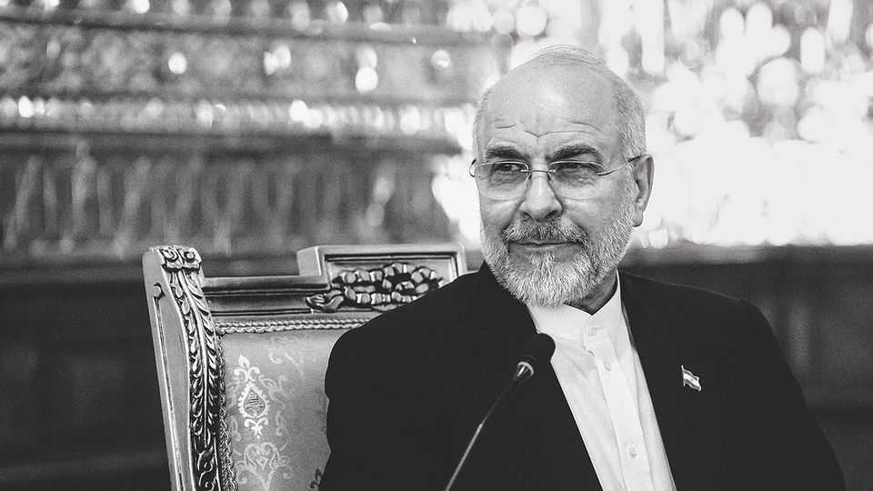
伊朗领导人蜷缩在各自的掩体内，既为升级局势做准备，也未放弃外交斡旋。宗教领袖们对伊斯兰革命卫队（IRGC）将领的约束在战争首日随着以色列击毙最高领袖阿里·哈梅内伊而彻底瓦解。其子、接班人莫塔巴·哈梅内伊则踪影全无。名义上的权威归属由12人组成的国家安全委员会（NSC），其中包含一群将领。实际上，这些将领——皆为伊朗八年的伊拉克战争老兵——占据主导地位。“这是一场软性革命”，一位研究伊朗的专家如此评价。停火协议签署后，务实派一度占据上风。最引人注目的是前IRGC指挥官、现任议会议长穆罕默德·巴盖尔·加利巴夫，他作为首席谈判代表飞往伊斯兰堡。
他代表了一代在伊朗大型企业中扎根、与寡头阶层密切交往、并致力于维护伊朗工业基础的老兵。作为德黑兰市长，他进行的房地产交易比特朗普还要多，一位伊朗商人如此夸耀。这使他获得了贪财和腐败的名声。卡利巴夫仍对商界人士呼吁避免局势升级表示同情。轰炸摧毁了制药、钢铁和石化工厂，并让许多工人失业。海军封锁进一步加剧了损害。里亚尔自去年夏天战争以来贬值超过一半。随着物资储备日益枯竭，基本生活用品价格飙升。经济学家预计商品通胀将蔓延至服务领域。卡利巴夫更希望绕开封锁，同时维持停火协议。■
他同时与伊朗革命卫队和商业界保持联系，因此能够接触到边境的走私网络。自海湾关闭以来，正式的陆路贸易大幅增长。早已是重要贸易伙伴的伊拉克和土耳其，如今变得更加关键。通过陆路重新规划了与中国（伊朗最大市场）的贸易路线。巴基斯坦已开放六个新渡口；商人们将巴基斯坦的瓜达尔港视为杰贝阿里港（阿联酋）的替代选择。伊朗正尝试通过铁路将部分石油运往中国。小型船只穿梭于里海，驶向俄罗斯和土库曼斯坦的港口。卡利巴夫先生最近在社交媒体上建议：从纽约到洛杉矶修建两道围墙，其总长度仍比伊朗的边境线短约1000公里：“用这样的边境来封锁一个国家，祝你好运。” ■
然而，他面临强烈反对。“伊朗革命卫队（IRGC）内部存在权力斗争，”另一位研究伊朗的专家表示。这位发言人的最大对手是阿赫迈德·瓦希迪（Ahmad Vahidi）。作为职业军人、前国防部长，现任伊朗革命卫队（IRGC）负责人，他代表强硬派。“他是个末日论者，”一位曾参与伊朗事务的前以色列情报官员表示，这是对什叶派千禧年主义的指涉，一些人认为这种思想引导着他。瓦希迪认为美国只会进一步收紧制裁，伊朗应趁现在抵抗。他指出，当前的经济困境可能引发类似1月的再度动荡。“他们不确定能否再次承受抗议浪潮，”一位制造商表示。相比之下，战争将迫使民众居家，并可能让部分人支持政权。如果鹰派占据上风，局势将升级。■
地方指挥官将重新采用战争初期的战术，恢复预先制定的目标清单。对油轮的袭击可能重启，保持霍尔木兹海峡封锁。他们也可能在红海采取类似行动。美国军舰和海湾城市可能面临更多袭击。伊朗最激烈的本地对手似乎仍是阿联酋，后者目前驻扎着以色列的军事装备和人员。但卡塔尔仍是潜在目标，因其对从南帕尔斯气田（与伊朗共享）开采天然气的不满。伊朗裔美国资产风险管理专家雷扎·邦迪表示：“人们低估了伊朗在该地区的实力，他们仅开始启动准备了40年的升级系统。” ■ 注册《中东简报》，每周获取关于这一复杂且具有重大影响地区的深度分析。
§035 阿拉伯君主对伊朗缺乏同情 中东与非洲原题：Arab rulers have little sympathy for Iran · 板块：Middle East & Africa · 栏目：中东与非洲
中东与非洲 | 脱节 阿拉伯世界的统治者——其埃米尔、国王和由将军转任的总统——竭力引导民众对美以与伊朗战争的看法。国家媒体不断炮制对伊朗无端侵略的谴责。表达对伊朗同情的人被逮捕，部分人甚至被指控叛国罪。地区领导人重新启用旧有的阿拉伯陈词滥调，将波斯人描绘成狡诈的敌人。卡塔尔和阿联酋（UAE）则拘留了拍摄伊朗袭击或其后续事件的人。■
巴林人因表面上支持伊朗而被剥夺公民身份；5月7日议会驱逐了副议长及另外两名议员，因其质疑国王剥夺公民身份的权力。“他们不希望有人质疑官方叙事，”一位巴林前议员表示。然而人们仍在质疑。在多个阿拉伯国家，一首歌颂伊朗对抗美国的军歌在社交媒体上疯传。“带我去德黑兰的街头，”它呼吁道，“波斯之手已高举荣誉旗帜。”对本国媒体存疑的阿拉伯观众，转而收看亲伊朗的黎巴嫩卫星电视台Al-Mayadeen。■
很少有人公开表达这种情绪，但私下里一些人却在思考，美国在该地区的军事基地是否更倾向于招致伊朗袭击，而非起到威慑作用。“海湾国家曾是美国的附庸，如今我们或许会成为伊朗的附庸，”一位在卡塔尔首都多哈的学者说道，他与同行们曾分享过这种想法。“我们将支付这笔费用并称之为投资重建，而非赔偿和勒索。”阿拉伯人对伊朗的同情主要源于两个因素。■
第一是他们对以色列的愤怒，尤其是在加沙大屠杀和对黎巴嫩、叙利亚的打击之后。"问任何埃及人，他们都会说我们支持任何支持巴勒斯坦的人，"一位在开罗看病的年轻医生说，他正在电影院观看一部伊朗电影。"伊朗或许专制，但它敢于对抗大撒旦和小撒旦。"一些人则乐于看到与以色列关系日益密切的海湾国家陷入困境。在巴林，尽管穆斯林兄弟会成员是逊尼派，但私下里他们欢迎伊朗对以色列的打击。另一种冲动则是教派性的。许多居住在海湾地区的什叶派穆斯林与伊朗有宗教联系。在巴林什叶派占多数的村庄，悼念者们为伊朗已故领导人阿里·哈梅内伊举行了游行，这位领导人曾在小国拥有大量追随者，以色列曾暗杀他。■
数十万伊朗人也居住在迪拜。伊朗的学校、俱乐部、医院和清真寺已相继关闭。阿联酋驱逐数千名什叶派巴基斯坦人加剧了什叶派的不满情绪。在埃及这个逊尼派传统重镇，甚至有声音呼吁重新尊崇先知穆罕默德的家族——尤其是什叶派尤为崇敬的群体。前总统顾问表示：“埃及人对伊朗人怀有特殊情谊，我们共同尊崇先知家族及开罗等地侯赛因和宰因·阿比·哈桑（先知孙子）的圣陵。”但那些承受伊朗支持民兵组织和军事行动代价的逊尼派群体——尤其在伊拉克、黎巴嫩和叙利亚——敦促美以两国继续轰炸。部分逊尼派，特别是巴林人，担忧存在第五纵队，对同情攻击其城邦的行为感到不满。■
埃及萨拉菲派寻求回归伊斯兰教原始传统，其言行激化了教派对立，警告不要赋予拉菲达（Rafida，逊尼派对什叶派的贬称）权力。然而，这种教派敌意似乎不如从前那么强烈。更引人注目的是，许多人更愿意追随内心而非钱包。大量阿拉伯外籍劳工因在海湾国家失去工作而返乡，汇款额骤降。即使在石油富国，燃料价格也在上涨。这种情绪是否会产生影响？一些阿拉伯人将本国顺从的领导人与伊朗指挥官对比，认为后者在重重阻力下仍表现出战斗意志。“伊朗的回应让他们显得有能力和韧性。”有人如此评价。相比之下，阿拉伯所谓强人似乎显得软弱。“我们的暴君都是胆小鬼。”埃及医生如此讽刺。目前这类观点仍属私下议论，但未来未必如此。■
订阅《中东简报》（Middle East Dispatch），这是一份每周简报，让您随时掌握中东地区这一复杂且具有深远影响的区域的最新动态。■
§036 马里凸显极端主义在萨赫勒地区的崛起原题：Mali shows the growing strength of jihadism in the Sahel · 板块：Middle East & Africa · 栏目：中东与非洲
在科特迪瓦一片丛林中，非洲特种部队在西方突击队员的监视下演练海滩登陆和黎明突袭。在军事基地的空调教室里，FBI特工向地区警察传授情报行动技巧。这便是“火焰锁”（Flintlock）演习，美国自2005年起几乎每年都在非洲举办的反恐训练营。在美非关系持续削减承诺、与西方盟友关系紧张的当下，这一活动让以美国为首的多边主义仍显活力。 ■
不幸的是，这在西非地区即将爆发的大规模危机面前作用有限：萨赫勒地区的伊斯兰极端主义。美国及其盟友数十年的反恐行动未能阻止其扩散；俄罗斯近期与地区军政府的联合干预反而加剧了威胁。特朗普政府的新交易性策略也难见成效。近期马里JNIM（该地区主导的伊斯兰极端组织）与图阿雷格分离主义者联合发动的袭击浪潮，显示出局势的严峻。4月25日，国防部长遭自杀炸弹袭击身亡；两天后，马里军队与盟军俄罗斯部队开始从北部城镇和基地撤退（见地图）。执政军政府的控制力正愈发脆弱。邻近的布基纳法索和尼日尔同样由军政府统治，局势也未见好转。■
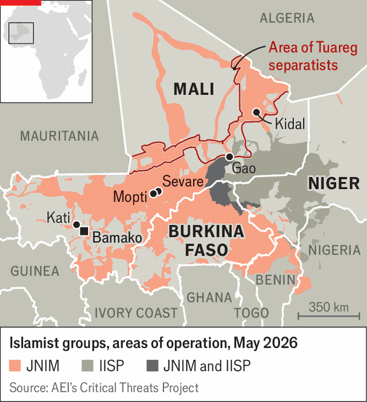
三国均拒绝参与“弗林特洛克”行动。关于萨赫勒地区的安全形势，一位西方将军表示：“所有指标均呈下行趋势。”美国及其盟友与该地区国家在反恐合作中，虽结合军事支持、援助及部分民主推广，但力度不足，未能遏制极端主义扩散。然而，西方的撤退可能使局势进一步恶化。自2020年起，萨赫尔三国切断与西方及西非盟友的联系，转而靠近俄罗斯。他们驱逐法国和美国军队及联合国维和人员，随后发起针对极端分子的残酷行动。美国在尼日尔的情报基地已关闭。据美国防务官员称，萨赫尔地区已成为“情报黑洞”。特朗普政府希望打破这一局面。■
美国国务院非洲事务副主管理查德·迈克尔斯（Richard Michaels）于4月30日表示，美国已明确表态不再对无期限承诺。美国非洲司令部（AFRICOM）称其非洲指挥架构将实施更严格的“优先级安排”。这表明美国将逐步放弃战略稳定顾问公司（Strategic Stabilisation Advisors）顾问安妮莱丝·伯纳德（Aneliese Bernard）所称的“软性反恐手段”，如改善士兵与当地社区的关系，转而采取更直接的强硬措施，例如无人机袭击。果然，美国已加大空袭力度，最明显的是在索马里，美国削减了特种部队资金并减少了反恐行动倡议。与此同时，AFRICOM也增加了对极端组织的空袭行动。知情人士称，军事行动的门槛已降低，授权批准空袭的权限下放程度也有所下降。■
12月，美国首次对尼日利亚实施空袭，此前唐纳德·特朗普声称当地基督徒面临宗教迫害。目前，美国暂无在萨赫勒地区发动进攻性空袭的计划。但特朗普政府正试探性地接触军政府，以恢复合作。去年，美国分享的情报协助马里军队打击极端分子领导人。2月，美国派一名国务院高级官员前往萨赫勒地区，讨论恢复关系。随后，美国解除对三名马里军官的制裁，其中包括（现已去世的）国防部长。达成协议后，美国将恢复在马里领空飞行情报收集飞机和无人机。美国还希望为投资者开拓经济机遇。该地区的矿产资源包括黄金、锂，而在尼日利亚还有大量铀矿储量。■
旗舰黄金公司（Flagship Gold Corp）是一家总部位于纽约的矿业公司，于10月与马里国有矿业公司达成协议。本周，美国官员首次邀请布基纳法索代表团参加华盛顿举行的SelectUSA投资峰会。这一切表明，美国在遏制非洲恐怖主义问题上正采取更加赤裸裸的交易式手段。“他们正在问：谁是这里的强人，谁愿意与我们合作？”美国智库胡德森研究所（Hudson Institute）的詹姆斯·巴内特（James Barnett）表示。但该地区强人似乎并不急于与美国合作。JNIM近期在马里的袭击凸显了依赖俄罗斯的危险。有消息称，马里基层官兵对俄罗斯盟友日益感到沮丧。然而，马里军方领导人阿西米·戈伊塔（Assimi Goïta）可能正“坚持当前策略”，一位巴马科（Bamako）的西方外交官表示。
自袭击事件以来，他首次公开露面是在与俄罗斯官员的会晤中。马里伊斯兰运动（JNIM）在马里的成功也凸显了美国当前反恐策略的缺陷。尽管萨赫勒地区军政府以残暴著称，但它们仍难以击败极端主义并为美国投资提供必要安全。尤其是戈伊塔，可能不会在任太久。在弗林特洛克（Flintlock）项目中，美国军官强调支持西非各国军队合作并培训其尊重人权与法治。这类理念在反恐行动中始终被低估，而在特朗普政府时期更是愈发不受青睐。但它们可能比与失势强人达成肮脏交易更具成效。■ 注册订阅《分析非洲》（Analysing Africa），每周获取关于世界最年轻、最不为人知大陆的最新动态。
§037 弗里德里希·梅尔茨无法继续这样下去原题：Friedrich Merz can’t go on like this · 板块：Europe · 栏目：欧洲
这是一个阳光明媚的春日早晨，地点是德国萨克森-安哈尔特州的萨尔策韦尔镇，这里半木结构房屋与鹅卵石街道构成一幅风景画。人们聚集在此高声指责弗里德里希·梅尔茨。在德国总理同意接受当地居民、农民等提问的文化中心外，抗议者们正针对他的能源政策表达不满。室内，一位皮肤癌患者因拟议的筛查规则变更而愤怒，抱怨政客们只顾为自己谋利，普通民众却在受苦。"总理只会回避问题，从未提出具体方案，"一位对繁琐程序和对乌克兰援助不满的企业家托马斯·贝克尔说道。
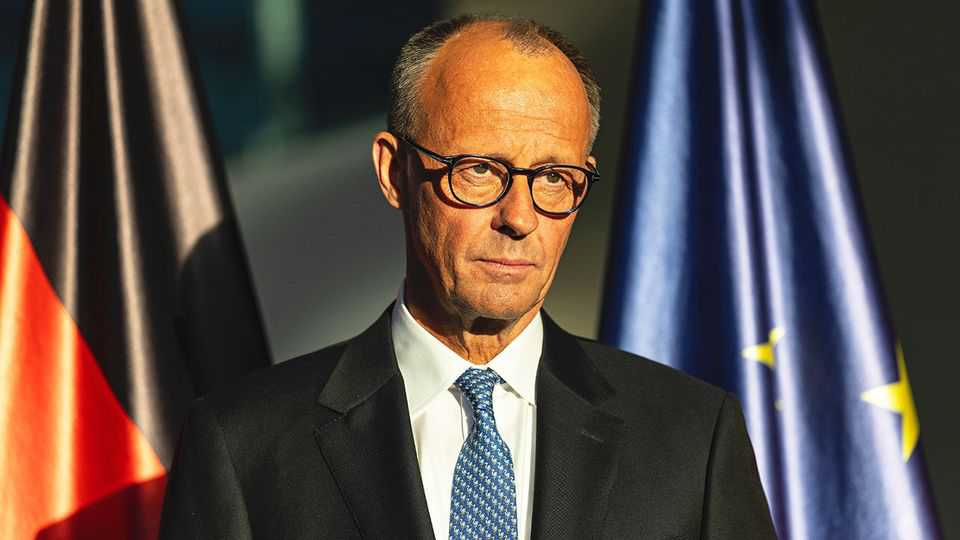
他主张举行新的选举。默茨先生于一年前上任，其政绩不容忽视。即便在成为总理之前，默茨就推动了宪法改革，以促进大规模的军备和基础设施投资。默茨领导的联合政府由他的右翼中间派基督教民主联盟（CDU）及其巴伐利亚姐妹党基督教社会联盟（CSU），以及社会民主党（SPD）组成，已批准了福利、税收、能源以及最近的医疗改革。争议源于对非法移民问题的激烈争论，尽管移民人数大幅下降（尽管主要归因于政府无法控制的外部事件）。即便与特朗普近期发生争执，默茨仍重振了德国的外交与安全政策活力。然而，正如萨尔策韦尔事件所显示的，德国人对这位总理已感到厌倦。
尽管默茨从未赢得德国人的喜爱，如今仅有13%的德国人对他的工作表示满意，仅11%认为他的政府工作成效显著。基民盟/基社盟（CDU/CSU）自去年联邦选举以29%得票率胜出后，民调支持率已下滑至23%。社民党（SPD）处境更糟；其在最近两次州选举中惨败，目前仅维持13%的支持率。与此同时，极右翼政党德国另类选择党（AfD）尽管频遭丑闻和内斗，却在民调中拉开领先差距（见图表）。该党希望在萨克森-安哈尔特州9月投票时首次掌权。默茨仍以揭露真相为己任，乐于扮演一个不愿接受变革的挣扎国家的直言者。但随着其任期还有三年，他愈发显得形单影只。正如他本周承认的：“危机叙事已脱离控制。”问题究竟出在哪里？■
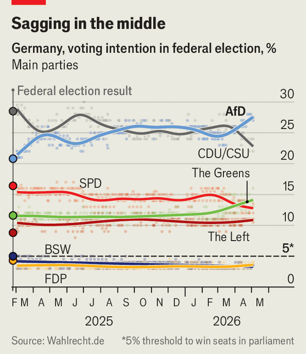
默茨（Merz）诸多为人诟病的缺点——缺乏细节把控、易怒、急于发言——并未助益。他甚至在萨尔茨韦德尔（Salzwedel）的批评者面前发火，而非表示同情。更深层的问题在于他对所监管的政治机制把控不稳。政府办公厅运作混乱，与基民盟/基督教社会联盟（CDU/CSU）议员协调不畅。副首相兼社会民主党（SPD）共同领导人克林贝尔（Lars Klingbeil）与默茨关系尚可，但对自身基层成员的管理却力不从心。政客的演讲或许切中要害，却难以转化为具体政策。诸如去年“改革之秋”这样的重大承诺最终都流于空谈。疲惫感笼罩着整个政府。执政党议员们往往以哀叹为主，而非愤怒，抱怨合作伙伴的不足。这种情绪并非毫无根据。社会民主党议员曾就社保规则的微小调整提出抗议。
去年，一群年轻的基民盟/基社盟死忠派曾威胁要阻止一项他们认为不可负担的养老金改革。政府仅有的12席微弱多数，使得叛逆议员能发挥不成比例的影响力。社民党议员伊莎贝尔·卡德马托里（Isabel Cademartori）描述了一种“令人费解的认知错位”，即执政党双方都误以为对方领导人已将一切让渡，从而限制了为维持联盟运转所需妥协的空间。这在一定程度上是因为执政已演变为削减开支、危机应对和痛苦改革的沉闷循环。政府最近将2026年经济增长预期减半至仅0.5%，部分归因于霍尔木兹海峡的封锁，也因国内改革进展迟缓。
德国人，正如默茨先生经常指出的那样，工作时长远低于OECD（主要由富裕国家组成）其他成员国。不断膨胀的社会福利成本和高边际税率显然不是激励人们更努力工作的因素。而德国工业正承受着美国保护主义和中国贸易主义的双重打击。“真正的问题在于，我们无法断言三到四个月内情况会好转，”基民盟议员赖纳德·布兰德说。令人担忧的是，更大的挑战还在后头。执政党正就如何为低收入和中等收入群体减税展开激烈争论。除国防外，几乎每个部委都必须在明年预算最终确定前削减开支。知情人士预测，最大的戏剧性事件将围绕公共养老金体系展开，该体系吞噬了联邦预算的四分之一。■
在六月下旬官方委员会报告发布后，政府必须设法从养老金支出中削减40亿欧元（约合47亿美元），各方阵营开始划清界限。路德维希·艾哈德基金会（Ludwig Erhard Forum）智库负责人斯蒂芬·科列夫（Stefan Kolev）表示：“改革辩论存在一个重大缺陷：这个国家需要愿景却缺乏愿景。” 当前氛围如此低迷，默茨（Merz）不得不强力反对党内日益增长的激进派，这些激进派主张通过提前大选或以临时多数执政来瓦解联盟。这种可能性不大，因为这两种方式的最大受益者将是德国选择党（AfD）。不过乐观者或许仍存在。布兰德尔（Brandl）坚持表示：“当我们尽职完成工作，我们的支持率终将回升。”——或许更多是出于希望而非预期。■ 要掌握欧洲最大新闻动态，请订阅我们的周报Café Europa。
§038 为何瑞典学校开始摆脱电子设备原题：Why Swedish schools are going unplugged · 板块：Europe · 栏目：欧洲
当西格丽德·罗森鲍姆（Cecilia Rosenbaum）看到一座书脊楼梯——每级台阶的垂直部分装饰着色彩斑斓的贴纸，展示着《彼得·潘》《查理与巧克力工厂》等孩子们喜爱的图书标题——她决定为自己的学校复制这一设计。蒙特梭利国际国王斯霍尔门学校（Montessori Mondial Kungsholmen）校长正致力于鼓励学生多读书。课间时分，书籍被带到学校前的公园；每天课程开始前有15分钟的阅读时间；每周有一天，老师会为全班朗读。
■
曾经拥有全球最高识字率的瑞典，近年阅读水平出现下滑。2022年（最新数据）瑞典学生在PISA（一项针对15岁学生阅读能力及其他技能的全球评估）中的得分，四年间下降了19分，至487分。这一成绩低于爱尔兰的516分和新加坡的543分（后者为全球最佳表现）。瑞典高等教育部长洛塔·埃德霍尔姆（Lotta Edholm）表示：“约25%的瑞典学生难以正确阅读。”她认为这一问题“与过度依赖数字工具而缺乏其有效性的证据有关”。埃德霍尔姆决心削减数字化教育。“从屏幕到笔记本”（Från skärm till pärm）是其右翼政府“回归基础”的政策口号，旨在减少对电脑和平板电脑的使用，转而推广手写和传统教科书。■
今年8月，瑞典所有公立小学将全面禁止使用手机。2023年政府启动了一项雄心勃勃的投资计划，旨在实现每名学生每门课程配备一本教材的目标。截至目前，政府已投入超过20亿瑞典克朗（约合2.16亿美元）恢复纸质教材，并将继续投资线下阅读、手写和数理能力培养。欧洲和美国其他地区也在推动学校回归纸质书和笔，但丹麦、瑞典和芬兰的行动最为迅速。这些国家通常对数字技术持开放态度，但去年芬兰——诺基亚（Nokia）的诞生地，全球移动电话技术的先驱之一——已对7至16岁学生的课堂手机使用实施严格限制。丹麦将在今年跟进，立法规定公立学校（folkeskole）即小学和初中阶段，禁止使用手机及私人平板电脑，适用年龄至16岁。■
“重返书本的成本很高，”前丹麦教育部长梅尔特·里伊萨格表示。丹麦自2011年起率先在校园引入平板电脑，但对教师的培训却寥寥无几。“我们的教师就像在海上一样迷茫，”斯德哥尔摩VRG校园维克多·里德伯格高中校长卡拉·巴克-阿斯特罗姆表示。该国随后对自身的数字化推进感到后悔。里伊萨格认为，平板电脑在丹麦学生阅读和数学能力下降中起到了一定作用。尽管有关手机禁令益处的科学证据仍显薄弱，但正逐步增多。“总体而言，所有人都同意限制手机使用对孩子们的注意力有益，”华盛顿大学的卢西亚·马吉斯-魏因伯格表示。10月发表的一项研究显示，佛罗里达州某大型学区实施“上课铃声至铃声”的手机禁令初期，学生被停课的人数反而上升。■
然而，禁令实施第二年，测试成绩出现了显著提升。研究还发现，手机禁令大幅降低了学生的逃课率，随着学生逐渐适应并开始享受不被屏幕束缚的体验。更好的出勤率或许能解释部分成绩提升的原因。即便如此，马吉斯-温伯格女士警告称，不存在适用于所有情况的统一政策。巴克-阿斯特罗姆女士欢迎埃德霍姆女士的许多政策，但警告不要让政策走向极端。16岁以上的学生需要使用手机和笔记本电脑，因为他们所学的内容变得更加复杂，同时也要为大学和职场所需的数字技能做好准备。尽管如此，她的学校在考试期间仍会切断互联网：作弊或浏览的诱惑实在难以抗拒。■
要掌握欧洲最重要的新闻，敬请订阅我们的周度专属简报《Café Europa》。■
§039 乌克兰袭击俄油枢纽引发灾难 黑海末日原题：A Ukrainian strike on a Russian oil hub causes catastrophe · 板块：Europe · 栏目：欧洲
寻常日子
黑海沿岸的俄罗斯港口城市图阿普斯（Tuapse）及其周边村庄是夏季热门旅游胜地，吸引全国游客前来短暂停留。距离仅70英里（113公里）的索契（Sochi）是2014年冬奥会举办地，也是俄罗斯总统弗拉基米尔·普京的常住地之一。近日，港口附近的大喇叭正邀请游客乘船游览，以“享受新鲜空气和自然风光”为宣传。广告与现实的脱节在此显得尤为突出。
空气里弥漫着有毒的黑色烟云，这些烟云从燃烧的炼油厂和俄罗斯巨型石油公司Rosneft（罗斯涅尔）的着火储油罐中滚滚升起。4月16日，乌克兰无人机首次袭击了重要石油出口枢纽的海港终端，引发第一处火情。袭击造成2人死亡、7人受伤。四天后，当火势被扑灭之际，乌克兰再次发动袭击，导致石油泄漏，随后越过围油栏涌入黑海，污染了约50公里海岸线。接下来几天又有两次袭击打击了石油设施，包括4月28日对主要炼油厂本身的破坏。■
此次袭击是乌克兰更广泛战略的一部分，旨在集中打击俄罗斯能源基础设施，并在数日内反复攻击同一座石油和天然气出口设施及炼油厂。工业火灾在居民区肆虐，海岸上出现油污泄漏，共同构成了一场环境灾难。被油滴和烟尘污染的雨水——类似伊朗石油储罐遭轰炸后出现的状况——已污染了城市周边的水体和土壤。从图阿普斯升起的黑色烟雾一直延伸至索契，被飞越该地区的空乘客所见。社交媒体被油污泄漏视频刷屏，一段短视频显示燃烧的燃料如熔岩般沿街道流淌。警方车辆上的扩音器警告居民，拍摄破坏场景的人可能被处以500,000卢布（约合7,000美元）罚款。
目击者称，交通警察随机检查车辆，甚至翻查化妆品包和急救箱内容。到访该地区的记者遭到怀疑，有当地居民向警方报告他们的行踪。看来当局的主要关切在于遏制乌克兰无人机袭击引发的政治影响，通过控制新闻传播、展示灭火能力、淡化环境损害，以避免民众改变假期计划。最初，官员们仅建议居民关窗、减少户外活动并避免吸烟。4月28日，炼油厂本身遭袭后，周边居民开始被疏散。■
当天稍晚时候，普京首次就此事发表讲话，援引地区行政长官乐观的报告称局势已得到控制。“目前没有重大威胁，”他表示，“人们正在应对地面面临的挑战。”一名前来协助救援动物的志愿者表示：“我们原本以为这些事件后民众会更认真反思乌克兰无人机袭击的原因，但实际情况并非如此，一切停留在‘我们是受害者’的口号上。”这一信息被市民反复传播，并由俄罗斯石油公司（Rosneft）和国家宣传推动，他们将乌克兰的行动描述为一种“环境恐怖主义”，并把俄罗斯国家描绘成该地区和平的主要捍卫者。5月2日，图阿普斯市长谢尔盖·博伊科承诺，油污海滩将在6月1日前清理完毕，以迎接繁忙的夏季旅游季。■
但正如一位居民对本报驻地记者所说：“我不在乎游客。我最心疼的是我的家乡。”在港口附近的海滩上，一名男子展开折叠椅，准备钓鱼装备。就在他身旁，彩虹色油膜与油污正随水面漂浮。■ 要了解欧洲最重要的新闻，请订阅我们的周度专属简报《Café Europa》。
§040 特朗普威胁撤军对欧洲而言具有重大影响原题：Trump’s threat to withdraw troops is serious for · 板块：Europe · 栏目：欧洲
这起争端最初只是小摩擦，但很快演变为影响欧洲安全的严重冲突。4月27日，德国总理弗里德里希·默茨（Friedrich Merz）表示，美国在伊朗面前“遭到羞辱”，并称美国“显然在与以色列共同发动的战争中毫无战略”。确实如此，但如此表态显得鲁莽。恼怒的特朗普总统表示，他将撤回驻德美军约5000人，可能在其他地区还会更多。乍看之下，这些数字似乎微不足道，与驻德及轮换基地中的约39000名美军以及欧洲各地约80000名现役美军相比。
■
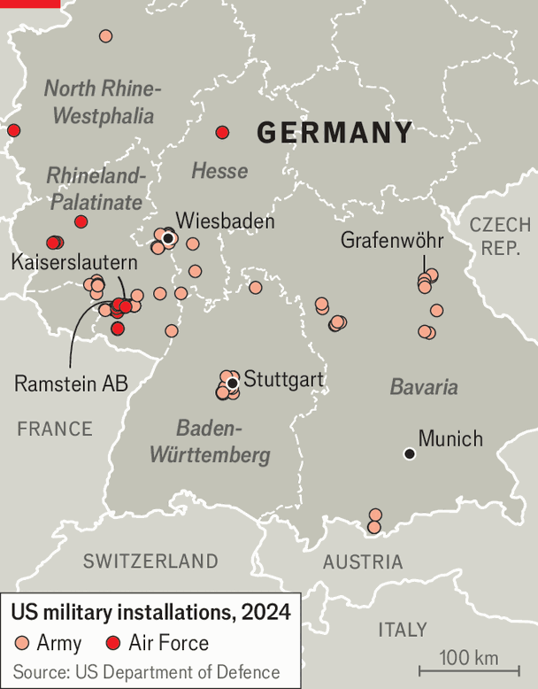
但美国也表示将不再部署其三个最新且最强大的作战单位之一。多域作战部队（Multi-Domain Task Forces，MDTF）是美军现代化的核心。该部队将配备远程巡航导弹和高超音速武器的火箭部队与尖端计算和通信技术相结合。2月在接受记者专访时，被派驻德国的第2多域作战部队指挥官杰夫·皮克勒（Jeff Pickler）表示，该部队将利用人工智能工具，每天可识别1500个目标，远超传统手段所能发现的数量。“我们总部或指挥所里的人手永远无法完全处理这些数据。”■
法比安·霍夫曼（Fabian Hoffmann）表示，尽管MDTF一次只能发射约16枚导弹，但其在管控升级动态方面可能产生不成比例的影响。由于该系统依托美国庞大的核力量，它能够以较低的核反击风险，对俄罗斯的敏感或战略目标实施打击。MDTF的损失凸显了欧洲若想达到类似的威慑水平，亟需大幅增加自身远程导弹的储备量。“令人震惊的是，竟需要特朗普的言论爆发才能迫使欧洲政界人士正视我们自身的能力缺口。”霍夫曼表示。■ 要掌握欧洲最大新闻动态，请订阅我们的周度专属通讯《Café Europa》。
§041 德国声称拥有世界上最好的面包 欧洲 阿姆斯特丹原题：Germany claims it has the world’s best bread · 板块：Europe · 栏目：欧洲
或许德国人享受的东西比度假更甚，巴登-符腾堡州面包师迈克尔·克雷茨表示，这便是“回家到面包店购买他们心爱的面包”。德国人对本国面包的热爱有时显得有些傲慢：去年，总理弗里德里希·梅茨抱怨在安哥拉找不到“一块像样的面包”，这让安哥拉人感到冒犯。但每个国家都有其文化象征，5月5日，当荷兰人纪念1945年从德国占领中解放的日子时，德国人则在庆祝德国面包日。德国或许拥有世界上最丰富的面包文化。■
德国国家面包研究所（是的，确实存在）官方面包名录中收录了超过3000种面包。特色面包包括黑麦面包、三粒小麦面包（Dreikornbrot）和南瓜籽面包（Kürbiskernbrot）。各地还有专属的面包卷：北德地区称作Brötchen，南德地区则为Semmeln。在德语中，“面包”一词常与“餐食”互换——午间简餐是Pausenbrot（休息时间面包），晚餐则是Abendbrot（晚间面包）。巴伐利亚人则另辟蹊径，将Brotzeit（面包时间）纳入日常。德国国家面包研究所每年还会评选年度面包（目前由黑麦面包担任）。此外还有面包大使一职。德国境内还设有享有盛誉的魏因海姆烘焙学院（Weinheim baking academy），该学院授予“面包侍酒师”学位（克雷丝先生的头衔）。■
自2000年以来，德国最受欢迎的儿童电视角色之一是一块沮丧的面包布罗特，名叫伯恩德·达斯·布罗特（Bernd das Brot，伯恩德·达斯·布罗特）。去年，约翰·奥利弗在脱口秀节目中介绍了他，使其名声传到了美国。然而，德国烘焙业并非一片繁荣。自1998年以来，面包店数量减少了59%，仅剩不到9000家。知名面包师阿恩德·埃尔贝尔表示，独立面包坊正被工业面包厂取代。目前面包大使乔格·迪特里希指出，能源和原料成本上涨、高税收、官僚主义以及熟练劳动力短缺，使手工面包坊处境艰难。与此同时，传统消费习惯也在悄然改变。超市正逐步取代独立面包店。尽管预包装切片面包种类繁多，但如今最常购买的面包却是预包装切片面包。■
新鲜面包价格持续上涨可能正是如此——2019年至2023年间上涨了40%，几乎是整体通胀率的两倍。尽管成本不断攀升，生产商仍需找到方法制作面包，毕竟面包是民生必需品。■ 要掌握欧洲最大新闻动态，请订阅我们的周度专属简报Café Europa。
§042 布鲁塞尔的深层权力结构 欧洲原题：Inside the Brussels deep state · 板块：Europe · 栏目：欧洲
一位参与奠基仪式的石匠深知，自己可能无法见证数十年甚至数百年后的大教堂落成。然而在沙特尔、米兰、亚琛等地，一群虔诚的信徒却将一生奉献于建造能超越自身存在的建筑。一个千年之后，新的行会正在打造自己的宏伟计划。主要驻扎在布鲁塞尔的欧盟委员会工作人员，数十年来致力于构建一个他们希望比巴黎圣母院更令人敬畏且永恒的政治架构。■
取而代之的是那些复杂程度可与巴洛克式大教堂相媲美的法规。大教堂有其建筑师，但真正的工程却由地位更低的工匠完成。欧盟的构建亦是如此。尽管欧盟各机构的主席（共有六位，其中多数人甚至在欧盟圈外也鲜为人知），但布鲁塞尔事务的基调却由“欧元官僚”们掌控，他们确保整个机器持续运转。每天约有3.3万名官员踏入欧盟委员会的办公室，再加上其他欧盟机构如欧洲央行的工作人员数量更为庞大。这些大多是终身公务员，构成了欧洲项目的核心力量。作为起草新法规的执笔人、条约守护者，以及在反垄断和贸易谈判等广泛领域拥有广泛权力的官员，他们的偏见影响深远。■
理所当然地，这个团体的成员渴望建立一个联邦制的欧盟，尽管不像英国小报（British tabloids）过去所描绘的那样教条。他们普遍支持多边主义、开放市场和法治等自由主义价值观。在深层国家中，还有更恶劣的特质。但一个幽灵正在困扰欧盟基层官员。过去十年左右，欧盟逐步扩大了权力，这源于从2009年欧元区危机到2022年俄罗斯入侵乌克兰等一系列突发事件。从巴黎到柏林和华沙（尽管遗憾的是，伦敦除外），已形成共识，即大陆诸多问题需要集体应对。诸如推动大陆经济绿色转型或通过制裁使俄罗斯陷入困境等大规模计划，已被交由布鲁塞尔机构来付诸实施。这本应转化为布鲁塞尔幕后操盘手的影响力激增。但事实并非如此。■
近来，欧盟委员会各职能部门走廊里弥漫着一种情绪——即留任的文职人员感到权力正在从他们手中流失。尽管27名由各国政府任命的委员每五年轮换一次，但这些文职人员仍感受到两大压力。一方面，成员国仍是欧洲项目真正的掌权者。各国首都赋予布鲁塞尔合法性与分量，但同时又对已授权的权力保持严密控制。即便各国希望欧盟承担更多责任，也仍想防止布鲁塞尔——无论是委员会还是偶尔能影响政策的欧洲议会——成为过于独立的权力中心。欧盟领导人定期会议对布鲁塞尔机构的运作干预远比以往更为紧密。■
怀旧派人士记得欧盟委员会曾是创新的源泉，能够以自己认为合适的方式推进欧洲利益。如果这曾经属实，如今则更不如此。如今沮丧的联邦主义者们指责欧盟委员会不过是理事会的秘书处，而理事会是欧盟机构中部长们开会的场所。“国家政府让我们跳，我们问跳多高”，一位布鲁塞尔老手抱怨道。部分原因在于此，欧盟委员会内部的权力也发生了转移。过去十年左右，欧盟委员会的政治领导层——尤其是其主席，该职位由各国首都任命——开始占据聚光灯。通过强有力的办公厅主任，让-克洛德·容克和乌尔苏拉·冯·德莱恩曾将过去由数千名欧盟官僚掌握的权力集中到少数人手中。■
表面上，这一构想旨在将他们的机构从一个技术官僚体系转变为“政治委员会”，以符合一个需做重大决策的机构应有的定位。结果却是，那些曾认为自己能推动欧盟利益的官员们，如今却抱怨被上级过度干预。有时，欧盟官僚体系的不满情绪会公开化。去年夏天，欧盟与特朗普政府达成的贸易协议令布鲁塞尔官僚体系内部的自由贸易派感到难以接受，尽管该协议得到了冯德莱恩女士的背书。负责贸易事务的官员萨宾·魏安德（Sabine Weyand）罕见地公开批评该协议为一笔肮脏交易；4月28日，她被宣布不再担任该职。■
在反垄断事务中，赋予欧洲官僚大量权力的规则——无论是对美国科技公司处以巨额罚款，还是阻止欧盟政府补贴受青睐的产业，这让巴黎和柏林的政要们大为恼火——正因政治压力而逐步放宽。对一些人而言，遏制欧盟委员会的“深官僚体系”是件有益的事。权大责重，问责机制必不可少。时代在变，欧盟规则也应随之调整。尽管欧洲官僚们初衷良好，但布鲁塞尔泡沫的软绵绵自由主义氛围，似乎与欧盟边缘地区盛行的民粹主义口号脱节。无论面临何种挑战，欧洲官僚体系都不会消失。最近一次招聘中，有17万名申请人申请加入欧盟机构担任初级行政人员，打破了以往纪录。■
经过一系列测试后，仅有不到1%的候选人将被授予欧洲建设者协会（Europe-builders）的入会资格。当成功者接过终身肥缺的职位时，一些人会发现资深同事因近期影响力减弱而感到沮丧。但仍有布鲁塞尔的许多人热泪盈眶地描述自己在大陆和平工程中扮演的谦逊角色，他们眼中这份贡献与任何大教堂一样值得敬仰。■ 订阅者可注册《经济学人》观点通讯电邮，获取我们最佳的社论、专栏、特稿及读者来信。
§043 英国日益严重的反犹太主义该如何应对原题：What to do about Britain’s rising antisemitism? · 板块：Britain · 栏目：英国
英国的犹太人并非一个庞大的群体。根据2021年英格兰和威尔士人口普查，有28.7万人（无论是宗教还是民族意义上的）自认是犹太人。相比之下，印度教徒的数量超过三倍，普查中记录的穆斯林人口接近400万。与许多其他宗教和少数民族群体一样，犹太人正逐渐离开传统的城市社区。犹太人口的增长速度最快并非在伦敦西北部历史悠久的犹太社区戈德斯格林（Golders Green），而是在像博雷黑姆伍德（Borehamwood）这样的通勤城镇。
伦敦近期频发的反犹太主义袭击事件令人格外恐惧。4月29日，两名犹太男子在戈德斯格林（Golders Green）遭刺伤。警方已对45岁的索马里裔男子埃萨·苏莱曼（Essa Suleiman）提起谋杀未遂指控，并将此次袭击定性为恐怖事件。这些刺伤事件是自3月以来一系列暴力事件的最新案例。犹太会堂及其他犹太机构遭到了纵火装置的袭击。首相基尔·斯塔默（Sir Keir Starmer）于5月5日在唐宁街紧急召开的峰会上表示，最新袭击“是反犹太主义上升趋势的一部分，让我们的犹太社区感到恐惧、愤怒，并质疑这个国家——他们的家园——是否还安全”。■
苏莱曼先生还被指控于同一天在伦敦南部试图谋杀熟人艾哈迈德·侯赛因，当时金斯格林的刺杀事件刚刚发生。他似乎存在心理健康问题。十多年前他曾因袭击警察和狗被监禁。2020年他被转介至政府反极端主义计划（Prevent，案件已结案）。许多英国犹太人认为，英国频繁的反战和反以色列抗议活动使反犹太主义者更加胆大。据监测反犹太主义事件的慈善机构社区安全信托（Community Security Trust）统计，去年反犹太主义事件同比上升4%（见图表）。■
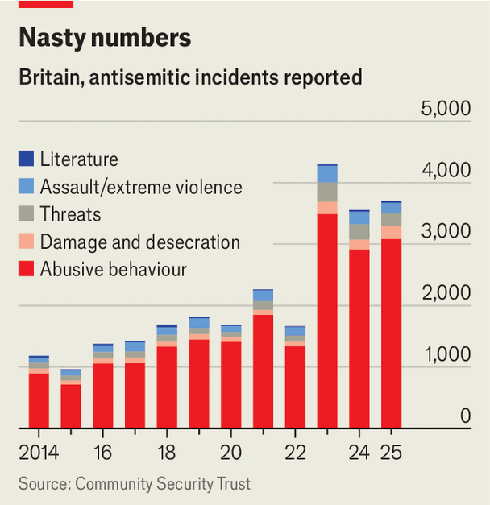
2023年10月7日哈马斯袭击以色列事件发生前的月均值为308起，是该数字的两倍。（由伊斯兰极端主义引发的事件仅占总数的小部分。）由反犹太主义运动委托的YouGov去年9月调查显示，26%的英国人认同“以色列可以为所欲为，因为其支持者掌控媒体”这一说法，较一年前的18%有所上升。该如何应对？第一步是加强警力部署。基尔爵士承诺在犹太社区周边增加“可见度”警力，并拨款2500万英镑（3400万美元）用于安全措施。同时承诺加快仇恨犯罪的起诉速度。如今，大量警力已驻守戈尔德斯格林地铁站入口。数百万英镑的安全资金，主要来自私人资助，已使伦敦部分犹太场所呈现出堡垒般的防御态势。
另一个行动领域是应对国家支持的恐怖主义。一个名为哈拉卡特·阿什布·阿勒·叶马尼·阿勒·伊斯兰（Harakat Ashab al-Yamin al-Islamia）的新组织声称对英国及欧洲犹太机构的袭击负责。尽管尚未正式与伊朗关联，专家指出该组织在社交媒体上的存在特征与伊朗支持的其他地区民兵组织高度相似。复杂之处在于，英国及全球范围内至少部分袭击被怀疑是由伊朗和俄罗斯等敌对国家雇佣的零工经济罪犯所为。最棘手的问题是应如何遏制通过社交媒体传播的种族仇恨言论以及抗议游行中出现的极端思想。2023年《在线安全法案》等更广泛的公众安全保护措施成效有限。■
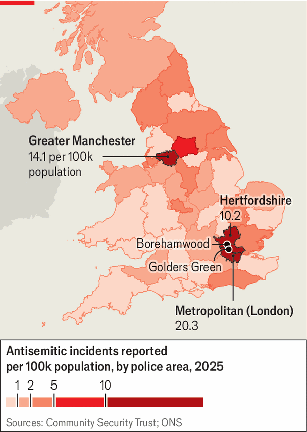
英国前首相基尔·斯塔默（Keir Starmer）在5月2日的BBC采访中表示，英国应保护言论自由，但对高呼“全球化巴勒斯坦起义”（Globalise the intifada）的人应追究刑事责任。他指出，在某些情况下应禁止抗议活动（民调显示多数英国人认同这一观点）。此举引发了一些人担忧，他们认为应自由表达对加沙局势的关切。禁令可能适得其反。去年7月，政府将反战组织“巴勒斯坦行动”（Palestine Action）列为恐怖组织，该组织曾喷涂军用飞机；此后数千人因在集会中持该组织标语被捕。然而这并未遏制反犹攻击的蔓延。同时，犹太仇恨与批评以色列之间的界限并不清晰：持“自由加沙”标语者并不自动等同于反犹分子。■
10月曼彻斯特犹太会堂遭袭击致两人死亡后，英国政府委托审查公共秩序立法，可能旨在增强政府制止抗议活动的权力，同时维护言论自由的保障。然而该审查已严重滞后。历史并未提供简单的解决方案。英国于1936年通过公共秩序立法，试图遏制英国法西斯联盟的活动。二战后曾考虑立法禁止仇恨言论，但因自由主义立场最终被否决。直至1960年代，议会才引入“煽动种族仇恨”罪名，该条款至今仍属现行法律。三月公布的反穆斯林敌意定义争议，再次证明界定“仇恨言论”——更不用说禁止其传播——的难度之深。■
但过去采取的措施对阻止英国恶劣思想的传播收效甚微——这些思想也从未真正流行起来，这并非主要缘由。英国反犹主义的起伏与法律手段并无直接关联。英国犹太人及其他少数群体所享有的和平，主要源自生活在一个稳定且宽容的社会。许多穆斯林和犹太人更倾向于共同反对种族主义。在金斯绿刺杀事件后，两个社区的女性曾联合抗议针对她们的袭击。更高的意识促使一些支持巴勒斯坦的活动人士开始审视自身阵营中以团结为名的反犹主义。若局势恶化，更多英国犹太人可能考虑离境。■
据犹太机构（Jewish Agency）统计，2010年代约有38,000名法国犹太人因反犹太主义上升而移居以色列，其中2015年一家犹太超市遭枪击事件后达到顶峰。另有部分人移居英国，认为那里更安全。自中世纪被驱逐后近370年间，英国犹太人曾多次经历严重的反犹太主义和暴力事件，但他们认为更长的平静时期仍占主导。对一些人来说，这次或许会有所不同。■ For more expert analysis of the biggest stories in Britain, sign up to Blighty, our weekly subscriber-only newsletter.
§044 英国青少年应获得更多投票准备帮助原题：Britain’s teenagers deserve better help getting equipped to vote · 板块：Britain · 栏目：英国
“16岁的时候，我们可以睡在自己的议员（MP）身边，”詹姆斯·埃文斯（James Evans）在2009年英国青年议会于上议院举行的辩论中说道，但“我们还不成熟，无法投票给他们。”随着降低投票年龄至16岁的立法正在议会推进，这一局面即将改变。尽管苏格兰和威尔士已允许16岁青少年参与地方选举，英国将成为继奥地利和马耳他之后，第三个允许16岁公民参与全国性选举的欧洲国家。目前，16岁青少年已开始缴税、可以离家并加入武装部队（尽管他们不能被部署）。
但“降低投票年龄只是半场战斗”，诺丁汉大学的克里斯托弗·皮奇指出，另一半在于提升选民素质。英国年轻人的投票率令人担忧。根据民调机构Ipsos的数据，2024年英国大选中，仅37%的18至24岁年轻人参与投票。相比之下，瑞典2022年选举中，18至29岁选民的投票率高达82%。由伦敦都市大学的阿利斯泰尔·罗斯领导的一项研究显示，在英国120所学校的14至15岁学生中，四分之一的学生对英国主要政党的立场“毫无概念”。其他学生对投票机制也存在困惑：不清楚简单多数制如何运作、什么是选区，或为何需要照片身份证。
据2024年青年公民协会（Young Citizens）的一项调查，年轻人若感觉对政治议题更了解，其投票意愿是普通人的两倍。公民教育（涵盖政治与民主知识）直到2002年才被纳入英格兰的课程体系，此前四年曾进行过一次审查。据已故的伯纳德·克里克爵士（Sir Bernard Crick）所述，这是文明世界最后一个引入该课程的国家。此后，公民教育在课程安排中从未成为重点。如今，83%的中学已转为学院制或自由学校，无需遵循国家课程标准，因此相关教育实施情况参差不齐。英国下议院对2024年大选的审查建议“彻底改革政治教育”。学院制学校将很快需遵循国家课程标准，公民教育也将成为小学必修课程。■
理想情况下，该课程应作为中学阶段每周独立开设的科目。尽管理解民主制度的基本知识很重要，但教育界人士普遍认为，学校对这一科目的教学应更加全面——克里克曾批评某些“令人乏味”的外国课程要求学生死记硬背宪法条文。相反，更受推崇的方法是培养青少年不仅掌握知识，还能具备讨论复杂议题和辨别虚假信息的能力。实践性学习大有裨益。例如，挪威和芬兰曾举办青年选举活动，近期英国公民教育协会（Association for Citizenship Teaching）也借鉴了这一模式。（“这就像地理课中的野外考察部分，”该组织负责人莉兹·莫尔斯说。）■
学生们加入了宣言团队、竞选团队，甚至“宣传”团队，并在英国2024年7月大选当天举行了一场“选举”。来自400所学校的约3万票被登记，工党击败了改革英国党。然而挑战依然存在。根据谢菲尔德大学詹姆斯·温伯格2021年对3000多名教师的研究，仅有1%的教师认为自己具备充分教授政治素养的能力。使公民教育更普及的课程改革将在2028年9月才实施，这已晚于下届大选（必须在2029年8月前举行）的选民资格门槛。一些教师还担心该学科可能变得有毒。在教授政党知识时保持中立是一项充满风险的领域。■
哈里特·安德鲁斯（Harriet Andrews）是政治项目（Politics Project）的负责人，该项目致力于为年轻人提供民主教育。她说：“这是人们最常与我们谈论的话题。”许多有争议的话题在课堂上被回避，因为教师担心涉及政治问题。但根据《经济学人》教育基金会（The Economist Educational Foundation）的一项最新调查，该基金会是《经济学人》支持的独立慈善机构，61%的15至17岁青少年表示，如果他们更了解不同政治观点，会感觉更有资格投票，而44%的人表示自己尚未准备好参加下一次选举。■ 如需获取更多关于英国重大新闻的专家分析，请订阅我们的周度专属新闻简报Blighty。
§045 警惕英国租金法案的意外后果原题：Watch out for the unintended consequences of Britain’s rent act · 板块：Britain · 栏目：英国
英国政府的新法案可能使租房状况变得更糟，而非更好
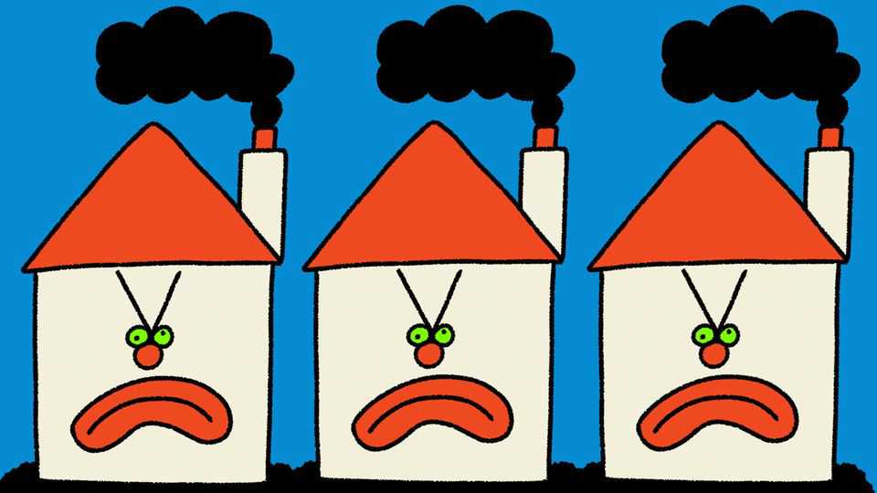
过去二十年来，英格兰的私人租赁市场蓬勃发展。廉价融资、税收优惠和自由放任的监管政策鼓励了购房出租投资者大量涌入。私人租赁住房数量从1996年的200万增至2016年的470万。廉价融资和激烈竞争使租户租金保持低位。但此后十年间，房贷成本上升，税收负担加重，房东需应对繁杂的法规。结果，私人租赁住房数量仅比2016年增加2万套，尽管人口增长了330万。■
5月1日生效的广泛立法改革意味着私人租房可能变得更加艰难。该法案旨在解决真实的住房不安全感。新法律废除了固定租约（通常为12个月），取而代之的是无限期延续的租约。租户向房东发出的解约通知期将设定为两个月，无过失驱逐将被取消。取而代之的是，房东需提供有效理由——如出售房产或租户拖欠租金——方可驱逐租户。新法律还将限制房东提高租金的能力。目前高于标价的竞标战已被禁止。租户也将有权在法庭上挑战年度租金审查。他们将有充分动机这么做，因为新租金将从法庭裁决之日起生效，而非追溯至过去。■
政府此前被传闻可能考虑对租金涨幅实施一年上限，以应对海湾战争引发的通胀压力。尽管现任唐宁街居民对这一政策嗤之以鼻，但工党左翼多数派仍支持租金管制，包括曼彻斯特野心勃勃的市长安迪·伯纳姆（Andy Burnham）。在年轻选民中最具人气的绿党若掌权，也将实施租金上限。此类限制措施可为现有租户提供暂时性缓解，但房东若面临收益下降，可能削减维护投入或干脆退出市场。最终结果将是行业规模缩小、品质下降。近年来租金失控的感知是错误的。2005至2021年间租金年均上涨2.1%，而过去四年则飙升至年均6.7%。但薪资增长速度与之相当。■
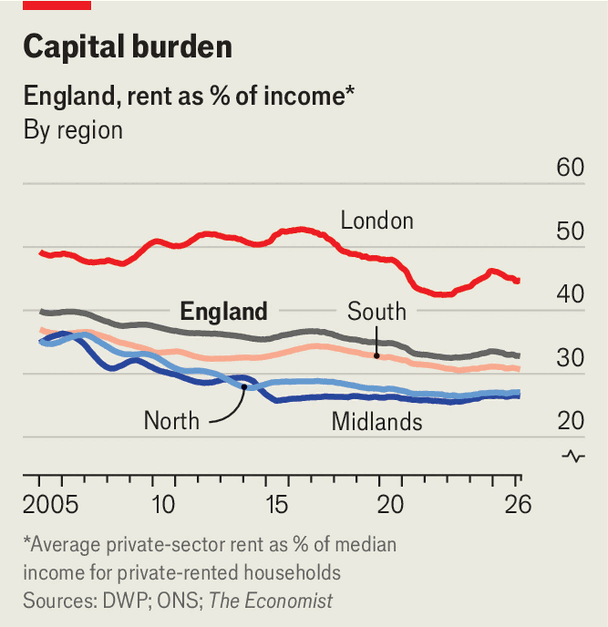
过去二十年间，租户中位数收入中用于支付租金的比例已从40%降至33%。在拥有100万套出租房的伦敦，这一负担接近收入的50%，但与20年前相比变化不大（见图表）。房东们往往被贴上负面标签。然而，政府委托的私人房东调查显示，2024年有三分之一的房东在续约时并未上调租金，尽管当时市场处于过热状态。同样，大多数租户对当前居所感到满意：2024年77%的租户表示，他们感到“身体安全且稳定”。不过，也有少数不法分子。一些不法房东在5月1日法律变更前就发出无过错驱逐通知，意图将房产转为短期租赁。■
约10%的私人租房者报告存在潮湿问题，相比之下，仅7%的公营住房居民（这一差异部分源于私人租房者偏好维多利亚式联排房屋）出现类似情况。新法案实施了以两岁男孩Awaab命名的“Awaab法案”，该法案源于一名两岁儿童因长期暴露于曼彻斯特一处 council 公寓的黑色霉菌而夭折的悲剧。对于上世纪90年代末进入购房出租市场的婴儿潮一代而言，好日子已经结束。房产网站Zoopla的Richard Donnell表示，“如今许多房东的账面数字已难以支撑”。四分之三的房东拥有四套或更少房产，多数人购买房产是为了补充养老金，而如今这些养老金正被他们用于日常开支。剩余的房东更可能为公司性质，对租客采取更强势的谈判策略。■
随着该行业停滞，风险在于新法案将使现有租户受益，却让其他人获取租房的门槛更高。■ 如需了解英国最新重大事件的专家分析，请订阅我们的周度专属通讯Blighty。
§046 英国鹿群泛滥成灾，乡村陷入困境原题：Britain’s deer are thriving. It’s a nightmare for the countryside · 板块：Britain · 栏目：英国
小熊维尼的虚构家园——百亩森林（The Hundred Acre Wood），灵感源自英国东萨塞克斯郡的阿什当森林（Ashdown Forest）。在小熊的冒险故事中，众多动物角色频繁出现，唯独缺少鹿的身影。若这些故事今日重写，鹿的踪迹定会随处可见。如今，这片森林每平方公里栖息着15只鹿，漫步其山丘间，有相当几率遇见一支30头的鹿群。若未能直接目击，细心的观察者也能发现它们的踪迹：从被啃噬的树苗到被整齐咬断至离地1.6米处的树干——这是鹿群啃食的“ browsing line”，也是落腮鹿（fallow deer）所能达到的最高点。
英国鹿群的确切数量无人知晓。最常见的估算数字——200万只——充其量只是个粗略推测。
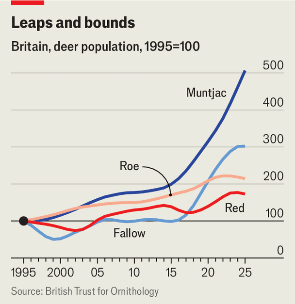
但可以肯定的是，它们的数量正在上升。自1990年代以来，观鸟者们向英国鸟类学协会报告了鸟类和哺乳动物的观测数据。过去15年间，野鹿和麂鹿的观测数量翻了一番以上，而 Roe鹿的观测量则增长了42%（见图表）。英国政府最近发布的关于鹿类影响的政策文件直言不讳地指出：“迄今为止的管理方式显然已失败。”这确实是个问题。鹿类每年导致多达74,000起交通事故，破坏农作物，对生物多样性构成噩梦般的威胁。2023年，普利茅斯的德里福德医院在视频监控中发现两只公鹿在走廊上嬉戏后，不得不加强安保措施。在英国，六种鹿类，正如研究人员乔赫恩·朗贝因所言，如同“各种不同高度的割草机”般活动。体型娇小的麂鹿只能达到约1米的高度。■
红鹿和梅花鹿的体长可达1.8米。但每个物种也有各自独特的食性——它们会选择性地采食特定植物，这种行为可能严重破坏自然环境。尤以林地最为脆弱，2021年有33%的林地出现鹿类破坏迹象（1971年为12%）。这会摧毁鼹鼠、夜莺和斑鸠等野生动物的栖息地。新冠疫情使猎人长期居家，加剧了这一长期存在的问题。过去20年，较温和的冬季和更长的生长季让英国鹿类生存条件改善。但问题可能早在20世纪初就已埋下伏笔，当时贵族们认为在庄园引入更多异域鹿种是时尚之举。真正的元凶是捕杀不足。每年约有35万头鹿被猎杀，这一数字可能需要翻倍。■
但鹿狩猎（一种狩猎形式）是一项艰辛的爱好，且正逐渐衰落。2022年，鹿狩猎者的平均年龄为58岁，如今已升至62岁。狩猎需获得土地所有者的许可，这使捕杀工作更加复杂。此外，鹿擅长识别安全区域。加之英国缺乏像欧洲许多邻国那样的狩猎文化，没有强劲的鹿肉市场，鹿狩猎者缺乏动力去猎杀并准备比亲友家人能吃更多的鹿（每年约15头）。实际上，鹿群过度繁殖反而对鹿狩猎庄园有利。一头额外的公鹿可使地产价值增加5万英镑（约合6.7万美元）。所有这些因素导致英国鹿群数量自至少1970年代起每20年翻一番。复利效应使该国如今面临慢性问题的急性阶段。该如何应对？■
政府计划提振鹿肉需求或许能有所帮助。一些人主张采用更人道的替代方案，例如高墙和避孕诱饵。但猕猴桃鹿（muntjac）极难圈养，避孕药剂的投放也异常困难。要控制缺乏天敌的鹿群数量，所需狼的数量（至少15,000只）使得重新引入狼群的方案，即便在环保主义者中也仅是空想。最激进的解决方式或许是改革英国的封建狩猎法，由政府发放狩猎许可。这很难想象。乡村联盟（Countryside Alliance）的罗杰·塞登（Roger Seddon）表示，此类变革“将对乡村文化造成巨大破坏”。■ 如需获取更多关于英国重大议题的专家分析，请订阅我们的周度会员专属简报Blighty。
§047 英国板球球棒供应链的意外瓶颈原题：The surprising supply-chain choke point for cricket bats · 板块：Britain · 栏目：英国
英国板球球棒供应链的意外瓶颈 英格兰山毛榉短缺改变击球阵容 高端板球球棒，售价可达1000英镑（1350美元）以上，几乎全部由英格兰山毛榉制成。没有其他木材能提供相同的击球效果。自2017年以来，英格兰山毛榉的价格已翻三倍，主要受痴迷板球的印度需求推动。在埃塞克斯郡J.S. Wright & Sons公司总部——全球约四分之三山毛榉球棒的木材供应商——院子里回荡着电锯切割山毛榉的声音。卡车从英国各地运送树木■
每根树干被切割成约40个楔形裂片，随后在加热仓库中干燥。多数裂片被运往印度完成从裂片到球棒的最终加工。业务持续繁荣。这家拥有132年历史的公司2024年销售额达1670万英镑，同比增长35%。木材来源正成为日益严峻的挑战。英格兰白杨树需约15年才能成熟。J.S. 威特（J.S. Wright）每年种植多达45000株幼苗，但仅有三到四成能被使用。“我们需考虑鹿群破坏、松鼠啃食、海狸啃噬以及维护不足等因素，”第四代家族企业管理者奥利弗·威特（Oliver Wright）解释道。掌控规则的玛丽勒bone板球俱乐部（MCC）希望在提升可负担性的同时，维持击球手与投手之间的力量平衡。■
从10月起，业余选手将被允许使用由最多三块木材层压而成的球棒。职业选手仍需使用整块山毛榉木。格雷-尼科尔斯公司（Gray-Nicolls）的理查德·格雷表示欢迎这一改变，该公司位于东萨塞克斯郡，自主种植山毛榉。他说：“层压技术将使我们能够将原本被浪费的优质但尺寸较小的山毛榉木料转化为可用产品。”国际板球理事会（MCC）对使用替代材料持开放态度，但不希望出现类似网球或高尔夫的装备军备竞赛。MCC的弗雷泽·斯图尔特表示：“球棒的性能提升空间相当有限。如果材料太差，人们不会使用；如果太好，我们也不会允许。”■ 如需获取英国重大新闻的深度分析，请订阅我们的周度会员专属通讯Blighty。
§048 贝尔法斯特的涂鸦：历史与艺术的露天画廊原题：Belfast’s murals are an open-air gallery of history and art · 板块：Britain · 栏目：英国
对于北爱尔兰而言，墙壁曾通过文字与图像讲述故事。即便1998年贝尔法斯特协议终结了长达三十年的教派冲突——即“ Troubles ”时期，墙壁上的信息仍可能致命。当“埃蒙·科尔曼：英国特工（1985-1999）”的涂鸦出现在纽里镇的山墙时，被点名的前爱尔兰共和军（IRA）成员曾试图覆盖，却无济于事。数小时后，他被附近杀害，反英恐怖组织用石块砸出他的面部，警方称这“是原始人般的行径”。 ■
其他墙面艺术则赞扬教派杀手，或高举恐怖组织名称以标记其领地。政府无法清除这些公开支持非法组织的涂鸦，暴露了其软弱。大量此类涂鸦至今仍存，但数量正随年岁流逝而递减。四名学者——迪伦·奥德里希尔、伯特·沃格尔、埃里克·莱普和丹·莫雷克罗夫特-莱斯——的研究显示，自1998年以来的25年间，沙恩尼尔区最具威慑力的涂鸦中四分之三已被清除。大卫·坎贝尔是忠诚派社区委员会主席，该组织的复杂性恰如北爱尔兰本身：它合法存在，却由被禁的准军事组织构成。■
坎贝尔先生并非军事组织成员，他对头戴面罩的图像表示：“其中一些艺术表现令人作呕，这与它传递的信息无关。”他表示，忠诚派指挥官普遍支持拆除因岁月侵蚀而褪色的军事化涂鸦。这些地区的新涂鸦则纪念伊丽莎白二世女王和查尔斯三世国王。坎贝尔希望最令人反感的涂鸦能在五年内全部清除。并非所有人都认同这一观点。2024年，一场风暴推倒了贝尔法斯特北区默特文庄园（Mount Vernon estate）的墙体，该地是阿尔斯特志愿军的据点。这面墙体长期存在臭名昭著的巨型威胁：两名头戴面罩的持枪者瞄准前方，标语写着“为和平做好准备；为战争随时待命”。数月后，墙体被重建，涂鸦也被重新绘制。这种做法可作为谈判策略。“冲突转型”已发展成一项有利可图的产业。■
数百万英镑资金来自多个基金。若某地区看似无冲突风险，便难以获得大量资金，其中部分会流向准军事组织及其帮派。来自贝尔法斯特的犀利作家纽顿·埃默森（Newton Emerson）曾将东贝尔法斯特夏季骚乱戏称为“一份拨款申请”。旅游指南《孤独星球》（Lonely Planet）推荐将特拉维斯墙绘（Troubles wall art）作为北爱尔兰首府的免费景点。游客纷纷前往贝尔法斯特的 Troubles 墙绘，从纪念最著名的爱尔兰共和军绝食者鲍比·桑兹（Bobby Sands）的精致图腾，到“自由角”（Freedom Corner）的阿尔斯特防卫协会（Ulster Defence Association）简洁的领土标记。一些当地人认为彻底清除所有 Troubles 墙绘是错误的。正如人们渴望参观集中营或战场，阴森的历史同样具有吸引力。■
贝尔法斯特日报《新闻信报》编辑本·洛威表示，在北爱尔兰冲突结束后，他曾向美国游客展示当地的涂鸦艺术，其中一位游客次年带着朋友重返，却发现这些涂鸦已被覆盖。尽管洛威并不同情准军事组织，但他表示：“我们需要找到一种方式，在当地支持此类历史的地方，保存这些涂鸦中最优秀的作品。” 涂鸦不必阴暗才能吸引人。近年来，贝尔法斯特出现了许多令人惊叹的非教派涂鸦：艺术图像、花卉图案，甚至还有对2019年被激进共和派杀害的记者莉拉·麦基的深情致敬。漫步贝尔法斯特市中心，会遇到无数令人震撼的画面，从对峙的男子到动物形象——数量之多，甚至有专门的导览应用可供参考。■
5月伊始，贝尔法斯特（Belfast）举办年度街头艺术节，超过50位壁画艺术家在获准的墙壁上挥洒创意。其中最引人注目的新作出自英国埃塞克斯郡艺术家丹·基钦纳（Dan Kitchener）。近二十年来，他的全职工作就是将墙壁转化为画布，足迹遍布澳大利亚、哈萨克斯坦等地，但他坦言贝尔法斯特是他最愿意创作的城市。基钦纳在贝尔法斯特的作品充满乐观与非政治色彩，其中一幅描绘了奥姆鲁桥（Ormeau Bridge）日落时分的景象，饱和色彩将一座普通公路桥转化为令人惊叹的艺术品。基钦纳称这类作品是为那些从未进入水彩画与繁复画框艺术馆的观众打造的露天画廊。即便对从事多年创作的人来说，站在空白墙前勾勒轮廓仍令人心生敬畏。■
基奇纳先生将此事比作马拉松（他本人也经常参加马拉松）。正如马拉松一样，“主流如今已接受这一趋势，因此商业上对它的需求也更旺盛。”但新的面貌无法完全掩盖仍显新鲜且伤痛的过往。北爱尔兰旅游产品的一大缺失是缺乏一座北爱尔兰冲突博物馆，这意味着大多数游客只能通过导游了解暴力事件，而部分导游本身曾是准军事组织成员。政治分歧阻碍了这类博物馆的建立。这类博物馆或许能成为展示恐怖涂鸦的场所，呈现前人经历过的苦难与冲突的暴行。然而，对于旧时代的涂鸦画家而言，覆盖对凶手的纪念可能比直面英雄们所作所为更具吸引力。■
如需更多专家对英国重大事件的分析，请订阅我们的周报Blighty。■
§049 One decade, two Britains原题：One decade, two Britains · 板块：Britain · 栏目：英国
| Bagehot 一个十年，两个英国
从索霍到普雷费特，英国正被1990年代所囚禁
去格鲁乔俱乐部！这家艺术馆又在何处宣布即将举办的“90年代”展览？三十年前，索霍的聚集地曾是英国文化生活的中心。它在《比炮弹还快：1995与所有那些事》一书中被提及42次，这本记录1990年代的“酷儿”历史著作。前英国《VOGUE》主编爱德华·恩尼弗尔正在策划这场展览，他站在一张凯特·摩丝——1990年代超级模特——的巨幅照片前说道：“我从未在白天见过格鲁乔俱乐部的人。”45号德恩街的联排别墅是索霍区永远停留在1995年的角落。那么那些1990年代周六夜晚待在家里的观众呢？
翻阅当时的电视节目单，会发现一个截然不同的十年。当时节目单上充斥着右翼喜剧演员吉姆·戴维森（Jim Davidson）的身影，他以模仿黑人形象和低俗内容为特色。他主持的斯诺克游戏节目《Big Break》曾吸引多达1400万观众。1995年重启的《吉姆·戴维森的世代游戏》（Jim Davidson’s Generation Game）成为英国广播公司（BBC）周六晚间的主要节目。若1990年代在格鲁乔（Groucho）尚有余温，那么在毗邻一家加油站的普尔弗利特（Purfleet）外的马戏团酒馆（Circus Tavern），戴维森仍会在霓虹灯球下登台表演。他以对附近坎维岛（Canvey Island）女性状况的恶意攻击暖场，称：“难怪这里没有多少非法移民，毕竟没人能对他们实施性侵！”这里依然停留在1995年。英国仍深陷1990年代的泥潭。■
这意味着什么取决于你身处苏荷区最深处还是埃塞克斯最偏远的角落。在圆环酒馆（Circus Tavern），男同性恋者被戏称为“刚从粉红巴士下来”。笑话的对象是那些对卫生部长是谁（且他本人是同性恋）了如指掌，却仍觉得这本身就很可笑的观众。但还有什么比这更1990年代呢？禁止在学校“推广”同性恋的第28条法案（Section 28）直到2003年才被废除（此时同性婚姻仍需十年之久）。1990年代并不总是美好的时光。回到格鲁乔酒馆（Groucho），面对一群穿着宽大裤子的文艺青年，恩尼菲尔（Enninful）本人是同性恋，他指出“多样性作为创意力量的出现”是该十年的特征。对大卫森（Davidson）而言，多样性同样是一种创意力量。■
第二幕的大部分内容聚焦于一次前往英国国家医疗服务体系（NHS）医院的行程，他在此遭遇了医护人员的粗劣对待，这些医护人员难以用英语交流。“我不想表现种族主义，所以我不告诉你们这位黑人女性是什么肤色，”他说。“Boogaboooga-dayyy-o”，大卫森先生说道。“Dayyy-o”，观众回应。观众轻笑，丈夫们对妻子露出讥讽的微笑。大卫森先生在所有人都认同的房间里进行越界行为，为那些憎恨安全空间的人提供安全空间。恩尼富尔先生在苏荷区表示，1990年代的氛围是分散的，其能量源自“未被平等代表的社群、实践和场所”。若有人真正了解这一点，那必然是恩尼富尔先生。他出生于加纳，1991年仅18岁便成为影响深远的杂志i-D的时尚编辑。■
同一时期，另一位1990年代的人物“埃塞克斯人”（Essex Man）也浮出水面。他象征着那个年代怀旧的、略带保守的选民形象。如今，他依然活跃在马戏团酒馆（Circus Tavern），酒馆停车场停满了胖胖的宝马车。对他们而言，代表权不过是一种压迫。“你再也看不到白人家庭出现在广告里了，”戴维森先生（Mr Davidson）说道。“没错！”人群齐声附和。90年代怀旧情结笼罩着政治领域。工党渴望重返过去那种与英国文化偶像步调一致的时期，而非如今被“格鲁乔阶层”（Groucho class）所轻视的状态。艺术家特蕾西·艾米恩（Tracey Emin）在《更快于炮弹》（Faster Than A Cannonball）中回忆道：“我记得托尼·布莱尔（Tony Blair）上台那晚，大家齐唱‘一切只会变得更好’（Things Can Only Get Better），我们真的相信过那句话。”在马戏团酒馆，政治与文化和谐交融。■
戴维森先生将节目现场变成了一场为改革英国党（Reform UK）的集会，这家右翼民粹政党目前在民调中领先。他开始用《七国军队》（Seven Nation Army）的曲调唱起“基尔·斯塔默是个废物”（Keir Starmer’s a wanker）。观众中每两个男人中就有一个人像改革英国党的标志性人物李·安德森（Lee Anderson），这位发型凌乱的矿工出身的代表人物很快也加入了合唱。等等，那是李·安德森。这位改革英国党议员驱车三小时只为参加戴维森先生的节目。泰特不列颠美术馆馆长亚历克斯·法夸森（Alex Farquharson）表示，1990年代旧有的等级制度被打破。戴维森先生的黄金时段事业始于1970年代并在1990年代达到顶峰，但2000年代后逐渐式微。《一代人的游戏》（The Generation Game）于2002年停播，《大突破》（Big Break）随后接档。但新的等级制度随之建立。■
艾米恩女士（Ms Emin）曾是个顽童（enfant terrible），如今已荣升特蕾西女男爵（Dame Tracey）；她的作品《我想与你共度时光》（"I Want My Time With You"）以霓虹粉色彩呈现，迎接从巴黎到伦敦圣潘克拉斯站（St Pancras）的旅客，他们在穿越横跨伦敦至普莱费尔（Purfleet）普通列车线路之上的高速铁路后抵达。奥齐斯（Oasis）乐队、十年间最成功的乐队之一的诺尔·加拉格尔（Noel Gallagher）表示：“随着事态发展，我们成了既得利益者。”他说，“但我并不喜欢这种感觉。”似乎场外观众也并不买账。大卫森先生（Mr Davidson）说：“我们想要我们的国家回来。”观众们纷纷表示赞同。为此，他们也想要回到1990年代。一个充满“刚从粉红巴士下来的男子”、非洲口音以及大卫森先生重回电视而非 Essex 县卡车停车场的年代。改革党（Reform）正提供一种回归，而大卫森先生正为此欢呼。■
九十年代怀旧情结已如水泥般凝固在英国两个截然不同的地区。在两地，50岁左右的人们都认同，年轻时的二十年代生活更好。在格鲁乔（Groucho），恩尼夫（Mr Enninful）表示，九十年代“仍处于展开之中”。确实如此。从苏荷区（Soho）到普雷夫特（Purfleet），人们仍渴望生活在九十年代。但具体是哪一段呢？■ 《经济学人》订阅者可注册我们的Opinion电子简报，汇集本刊最佳评论、专栏、特稿及读者来信。
§050 美国必须希望唐纳德·特朗普不是新的卡利古拉原题：America must hope Donald Trump is not a new Caligula · 板块：International · 栏目：国际
哈马斯领导人做出的残酷赌注。
他们的策略是，通过协调的暴行激怒受伤的以色列，使其做出过激反应。在极端主义的驱使下，哈马斯领导人和战士们毫不在意巴勒斯坦人将承受最沉重的代价。作为回应，本雅明·内塔尼亚胡政府推行了一项注定失败的战争目标：通过封锁和无情的武力彻底平定加沙及其人民。截至目前，加沙仍未实现和平，以色列的国际声誉已彻底崩塌。错误清单中还包含伊朗伊斯兰政权。无论海湾战争如何收场，幸存的该教派成员已意识到，仅组装出核弹所需几乎所有要素却未制造威慑武器，绝非他们所认为的万无一失的策略。接下来是唐纳德·特朗普总统。■
他威胁要吞并格陵兰，同时疏远了从美洲到亚洲和欧洲那些令人沮丧却有用的盟友，这些行为已经让他跻身自残史册。现在他又在海湾挑起战争。如果质疑者所言属实，美国和以色列未能通过轰炸和封锁迫使一个更易驯服的伊朗现身，而是让愤怒的伊朗掌控霍尔木兹海峡，同时引发中东地区各国为自身利益而展开的军备竞赛，那么特朗普的自残式错误将需要单独一章来记载。世界本就充满邪恶，这并非新闻。但其当前的愚蠢程度却令人震惊。在80年没有大国间直接全面冲突的和平时期后，令人沮丧的是，众多领导人似乎正迫不及待地想要开战，哪怕这意味着牺牲国家利益。■
为了寻求长远视角，这位专栏作家求助于专攻糟糕政府的历史学家芭芭拉·图奇曼（Barbara Tuchman）。1984年出版的她的著作《疯狂的进程：从特洛伊到越南》探讨了从古代到尼克松时代的自毁性决策。一些灾难可以归咎于个人。例如16世纪的阿兹特克皇帝蒙特祖马，统治着一支骁勇善战的军队和一座拥有30万人的城市，却在数百名西班牙士兵面前被动投降，即便他的顾问和家人已意识到入侵者是汗流浃背、贪婪黄金的人类，而非复仇之神——正如蒙特祖马所恐惧的那样。相比之下，18世纪英国统治者则需共同承担失去北美殖民地的责任。在图奇曼的叙述中，乔治三世及其大臣们“将美国人变成了叛徒”，两国关系在数十年间逐渐恶化。■
原因：英国的傲慢、偏见与对新世界现实的无知。当时人们普遍认为这是愚蠢之举，英国反对党议员指出，美国对母国的价值远超任何可能征收的税款，而与美国开战将带来毁灭性后果。然而，那些患有痛风的公爵和伯爵们却嗤之以鼻，将殖民地居民比作“应当服从的孩童”。三明治伯爵（Earl of Sandwich）这位更擅长发明零食而非治国的政客，向上议院保证美国人不会反抗，因为“他们不过是未受训练、胆小怕事的野蛮人”。历史学家从这些愚蠢的个人统治者身上难以获得启示，图钦（Tuchman）指出，他们的错误太多，且深受个人性格与信念影响，难以成为研究的有用对象。■
她的研究兴趣在于统治阶层或群体实施的自我伤害行为，且这些行为“超越任何一代政治人物的任期”。单个掌权者可能造成巨大破坏，但真正引发世界性灾难的，是“持续性错误”。18世纪英国政府的无能，是“制度性愚蠢”。美国的越南战争牵制了三位连续总统。图钦的分析颇具见地。放眼当下，普京、内塔尼亚胡以及伊朗新任最高领袖莫塔巴·哈梅内伊的政治立场是否具有超越个人任期的持久性，至关重要。特朗普则是个特例。若他的怪癖仅属于个人，那么其影响力应在任期结束后消退。但他的错误却受到更广泛共和党选民群体的推动。他的错误是否具有系统性？■
图钦指出的又一类政府失职现象令人不安：当帝国滑向奢靡时常见的无能。美国开国元勋们曾忧虑罗马共和国如何堕落为腐败暴虐的帝国。他们惧怕像卡利古拉（Caligula）这样的暴君，这位皇帝将神庙改名为自己的名字，树立黄金雕像，热衷于羞辱昔日罗马精英，包括那些胆怯的参议员们，他们将至高权力交予他。许多普通罗马人却喜爱卡利古拉作为表演者的形象，他建造大理石纪念碑、组织军事阅兵，热衷观看斗兽场的血腥角斗。为显示对统治阶层的蔑视，卡利古拉曾威胁要让自己的马担任元老院议员。特朗普这位热衷黄金雕像、大理石纪念碑和笼斗的粉丝，至今尚未任命一匹马进入内阁。■
然而，他却任命了不称职的阿谀奉承者担任高职位，在这些位置上，他们争相表现忠诚，同时为琐碎的官场特权争斗。美国人只能希望这些荒唐行为仅限于特朗普时代，并可通过一两场选举得以扭转。而助长奢靡之风则会成为更难以纠正的错误。■ 订阅《经济学人》的读者可注册我们的Opinion通讯，汇集了我们最佳的社论、专栏、特稿和读者来信。
§051 全球汽车制造商迫切希望更加"中国化" 商业 警示信号原题：Global carmakers desperately want to be more Chinese · 板块：Business · 栏目：商业
任何对中国经济已成为全球汽车产业核心的怀疑，只需参观该国主要汽车展便能迅速打消。今年北京车展人潮汹涌，规模是2024年的两倍（该展每两年在沪京间轮换举办），展出了约180款新车。这场于5月3日结束的车展再次证明，外资车企在争夺行业未来竞赛中落后于中国同行。然而，车展也揭示了外资车企正如何努力重塑自身，以迎合日益崛起的中国竞争对手的形象。 ■
在推出新款车型的活动中，大众（Volkswagen）和梅赛德斯-奔驰（Mercedes）的高管们能自如地在英语和普通话之间切换。大众选择以一段配电子音乐的中国舞蹈表演收尾，而奔驰则采用了中国说唱。为遏制市场份额流失，全球汽车制造商正试图更像他们的中国竞争对手，而不仅限于在中国市场运营时。雷诺集团首席执行官弗朗索瓦·普罗沃斯特承认，中国如今在技术、速度和竞争力方面引领行业。为缩小差距，日益焦虑的汽车业高管们正采纳中国做法并与中国企业合作。若能审慎实施，这或许有助于他们缩小差距。但长远来看，道路仍暗藏陷阱。减缓中国迅猛崛起的速度至关重要。■
中国外资企业在汽车市场的份额五年间几乎减半，2025年降至约30%。此外，2023年中国超越日本，成为全球最大的汽车出口国（见图表）。2025年中国出口车辆超过800万辆，比前一年增长近三分之一。咨询公司施密特汽车研究（Schmidt Automotive Research）估计，过去五年间，中国品牌在欧洲的市场份额从几乎为零攀升至近9%。在墨西哥、巴西、印尼和马来西亚等市场，传统厂商也面临严峻挑战。中国汽车价格低廉，同时搭载大量炫酷科技。往往与当地科技巨头合作，中国汽车制造商开发出软件，成为越来越重要的竞争优势；最新例子包括语音控制的人工智能系统整合。■
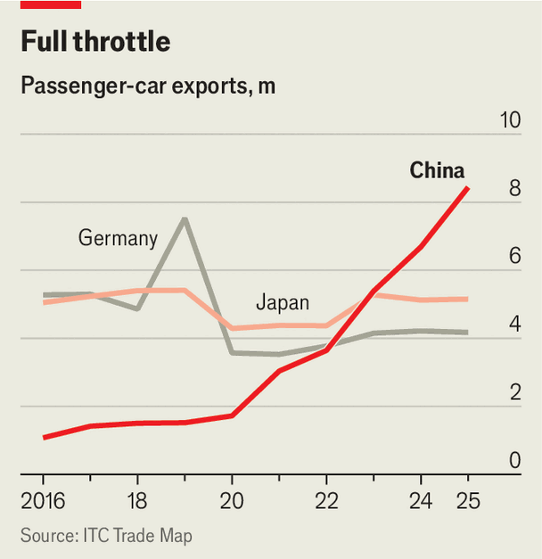
创新速度令人惊叹。“中国速度”已成为行业发展的“鼓点”，梅赛德斯-奔驰CEO奥拉·卡伦纽斯（Ola Kallenius）如此表示。传统行业的车型研发周期——新车型通常需要40至80个月——如今显得格外缓慢。以电动汽车（EVs）为核心的生产流程，结合垂直整合模式及更积极的软件升级改进策略，使得中国车企最快仅需24个月即可完成新车开发。外国汽车所搭载的技术往往比中国竞争对手的车型落后两到三年。传统车企已开始重塑业务模式。大众汽车CEO奥利弗·布卢姆（Oliver Blume）表示，为全球市场设计欧洲车型的时代已经过去。大众已在合肥新建的庞大研发（R&D）中心加速开发新车，其效率比欧洲快30%。■
这些车型不仅将在中国市场销售，还将进入部分海外市场。梅赛德斯-奔驰的Kallenius先生表示，创新速度必须在全球范围内扩散。即便雷诺公司并不在中国销售汽车，也已开始利用中国加速创新：其最新推出的Twingo车型虽在法国设计、欧洲制造，但研发工作在中国完成，以节省时间和成本并获取技术诀窍。为在电动车领域实现追赶，外国车企还寻求与中国企业合作。大众汽车今年仅在中国市场就将推出20款新车，已与本地车企小鹏汽车及自动驾驶初创公司Horizon Robotics达成合作。■
丰田计划于2027年在上海附近新建工厂，推出其高端品牌雷克萨斯的电动车型。该公司正与两家中国科技巨头华为（Huawei）和腾讯（Tencent）合作，这两家公司均开发汽车软件，同时与Momenta（地平线机器人竞争对手）及小米（Xiaomi）展开合作，后者拥有自身快速增长的电动汽车业务。宝马和日产也已与本地企业达成合作。关于更多合作的传闻层出不穷。梅赛德斯-奔驰据称计划使用中国最大汽车制造商吉利（Geely）的整车架构，在本国独立于欧洲业务开发小型电动车。就连美国车企也开始与中国企业合作。福特据悉正与吉利探讨技术共享及在福特欧洲工厂生产车辆。这些努力能否奏效？■
高德纳咨询公司（Gartner）的佩德罗·帕切科（Pedro Pacheco）警告称，所谓“中国速度”并非万能公式，而是一种思维方式，要复制这种模式将非常困难。这种速度源于一种长工时文化，以及自诞生之初便围绕软件赋能电动车（EV）构建的产业体系。重组那些依赖数十年燃油动力和机械工程的传统车企将面临巨大挑战。布莱姆先生补充道，大众汽车（VW）永远无法达到中国初创企业的速度，因为其始终不会在安全性和测试环节妥协。若处理不当，对其声誉造成的损害可能十分严重。瑞银集团（UBS）的帕特里克·胡梅尔（Patrick Hummel）认为，拥抱中国技术、供应链和生产方式并将其推向全球并无不妥，前提是外国车企不应被“逼到乘客座位”上。■
但正如中国汽车洞察（China Auto Insights）的图乐（Tu Le）所言：丰田依靠华为及其他中国企业的技术打造新车，现在又能提供什么？行业分析师费利佩·穆诺兹（Felipe Munoz）指出，雪佛兰试图通过在与上汽集团（SAIC）的合资企业生产的电动车上使用自家品牌，重振南美市场销量，此举可能在损害美国品牌的同时，助长竞争对手的崛起。这凸显了寻求与中国企业合作所面临的长期风险，这些企业正日益在海外市场与传统车企展开竞争。例如，小鹏正在欧洲快速扩张，小米则计划明年进军欧洲市场。存在一种危险，即外国传统车企可能无法从正在通过授权费资助的潜在竞争对手那里获得最新、最先进的技术。■
此外，过度依赖合作伙伴关系可能带来难以摆脱的依赖风险。另一家银行Jefferies的Philippe Houchois认为，外国汽车制造商可能在未来有意减少与中国企业的合作。但除非传统汽车企业能成功转型为软件企业，否则这一目标将难以实现。Blume先生表示，大众的目标是成为“全球领先的科技企业”，但其Cariad软件部门却进展不顺。这正是面临的挑战。为避免在电动车领域彻底落后于中国竞争对手，传统汽车制造商可能别无选择，只能寻求合作。但这样做将使他们失去定义未来汽车行业关键领域的专业知识，最终可能沦为最担心的对手的棋子。■
要追踪塑造商业、工业和技术趋势的动态，请订阅我们的全球商业周报（仅限订阅者）■
§052 航空业正面临航空燃油供应日益减少的困境 商业航空 怒火中烧原题：Airlines are grappling with dwindling supplies of jet fuel · 板块：Business · 栏目：商业
一架商业喷气式飞机以500节（575英里/小时）的速度疾驰而过 而一艘油轮以15节的速度缓慢航行 两者决定了从波斯湾到欧洲的航程时间 无论是几小时还是几周 两者之间的差异掩盖了其根本联系 霍尔木兹海峡近完全关闭 阻止了航空燃油及其提炼原料原油从海湾外运 导致价格迅速攀升 自与伊朗冲突爆发以来 为飞机加油的成本因此大幅上涨（见图表） 这已经让一家企业蒙受损失 ■
美国廉价航空公司Spirit Airlines（精神航空）在破产保护下于5月2日停止运营。其财务因与大型网络航空公司的日益加剧的竞争而陷入困境，最终在燃料成本上涨的压力下崩溃。其他航空公司则提高了机票价格，增加了燃油附加费，并取消了那些不再盈利的航班。削减航班的包括欧洲的汉莎航空（Lufthansa）和法航-荷航（Air France-Klm）、美国的联合航空（United）和达美航空（Delta），以及东南亚的越捷航空（Vietjet）和亚航（AirAsia）。据数据提供商Cirium称，4月下旬全球5月计划航班量减少了13000架次。然而，根据投行高盛（Goldman Sachs）的预测，今年夏季的航班数量仍预计较去年增长3-6%。这与航空燃油的供应情况显然不符。■
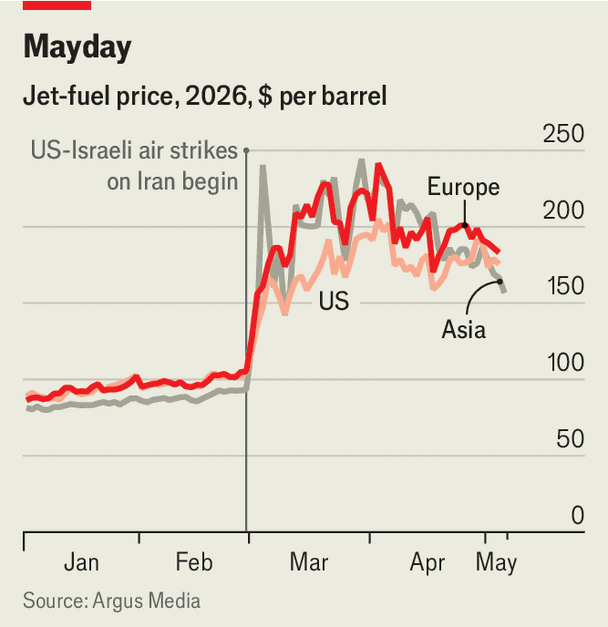
根据法国巴黎国民银行（Société Générale）的数据，2025年原油需求量平均为每天780万桶（b/d），其中约200万桶/日为国际交易量，其中36万桶通过霍尔木兹海峡运输。该银行指出，亚洲炼油厂若依赖海湾原油生产航油，可能在5月造成额外80万桶/日的供应缺口。两者合计约占总需求的15%。为何供需失衡与航班扩编之间存在脱节？航空咨询公司Aviation Advocacy的安德鲁·查尔顿解释称，航空公司最不愿改变的是“乐观预期”，因为它们需要持续销售机票以维持现金流。但短缺最先冲击哪些地区仍不明朗。作为全球最大航空市场，美国整体仍应保持充足供应。该国是主要石油生产与炼制国，但并非完全免疫。■
美国西海岸股市下跌，该地区不连接东岸的航空燃油管道网络。该地区进口占全国供应量的近五分之一，其中85%来自韩国，而韩国目前正面临墨西哥湾原油流失的困境。欧洲和亚洲受影响程度不均，欧洲每日消耗160万桶航空燃油，进口约三分之一的需求，其中四分之三来自海湾地区。然而英国进口约占需求的65%，希腊和荷兰却是净出口国。亚洲的前景同样参差不齐。中国是主要出口国，但贸易限制可能使澳大利亚和越南面临短缺，除非他们从其他地区采购航空燃油。库存水平也存在显著差异，欧洲的情况便是一个例证。■
整个欧洲大陆的商业储备量为38天，若计入政府储备则增至57天。但英国没有战略储备，目前航油储备仅够维持29天，据高盛集团指出。葡萄牙的储备量已降至23天，这是国际能源署（IEA）认为需开始实施配给的临界点。自战争爆发以来，贸易流向的变化进一步加剧了局势的复杂性。高油价促使美国炼油厂开始增加航油产量，该国海运出口量增长三成五，达28万桶/日。其中11万桶/日平均运往欧洲，较此前微乎其微的水平显著上升。随着欧洲航空公司愿意支付更高价格，美国对亚洲的航油出口已几乎停止。■
区域航空运输企业或许能通过印度炼油厂获得一些缓解，因为这些炼油厂无法向欧洲客户供货，原因在于其原料依赖被制裁的俄罗斯原油。但印度政府可能限制出口。随着繁忙的夏季航季临近，谁的假期会因航空燃油短缺而受到影响，尚难以预料。霍尔木兹海峡重新开放将带来一丝希望，但恢复正常贸易仍需时间，尤其是因冲突导致的基础设施损毁。若海峡长期关闭，航空燃油价格需上涨至足以抑制大量乘客出行的水平。不出所料，可能有几家航空公司会像Spirit一样退出运营。■
要追踪影响商业、工业和科技趋势的动态，敬请注册我们的每周专属订阅通讯《The Bottom Line》。■
§053 Not all oil giants are prospering from the Iran war原题：Not all oil giants are prospering from the Iran war · 板块：Business · 栏目：商业
并非所有石油巨头都从伊朗战争中获利
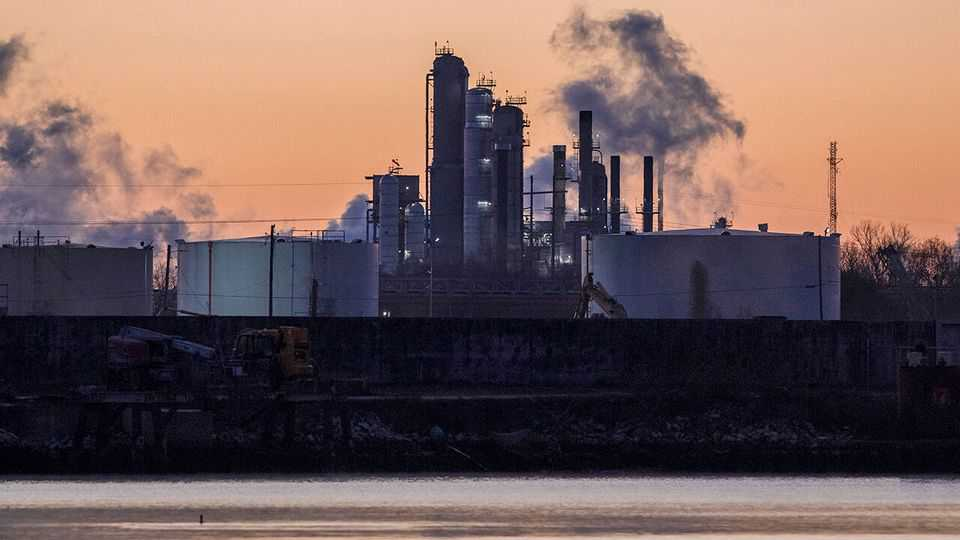
理论上，第三次海湾战争应为大型石油公司带来巨大利好。年初时，多数分析师预计布伦特原油（全球油价基准）2026年的平均价格将为每桶60美元。但第一季度结束时，布伦特原油价格已攀升至每桶118美元，精炼产品价格涨幅更为显著。由于大部分海湾石油被封锁在霍尔木兹海峡以西，美国、非洲和巴西的出口量均有所上升。因此，西方主要石油公司本应每桶原油赚取更高的利润，同时销售量也应增加。自战争爆发以来，英国巨头壳牌（Shell）的股价已上涨4%；而法国道达尔能源（TotalEnergies）、英国石油（BP）和意大利埃尼（Eni）等主要欧洲同行的股价则飙升14%-17%。
但美国两大巨头雪佛龙（Chevron）和埃克森美孚（ExxonMobil）的股价分别下跌了1%和2%。战争对西方主要石油公司的冲击呈现出明显差异。最近公布的第一季度财报显示，三大因素导致了这一结果：对冲头寸、交易收益以及生产资产的地理位置。截至3月31日的三个月内，雪佛龙和埃克森美孚的净利润分别为22亿美元和42亿美元，同比分别下降37%和46%。这些剧烈下滑主要源于会计上的虚增。石油和天然气销售通常在交付前数周或数月就已确定。为防范价格波动，这些公司会购买对冲合约——当油价在合约期间下跌时，合约会支付差价。当油价飙升时，这些对冲合约的价值会缩水，导致账面亏损。在该季度，雪佛龙和埃克森美孚的账面亏损分别达到29亿美元和39亿美元。这些亏损将在销售完成时通过更高的收入抵消。■
但美国的规则要求企业必须立即确认对冲损失，而非在交货时。此外，美国生产商通常比欧洲同行购买更多价格保护措施。埃克森美孚和雪佛龙第一季度的对冲损失异常巨大，但如果油价持续上涨，对冲措施对它们的利润产生的压力将超过竞争对手。与此同时，欧洲企业仍在斩获交易利润，而美国企业尚未达到这一水平。由于无法像美国企业那样依赖国内生产，欧洲大公司数十年来一直在构建庞大的交易部门，雇佣数百名员工。这些交易部门不仅对冲货物，还买卖原油、精炼产品和天然气，以利用地区间及不同时点的价格差异。例如，英国石油公司每天交易约1200万桶原油，相当于其产量的近11倍。
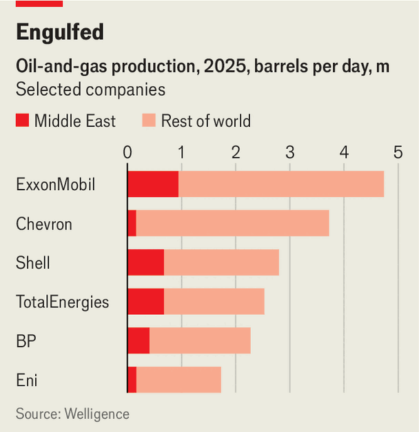
在波动的市场中，交易员通过利用价格差异可获得巨额利润。英国石油公司（BP）交易部门所在的板块第一季度获利22亿美元，较去年同期几乎为零大幅增长。道达尔能源（Total）交易部门则实现16亿美元收益，较2025年同期增长五倍。近年来，美国大型能源公司试图缩小差距。汇丰银行（HSBC）分析师金·富斯特（Kim Fustier）指出，海湾危机凸显了切诺基公司（Chevron）取得的进展。该公司正逐步将自身原油生产通过内部交易部门进行调配，而非依赖第三方贸易商，以确保原油流向利润最高的地区。公司预计下季度将有超过40%的原油由内部处理，是去年份额的两倍，这有助于维持亚洲炼油厂的利用率超过80%。相比之下，埃克森美孚（Exxon）似乎仍落后于其他公司。■
情况更加恶化的是，其运营正遭受霍尔木兹海峡封锁的严重冲击。约五分之一的石油和天然气产量位于中东地区，这在大型能源公司中属于最高风险敞口（见图表）。埃克森美孚第一季度原油产量相当于460万桶/日（b/d），较上一季度的500万桶/日有所下降。若海峡封锁持续至6月底，该公司称其产量将降至410万至430万桶/日。埃克森美孚和雪佛龙均表示，暂无计划增加在美国页岩盆地的投资以利用高油价。战争持续时间越长，大型能源公司的命运差异可能越明显。若特朗普禁止燃料出口，这种差距可能进一步扩大，分析人士认为若美国汽油价格升至5美元/加仑，这一禁令可能性上升。■
这将加深西德克萨斯中间基原油（West Texas Intermediate）相对于布伦特原油（Brent）的折扣，阻止国内炼油厂以全球价格销售，削减美国企业的上游和下游利润。特朗普通常支持大石油公司，但现在却显得绝望。美国大石油公司正日益焦虑地等待他的下一步行动。■ 要追踪塑造商业、工业和技术趋势的动态，请订阅我们的周度专属订阅者通讯《The Bottom Line》。
§054 eBay的惊人复兴原题：The remarkable revival of eBay · 板块：Business · 栏目：商业
eBay上第一个售出的商品是一支损坏的激光笔。1995年，创始人皮埃尔·奥米迪亚（Pierre Omidyar）列出该商品以测试在线拍卖的概念。随后竞拍大战一触即发，这支激光笔最终以14.83美元的价格成交。从这一微不足道的起点出发，eBay逐渐发展成为庞大的集市。到2005年时，其估值已接近800亿美元，约为竞争对手亚马逊的四倍。然而随着客户转向更大的竞争对手和细分市场平台，eBay的辉煌逐渐黯淡。但过去几年，eBay却出人意料地实现了强势反弹。仅看其第一季度的业绩便可见一斑：销售额同比增长17%。买家数量此前持续下滑，现已稳定在每年约135亿人次。投资者对此表示满意。■
eBay的股价自2024年初以来已上涨约150%。其热度飙升甚至吸引了视频游戏零售商GameStop的关注，这家深受散户投资者喜爱的企业近期正拓展收藏品业务，已提出以560亿美元收购eBay。eBay的复兴始于一位新任CEO。六年前，曾任职eBay的前高管Jamie Iannone（现为沃尔玛员工）重返公司执掌帅印。面对亚马逊和沃尔玛等竞争对手的挤压，eBay的市场份额逐渐流失——这些对手不仅提供海量商品，还依托物流网络实现快速配送，同时涉足细分二手市场，如时尚转售平台RealReal和运动鞋交易平台StockX。Iannone的应对策略是聚焦他所说的“eBay传统优势”，即二手、翻新及过季商品。■
这意味着eBay将重点放在少数几个“重点品类”上，包括收藏品、时尚和汽车零件，这些品类占平台总销售额的三分之一。在这些领域，管理层致力于提升客户信任度。借鉴RealReal等竞争对手的经验，eBay推出了多种鉴定高价值商品的方法。例如，一套《精灵宝可梦》卡牌或一只Gucci手袋，首先会被寄送到eBay的专家手中以确认其真伪。部分翻新商品现在也附带保修服务。eBay通过收购进一步拓展了重点品类。2024年，eBay收购了Goldin（收藏品市场）。次年，eBay收购了Caramel（汽车销售平台）。2月，eBay从Etsy手中收购了Depop（二手市场）。同时，eBay也简化了买卖流程。■
卖家对eBay的国际物流服务赞不绝口，该服务允许他们将出口商品发送至市场平台，平台则负责后续流程，包括报关单和关税处理。（买家通常承担费用。）人工智能工具协助创建商品信息。如今，高价卡片可存入eBay运营的特制恒温保险库，位于特拉华州，因此买家无需实际接收实物即可完成交易。为支持这些举措，伊诺内先生已削减全公司成本。eBay于2月宣布将裁员800人，相当于其员工总数的6%。业务复苏得益于eBay无法控制的外部因素。受疫情时期刺激支票推动，交易卡市场持续繁荣。二手服装需求也大幅增长，尤其是Z世代群体。
地缘政治的不确定性推动金价银价飙升，带动贵金属和纪念币销售。即便如此，eBay的复苏仍令人印象深刻。MoffettNathanson研究机构的Michael Morton指出，在线市场平台尤其难以扭转颓势：“一旦开始失去买家，卖家就会寻找其他销售渠道。”GameStop的CEO Ryan Cohen则面临更艰难的挑战，其公司最新季度营收同比下滑14%，电商持续侵蚀其业务。Cohen或许希望借助合并迅速拓展GameStop的线上业务，同时为eBay提供实体零售网点以吸引路人并作为分销网络。但此类交易难以实现：提出的收购价接近当前GameStop市值的五倍。■
如果科恩先生想要一笔划算的交易，他得另寻他处。■ 编辑注：本文已更新。要追踪塑造商业、工业和技术趋势，订阅我们的每周专属订阅简报“ The Bottom Line ”，关注全球商业动态。
§055 雅诗兰黛能否借美妆巨头并购重获新生原题：Can a beauty mega-deal save Estée Lauder? · 板块：Business · 栏目：商业
在高端化妆品领域，两家公司长期以来主导市场。大西洋西岸是法国欧莱雅集团，旗下拥有兰蔻（Lancôme）等奢华品牌，以及美宝莲（Maybelline）等药妆店常青品牌。大西洋东岸则是美国雅诗兰黛，旗下汇聚各类高端品牌，通常陈列于百货商店。然而近期，雅诗兰黛却显得有些落魄。这家美国公司市值曾于2010年飙升至160亿美元，2021年达到1330亿美元，但此后回落至310亿美元——仅为欧莱雅市值的七分之一。其2025年销售额为147亿美元，较四年前峰值下降17%，而整个美妆行业却呈现蓬勃发展态势。■
为追求焕新升级，雅诗兰黛正大手笔投入：据悉其正计划收购西班牙加泰罗尼亚美妆企业Puig，交易金额预计达60亿美元。这笔交易或许能为业务增添光彩，但难以解决其更深层的结构性问题。雅诗兰黛在2010年代的成功，很大程度上得益于中国高端化妆品需求的爆发式增长。其产品通过代购渠道在中国流行，消费者在海外批量购买（常在免税店）后转售国内牟利。坐拥大量现金的雅诗兰黛随即开启收购 spree，2016年收购了YouTube美妆博主喜爱的Too Faced和Becca Cosmetics两大品牌；2019年又拿下韩国热门品牌Dr Jart。然而，到那时，危机的苗头已悄然显现。■
2019年，中国当局因担忧消费者逃避进口税，开始打击代购活动，包括在海南免税港口，这是劳拉德（Lauder）最重要的销售目的地之一。疫情后中国消费情绪低迷加剧了公司的困境。与此同时，其早期的收购计划令人失望。Dr Jart在2025年实现的销售额为1.5亿美元，较2019年预估的5亿美元大幅下降。Becca Cosmetics于2021年关闭。阿里帕特纳咨询公司（AlixPartners）的林迪·费斯特伯格（Lindy Firstenberg）指出，问题之一在于劳拉德（Lauder）长期以来独立运营其品牌，将每个品牌视为“特殊珍宝”。这使得公司难以迅速适应不断变化的美妆趋势。劳拉德（Lauder）仍由创始家族控制，内部戏剧性事件使情况更加恶化。■
2024年，劳德集团高管简·劳德抱怨，她的表兄威廉（劳德董事会主席）过于支持长期担任CEO的法布里齐奥·弗雷达，认为她应该接任。尽管弗雷达最终辞职，董事会却任命了另一位内部人士斯蒂芬·德·拉法韦里。德·拉法韦里开始对这家美妆巨头进行重塑。在数十年来优先考虑百货商店的策略后，如今正转向电商平台如亚马逊和抖音商城，以及热门美妆零售商丝芙兰。公司同时裁减多达1万名员工，占总人数的六分之一以上。新战略初见成效迹象。5月1日，劳德集团宣布其第一季度营收同比增长2%。
但德·拉法维先生似乎急于夺回对欧莱雅的主动权，后者最近以40亿欧元（46亿美元）收购了奢侈品集团开云集团的美妆部门。与普伊格集团合作具有诸多优势：普伊格在欧洲和拉丁美洲市场表现强劲，而雅诗兰黛则在美洲和亚洲占据主导地位。雅诗兰黛七成营收来自护肤与彩妆，普伊格则有相似比例的收入来自快速增长的香水品类。然而这笔交易也可能成为分心之举。德·拉法维先生曾表示，公司需要更灵活地应对消费者偏好的变化，但过去收购并未带来显著成效。雅诗兰黛的管理层必须意识到，其面临的挑战远不止表面。■ 要追踪塑造商业、产业与技术趋势的动态，订阅我们的周度专属商业简报“The Bottom Line”。
§056 通勤的利与弊原题：The pros and cons of commuting · 板块：Business · 栏目：商业
有人问你是否后悔，很少有人会说：“我希望自己能多花些时间通勤。”
从家到工作地点往返通勤的时间通常既不轻松也不高效。它通常是例行公事，有时甚至令人不快：任何涉及大量交通或拥挤的通勤都很难让人喜欢。在流行文化中，单调性正是其核心。通勤变成了一种陷阱（《Exit 8》），一个窥探现实生活的窗口（《The Girl on the Train》），或对现代社会软弱的评论（《The War of the Worlds》）。新冠疫情让人们对无通勤生活有了体验机会，许多人因此爱上了这种生活。
■
当人们被问及理想的通勤时间时，答案往往不出意料地指向“更短”。全球各地的人们平均每天通勤时间约为一小时。但无论实际通勤时间多长，他们普遍希望将总时长减半。伦敦大学学院的乔纳斯·德沃斯去年发表的一项研究显示，这一现象在2000多名学生和教职员工中普遍存在。实际平均通勤时间高达单程54分钟，而理想时间则为31分钟。（理想时间因通勤方式而异：例如，乘火车通勤一小时的人，其理想时间远长于骑30分钟自行车的人。）长途通勤不仅对通勤者造成负担，也会给雇主带来成本。例如，它可能导致员工流动率上升。■
布朗大学的弗朗西斯科·桑特利（Francisco Santelli）和范德堡大学的杰森·格里索姆（Jason Grissom）合著的一篇论文，研究了田纳西州纳什维尔市公立学校教师的通勤时间。他们发现，单程通勤时间每增加5分钟，教师在学区内部转校的概率将上升0.8至1个百分点。通勤时间对工作效率也存在负面影响。加拿大央行（Bank of Canada）的肖鸿宇（Hongyu Xiao）及其合作者的一项研究显示，企业搬迁导致发明人通勤距离每增加10公里，其专利数量就会减少5%。这一下降趋势背后的原因尚不明确，但一种解释是人们在工作场所花费的时间变少了。没有人希望将更多生命时间用于通勤。但即便长途跋涉也可能带来益处。■
例如，在他的研究中，德沃斯（De Vos）还询问受访者能接受的最大通勤时间。结果显示，这一数值平均比他们当前的通勤时间更长，这表明人们已意识到忍受漫长通勤的潜在好处：更低的住房成本、更优质的本地生活配套以及更丰富的雇主选择。哥本哈根商学院的伊斯米尔·穆拉利奇（Ismir Mulalic）指出，尽管交通技术经历了巨大变革，但全球平均通勤时间（一小时）却保持相对稳定。他回忆起一项由他合著的研究，探讨企业搬迁对员工的影响；令他意外的是，一些突然获得更短通勤时间的员工，反而因“美好当下”而选择搬离原居地，住得更远。通勤本身也可能带来额外回报。■
一些学者热衷讨论通勤是“临界空间”，这个浮夸的术语却真实地反映了某种现实：往返办公室的通勤是开启工作日或结束工作日的便捷方式。骑自行车和步行等主动出行方式与坐在汽车里相比，更与更高的幸福感相关联。企业不应忽视员工通勤问题，许多公司提供显性和隐性补贴以减轻通勤成本，从财务援助到停车位。混合办公和弹性工时也能缓解通勤压力。但改善通勤时间的最大潜力仍掌握在政策制定者手中，通过改善公共交通和增加住房供应。若通勤时间反映个人偏好，企业则需特别关注这些偏好突然变化时的情况。■
这意味着一个特定事件。由穆拉利克（Mulalic）教授合著的一篇论文分析了丹麦2003年至2013年全职人口的数据显示，女性通勤时间越长，生孩子后换工作的可能性是男性的几倍。（男性则没有这种现象。）人人都说希望缩短通勤时间，但新妈妈们却真正如此。■ 请通过我们的Bartleby新闻简报深入了解职场世界。每周我们的白领预言家都会探讨办公室生活的种种困扰。
§057 Only one of Berkshire Hathaway and SoftBank can survive原题：Only one of Berkshire Hathaway and SoftBank can survive · 板块：Business · 栏目：商业
对于两家体现资本主义不同愿景的企业而言，伯克希尔哈撒韦与软银集团却有着诸多相似之处。两者都是难以归类的混合体，既包含运营型综合企业，又兼具投资基金的属性。两家公司均由一位以名字为人所知的独裁者创立。它们也均未受到银行分析师和热衷投资者的严格审视。两家公司彼此都将对方的资产负债表视为异端。在沃伦·巴菲特（Warren Buffett）担任首席执行官（尽管未卸任董事长）期间，伯克希尔哈撒韦积累了近4000亿美元现金，却对其用途毫无头绪。
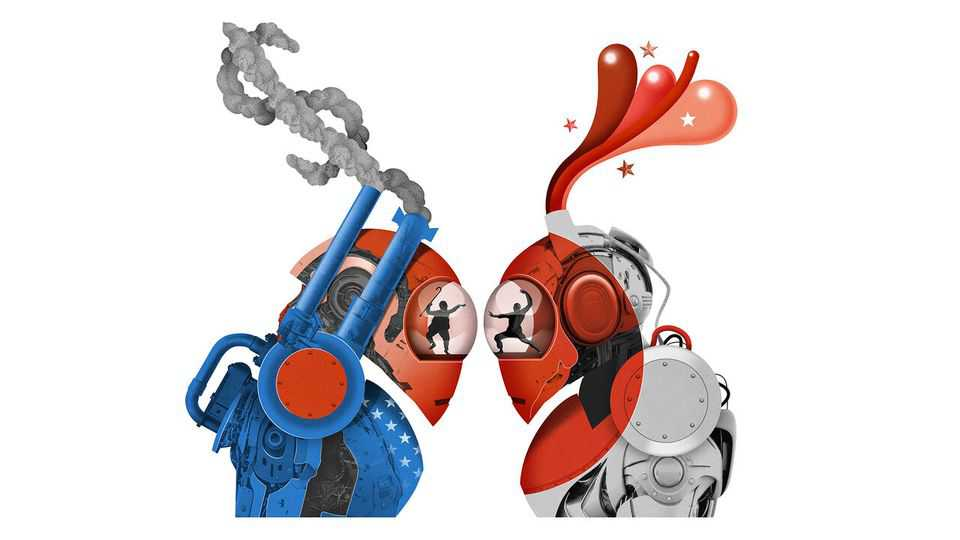
只有1929年、1987年或2008年那样的崩盘才能证明这种克制的不作为是正确的。相比之下，软银集团（SoftBank）则因创始人孙正义（Masayoshi Son）充满奇思妙想而拥有大量创意，却资金匮乏。这家企业一旦借到钱，便会立即投入硅谷正在进行的人工智能热潮。对孙正义的这家负债累累的公司而言，一场崩盘可能意味着终结。这对公司如同阴阳两极：对伯克希尔（Berkshire）而言令人却步的，对软银却充满吸引力。在互联网泡沫时期，巴菲特（Mr Buffett）致力于以低价收购拥有不可撼动“护城河”（moats）的企业，他坚持只投资“如砖块、地毯、隔热材料和油漆等传统行业”。而孙正义则热衷于投资高技术企业，无论其估值如何，他因此在雅虎（Yahoo）和阿里巴巴（Alibaba）等公司中建立了声誉。■
二十年后，巴菲特再次为市场回调后可能出现的廉价资产做准备，正如孙正义（Son）驻扎在旧金山湾区，像休假的水手一样挥霍他的巨额“愿景基金”（Vision Fund）。两家公司如今都已演变为自我嘲讽的模仿者。伯克希尔的现金储备如今已达到其市值的40%，是过去二十年平均值的两倍。近年来，伯克希尔几乎未回购任何自家股票，可能因为它认为这些股票被高估，且自1967年以来从未支付过股息。伯克希尔对硅谷的发展大多置若罔闻，其最大持仓是苹果公司，这家罕见的科技巨头并未将全部现金流用于建设数据中心。结果是表现不佳。■
格雷格·阿贝尔（Greg Abel），伯克希尔·哈撒韦（Berkshire Hathaway）的继任首席执行官，在5月2日向股东发表了首次演讲。过去一年中，伯克希尔的股价相较市场下跌了40个百分点（与1999年同期表现相当）。与此同时，软银（SoftBank）因在央行宽松货币政策下过度投资初创企业而蒙受巨大损失：其最著名的投资失误是WeWork。但其对英国芯片设计公司ARM公司的投资已完全弥补了这一损失。2016年，软银以310亿美元收购ARM公司，如今该公司的估值已达到2500亿美元（软银持有87%股份，其余股份在纳斯达克上市）。孙正义（Masayoshi Son）的新赌注是OpenAI。到10月，作为OpenAI第二大外部股东（仅次于微软），软银将向该人工智能技术公司注资650亿美元，并承诺每年投入30亿美元用于OpenAI产品的开发，这可能占该人工智能实验室收入的10%。■
今年软银还将支付50亿美元收购瑞士工程公司ABB的机器人部门，以及40亿美元收购数据中心企业DigitalBridge。孙正义如何偿还这些债务让一些贷款方感到困惑，也让另一些人感到不安。其债务违约保险成本已大幅攀升。其主营业务现金流不足以覆盖债务。出售资产或许能缓解压力，但软银已将家族珍藏（包括去年10月售出最后一部分英伟达股票）变现，如今不得不拆解锈迹斑斑的车库屋顶，变卖金属。其持有的T-Mobile（电信公司）、Grab（外卖平台）和滴滴（中国网约车平台）股份价值，甚至比一年前还低。据《金融时报》报道，软银还在考虑另一次股票上市，这次将由一组模糊的、与人工智能相关但松散关联的业务组成。■
最可能的答案是增加债务。但资金从何而来？这家企业目前正面临严峻的偿债压力：软银为投资OpenAI而借入的400亿美元“过桥贷款”将于明年3月到期。向日本零售投资者发行债券的成本已高于以往。软银称其债务水平尚可，但其公布的“贷款价值比”数据更像是个幻象，因为该数据未计入另外280亿美元的借款，这些借款来自软银持有的Arm公司股票及其日本电信业务的抵押。 （该公司还计划进一步从其在OpenAI的股权中借款100亿美元。）伯克希尔与软银堪称彼此国家的“流亡者”。如今伯克希尔在日本最为活跃，已累计持有价值450亿美元的投资组合。它加入了由美国积极投资者和价值投资者组成的“撤离大军”，这些投资者认为日本股市估值过高且集中度偏高。■
软银将全部身家押注硅谷，却继承了一种与之相反的冒险传统。日本银行始终试图染指华尔街；最优质的美国皮夹克产自日本。唯有软银的赌注中能有一项成功。若伯克希尔最终崩盘，这个过程将缓慢而漫长。目前，阿贝尔先生仍受巴菲特先生的投票权保护。但一个令人不安的事实是：比打造一家像伯克希尔这样的企业更难的，是将它传承给下一代。若市场持续上涨——正如过去数年所见——阿贝尔先生最终必须将伯克希尔庞大的现金储备以股息形式返还，或彻底拆分公司。相比之下，软银的瓦解将是一场公开的闹剧。若Arm（英国半导体公司）价值暴跌，或OpenAI未能成功上市（这似乎愈发可能），孙正义的公司将难以偿还债务。■
过度节俭与冒险精神是自由市场的永久特征；那些最体现这些特征的企业却并非如此。■ 订阅《经济学人》的读者可注册我们的Opinion新闻简报，汇集了我们最佳的社论、专栏、客座文章及读者来信。
§058 欧盟希望释放经济潜力原题：The EU wants to unshackle its economy. For real this time · 板块：Finance & economics · 栏目：财经
欧盟是经济巨人。其27个成员国合起来构成世界第二大经济体，仅次于美国，同时也是第三大内部市场，仅次于印度和中国。欧盟拥有全球最知名的品牌，从阿迪达斯（Adidas）到飒拉（Zara），以及关键工业公司，如生产光刻机的阿斯麦（ASML），其设备在人工智能芯片制造中至关重要，还有蔡司（Zeiss），其镜头对阿斯麦的设备不可或缺。然而，如今这个巨人却显得迟钝。过去十年间，欧盟的GDP和股市表现远远落后于美国（见图表1和2）。
4月欧盟服务部门活动降至62个月低点。近期导致疲软的冲击并非欧盟自身所致：新冠疫情、俄罗斯入侵乌克兰以及如今美国对伊朗的战争。但欧盟及其成员国也因过度监管企业（见图表3）和未能妥善整合所谓单一市场而自食其果。2014年至2024年间，欧盟委员会（该集团执行机构）考虑了1000多项提案，其中660项被采纳。这些措施迫使即便是中小型企业也需监控其数据和全球供应链，以应对各类数字、环境及人权方面的违规行为。
欧盟官方机构欧洲统计局（Eurostat）估算，报告要求和其他行政文书累计使欧洲企业每年损失1500亿欧元（1760亿美元），相当于欧盟GDP的近1%——这还不包括因企业家被繁琐程序劝退而错失的创新与增长。若新规则未经控制，可能再增加800亿欧元成本。国际货币基金组织（IMF）估算，企业在欧盟境内跨境销售商品和服务的成本相当于分别面临44%和110%的关税。2025年的一项调查显示，德国企业过去三年为处理日益繁琐的行政手续，不得不额外雇佣32.5万名员工。受两位前意大利总理提供的两份关于欧洲竞争力（或缺乏竞争力）的重要报告推动，欧盟正喊出“够了！”
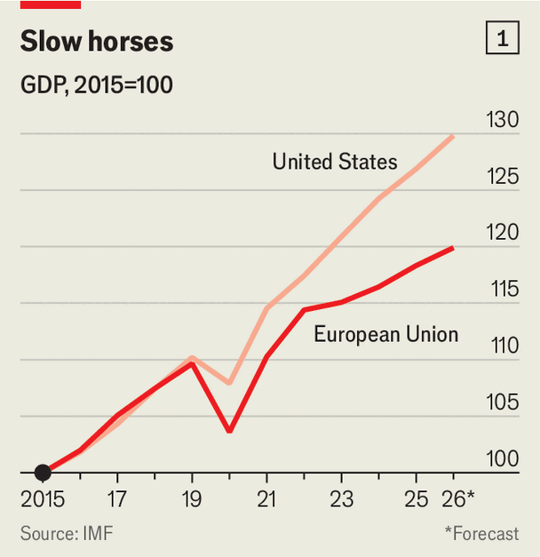
三月，27个成员国政府共同承认，深化单一市场是“所有成员国和欧盟机构共同肩负的紧迫责任”。“不能只是小修小补”，欧盟金融服务业委员玛丽亚·路易斯·阿尔布开克表示，“我们需要根本性变革。”一位参与推动变革的欧盟官员则更直白地指出：“我们必须消除过去五年中的种种弊端。”这并非欧盟首次为经济停滞而忧心忡忡。此前的改革努力往往始于“令人畏惧的欧洲工作组”——正如美国财政部部长斯科特·贝森特所嘲讽的那样。不过，如今情况已不再仅限于经济领域。■
在俄罗斯的复仇主义、唐纳德·特朗普（Donald Trump）领导下的跨大西洋分裂以及中国商业扩张的背景下，经济实力突然成为安全乃至地缘政治生存的关键。乌尔苏拉·冯德莱恩（Ursula von der Leyen）在2019-24年首次担任欧盟委员会主席时曾热衷于繁复的官僚程序，如今却成为改革的坚定支持者。冯德莱恩的委员会正通过两种方式推进改革。其一是保持规则实质的同时简化程序。目前有十项“综合法案”正在制定中，每项法案都聚焦于特定领域以减轻企业负担。其中一项已通过的法案规定，年进口量低于50吨的钢铁或化肥等高碳产品企业，可免除欧盟对外国商品中隐含碳排放的税收。■
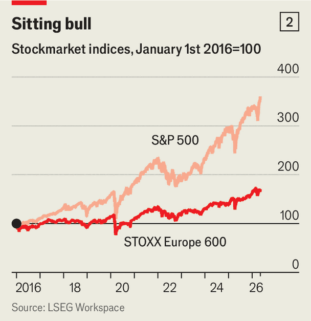
另一项规定允许员工不足1000人、年销售额低于4.5亿欧元的企业免除部分环境风险报告义务。同时，员工少于5000人、年营收低于15亿欧元的企业也不再需要追踪其全球环境足迹及人权影响。若欧盟委员会的提议得以实施，雇员最多750人的企业也将无需保留大量客户个人数据处理的详细记录。欧盟官员估算，此类简化措施可使企业年行政成本减少375亿欧元。布鲁塞尔更大的期待是，这仅是开端，未来将有更深入的改革。潜在收益可能十分可观。■
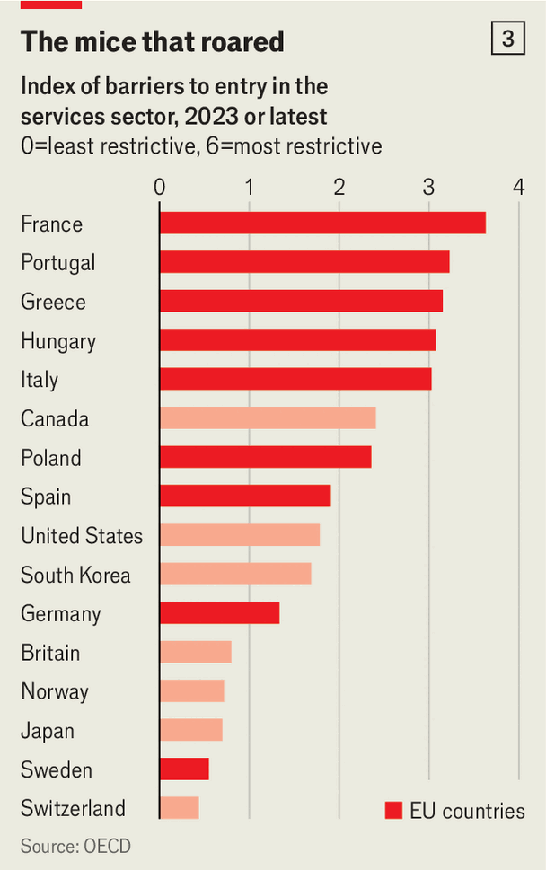
ifo研究所（ifo Institute）分析了2006至2020年间全球27项行政简化措施，发现平均使人均GDP提升4.6%。第二阶段战略旨在实现欧盟未竟的愿景——打造真正的泛欧市场。国际货币基金组织（IMF）预计，通过更完善的监管和更深层次整合，欧盟未来十年GDP或增长3%——这对过去十年年均增速不足1%的欧洲大陆而言，堪称重大突破。重启“服务通行证”是显而易见的举措。此类通行证将允许获准在某一成员国提供服务的企业，获准在全欧盟范围内开展业务。欧盟正推动电信服务领域的通行证提案，其中多数服务目前由各国自行监管。■
另一项具有潜力的政策是阻止各国对欧盟规则进行“镀金”，即欧盟通常设定联盟整体目标，但将细节执行交由各国政府完成。尤其是在单一市场领域，欧盟委员会决心在法律和政治允许的范围内，制定详尽的法规，不留任何国家镀金的空间。更具野心的构想是创建真正意义上的全欧洲公司。由于欧盟条约将税收、劳资关系等公司法核心问题的决定权留给成员国，任何在其中一国注册的公司一旦跨境经营，都将面临诸多麻烦。经过数年智库和政策专家的不断呼吁，欧盟委员会终于推出了一套简化版的“第28号制度”，与27个成员国的本国框架并行存在。该制度允许企业以不到100欧元的费用在线注册，且无需最低注册资本。■
符合研发投入高、创新能力强等标准的初创企业可享受欧盟范围内的股票期权计划、简化版全流程在线破产程序等政策红利。欧盟委员会在金融领域展现出前所未有的简化与整合决心。统一欧盟分散的资本市场有望降低企业融资成本、鼓励对高风险创新项目的投资并提升投资回报率。拟议的改革将减少金融机构的监管束缚，使金融基础设施更不易出现堵塞问题。跨境投资基金的运营将因此更便捷且成本更低，目前这类基金在每个运营成员国设立成本高达2万欧元至6万欧元，每年行政费用更是高达40万欧元。■
交易场所的规则将被协调统一，更多监管权力将集中于欧洲证券市场监管局（ESMA）手中。反繁文缛节的政策能否奏效？要达到美国水平的整合，除非欧盟成为更加联邦化的实体，否则不可能实现，而这种转变缺乏政治意愿。许多阻碍更深入经济一体化的障碍，超出了欧盟官员的权力范围。成员国不太可能放弃对债务和股权税收处理方式或劳动市场监管的主权。企业试图在欧盟范围内销售时承担的成本，部分源于语言、文化和法律传统的差异，而非监管规定。即便改革和整合程度再高，若欧洲人拒绝将储蓄投入比银行存款风险更高的投资，资本市场仍将保持低迷。就连有限的改革也可能遭遇阻碍。■
4月28日，欧盟委员会、欧洲议会和各国政府就人工智能相关“一揽子协议”的讨论破裂。未来的关键产业可能被迫继续适用现有的、限制性较强的规则。类似的服务护照和28号制度曾尝试过，但成效甚微。“我们支持这一方案，”瑞典科技产业游说团体TechSverige（TechSverige）的弗雷德里克·桑德（Fredrik Sand）表示，他指的是泛欧洲初创企业，“但这不是万能药。”他说得没错。不过看到欧盟能精准出击，还是令人欣慰。■ 更多关于经济、金融和市场的深度分析，请订阅我们的周度专属简报Money Talks。
§059 UniCredit对德意志商业银行低价收购引发担忧 金融与经济原题：UniCredit’s lowball bid for Commerzbank causes consternation · 板块：Finance & economics · 栏目：财经
此次报价并非意外。5月5日，意大利第二大银行UniCredit向其尚未持有的德意志商业银行全部股份提出收购要约——这早在3月中旬其承诺时就已明确。截至6月16日，德意志商业银行股东可将每1股换为0.485股UniCredit股份。这一提议并不吸引人：隐含价格较5月4日收盘价低逾8%。此次报价将整家银行估值定为35亿欧元（41亿美元）。为何UniCredit做出如此吝啬的报价？其管理层称这是务实之举。■
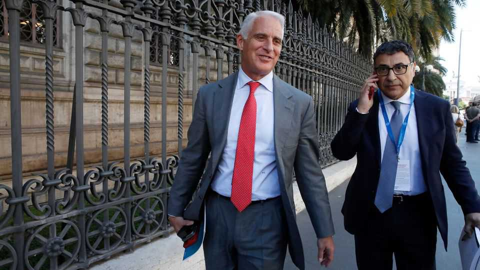
联合信贷银行（UniCredit）的收购提议抢先一步，规避了德国法律中的一项规定，即持有上市公司超过30%股份的股东必须向其余股东提出收购要约。他们设想了两种可能的发展情景。一种是维持现状，巴克莱银行（Barclays）分析师Paola Sabbione指出，联合信贷银行目前持有德意志银行（Commerzbank）近30%的股份，若计入总回报互换（Total-Return Swaps，一种将信用风险与市场风险分离的衍生品合约），其实际控制比例已达到36%。另一种则是实现完全控制，这正是联合信贷银行首席执行官Andrea Orcel的最终目标。联合信贷银行已拥有另一家德国主要银行——HypoVereinsbank（HVB），若与德意志银行合并，其营收将占德国市场约9%。两家银行将形成互补：德意志银行在德国中部地区实力强劲，而HVB则在巴伐利亚州及南北地区占据优势。■
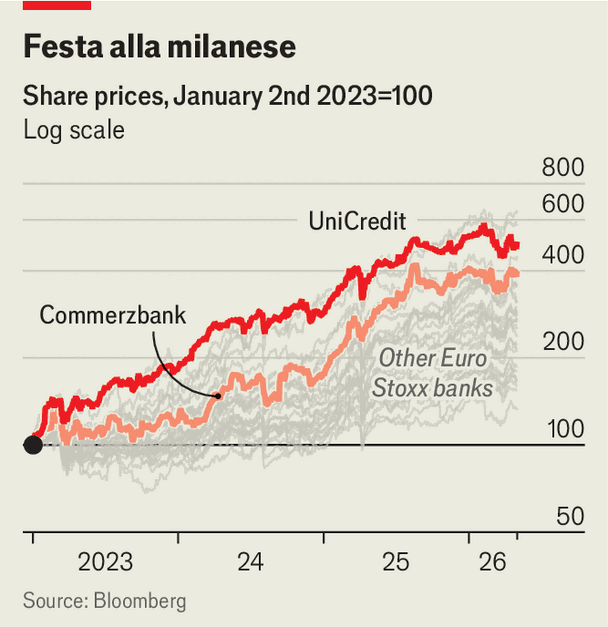
萨宾诺女士认为，向德意志银行股东提供溢价而非折价更有道理。但奥塞尔可能押注德意志银行股价会下跌，待其收购要约到期后，他能在公开市场以低价购入股份。尽管自2024年9月他首次购入9%股份以来，股价已近翻倍，这得益于强劲业绩、股份回购和慷慨分红（见图表）。奥塞尔还表示可能“适度”提高要约条件。与其试图讨好目标对象，奥塞尔选择了进攻姿态。4月20日，联合信贷银行发布了一份34页的德意志银行改革计划，充斥着“脆弱”、“表现不佳”、“风险高”和“估值过高”等措辞。
计划指出，若不合并，德意志银行将变成一家更弱的银行，优先发展非核心市场的增长，而与联合信贷银行合并后，它将成为一家更强大的银行，以德国（尤其是德国经济支柱的中型企业）和波兰为中心。该计划承诺，德意志银行的净利将在2028年提升至约51亿欧元，是去年的两倍，远高于当前预测。名为“新篇章”的计划在德意志银行位于法兰克福的53层大楼内遭遇强烈反对。“他们基本上告诉我们，我们的商业模式是垃圾，”一名内部人士表示。奥塞尔（Mr Orcel）称德意志银行的海外业务“规模过大、分散、风险高且运营复杂”。德国银行副首席执行官迈克尔·科茨鲍尔（Michael Kotzbauer）反驳称，“德意志银行在超过40个国家运营着全球高效分支机构网络。”■
该银行成立于1870年，总部位于德国最大港口汉堡，旨在促进国际贸易，至今仍是中型企业的国际业务首选银行。其全球网络中，近五分之三的营收来自企业客户。Commerzbank的管理层在第二大股东德国政府支持下，后者持有该银行12%的股份，这是2007-09年全球金融危机清理工作的遗留部分。“对系统重要性银行如Commerzbank的敌意收购，尤其是激进的收购行为，对德国政府而言是不可接受的，”财政部长办公室发言人表示。Orcel的激进策略也惹恼了监管机构。4月24日，德国金融监管局（BaFin）命令意大利方面停止发布将Commerzbank描述为“被忽视、不确定、目光短浅”的煽动性广告。
5月8日，德意志商业银行（Commerzbank）将公布其季度财报及至2030年的独立战略。为了保持其他投资者的支持，首席执行官贝蒂娜·奥尔洛普（Bettina Orlopp）必须在德国经济陷入困境之际持续交出亮眼业绩。她曾表示自己的指导原则是“保持冷静，继续前行”。但若其最大股东按自己的意愿行事，她将失去这个机会。■ 更多关于经济、金融与市场的深度分析，请订阅我们的周度专属简报Money Talks。
§060 糟糕的政府统计数据可能让经济损失数十亿美元原题：Bad government statistics can cost the economy billions · 板块：Finance & economics · 栏目：财经
美国政府统计官员的工作并不轻松，不仅在鸡尾酒会上如此，在工作中说服人们与他们交流也面临困难。十年前，近九成美国人被询问时同意填写《当前人口调查》（Current Population Survey），该调查每月向约6万户家庭发放问卷，询问包括就业状况在内的多项内容。如今，不足七成受访者愿意配合（见图表1）。对于试图覆盖3,700户家庭的《消费者支出调查》（Consumer Expenditure Survey），回复率从68%降至40%。
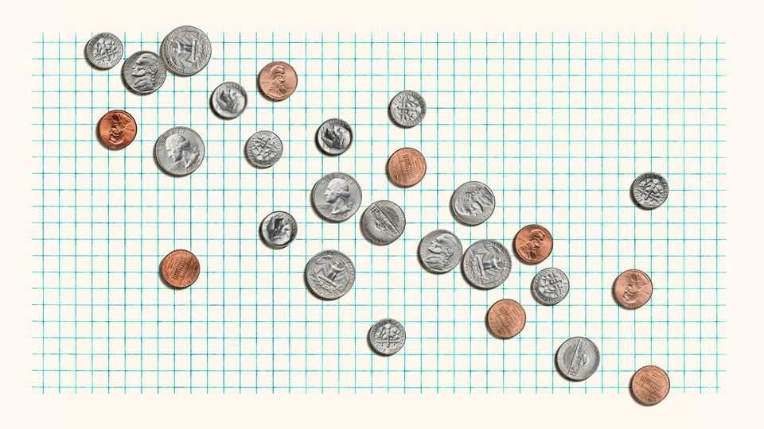
低参与度是个问题，因为这些调查远不止是满足山姆大叔对民众的好奇心。企业主和投资者依赖准确的GDP增长、失业率、通货膨胀等数据来管理企业并分配资本。当信息变得不可靠时，投资决策将变得更加困难。一些决策可能会被推迟，从而对经济造成潜在拖累。但这种拖累究竟有多大？斯坦福大学的尼古拉斯·布洛姆、前劳工统计局（Bureau of Labour Statistics，BLS）局长埃里卡·格罗申（现为康奈尔大学教授）、美国企业研究院（American Enterprise Institute）的邓肯·霍布斯和迈克尔·斯特兰恩在一篇新工作论文中给出了估算。■
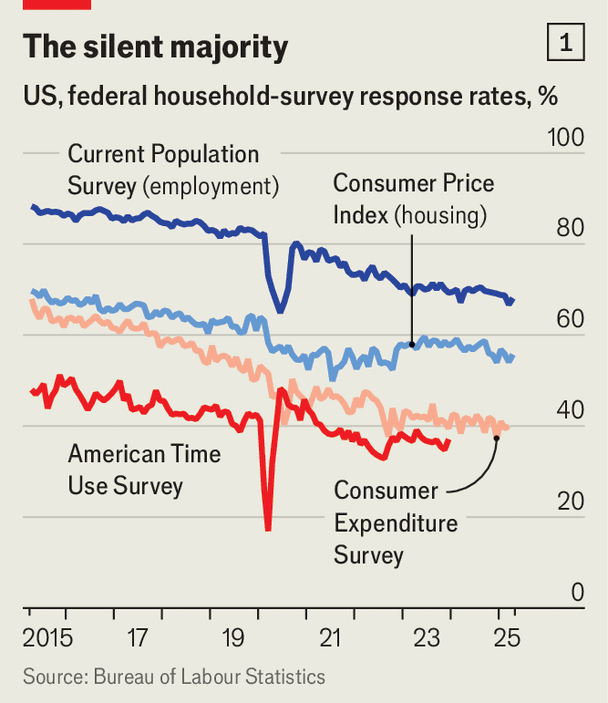
保持对官方统计数据完整性和质量的信任，作者称此举能为美国劳工统计局（BLS）带来约25美元的经济效益，每投入1美元。该机构年预算达7亿美元，负责多项关键数据。为得出这一结论，四人小组分析了BLS近期一段不光彩的历史。2025年8月1日，唐纳德·特朗普解雇了由其前任乔·拜登任命的BLS局长埃里卡·麦克恩特弗。总统在无证据的情况下指控BLS大幅下调近期就业数据是“为让共和党及我本人看起来糟糕而操纵数据”。事实上，许多观察者认为正是特朗普的肆意解雇行为显得令人不齿。■
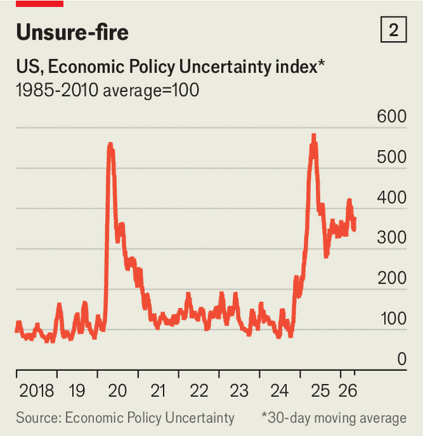
过去七天内，经济政策不确定性指数（EPU）平均值较前一周飙升50%。该指数追踪美国报纸每日刊登的提及政策不确定性的文章数量。即便与2025年4月特朗普贸易战引发的混乱以及他过去两个月在伊朗的行动造成的动荡相比，此次跃升也显得格外明显（见图表2）。根据布洛姆先生（Mr Bloom）此前与其他同事共同研究的EPU对商业投资、工业生产及就业的影响，作者估算此次跃升使美国GDP减少逾1000亿美元（0.3%），非农就业人数减少16.8万个（0.1%）。部分影响可能并非直接源于麦克恩塔弗女士（Ms McEntarfer）被解雇，其中一部分或归因于大规模就业数据调整本身。■
同一天，一名美联储理事的非相关辞职可能也起到了一定作用。但即便控制了这些变量，研究人员仍认为麦肯塔弗事件至少使国内生产总值缩水200亿美元、就业岗位减少3.1万个。尽管承认，总统对统计学家可靠性的公开攻击可能比由不合作受访者引发的缓慢危机造成更大伤害，但该研究证明了可靠统计数据的现实价值。放弃这些数据将带来难以估量的损失。 ■ 了解更多关于经济学、金融和市场的深度分析，请订阅我们的周度专属通讯《Money Talks》。
§061 唐纳德·特朗普的外交政策获得强力金融臂膀原题：Donald Trump’s foreign policy gets a muscular finance arm · 板块：Finance & economics · 栏目：财经
本·布莱克（Ben Black）并非如特朗普派往重开霍尔木兹海峡的海军或水手般身怀绝技，但这位美国金融家或许在帮助船只通过战火纷飞的海峡方面同样关键。作为国际开发金融公司（DFC）负责人，布莱克被委以确保被卡在海湾的油轮免受尝试穿越时可能遭遇的损害。这并非DFC的唯一优先任务。白宫官员兴奋地谈论其在从格陵兰开采关键矿产到重建古巴等各项事务中的潜在作用。
■
为此，美国国际发展金融公司（DFC）正从一家瘦弱的联邦机构——向贫困地区企业发放贷款的机构——被强化为特朗普外交政策中强有力的新型金融支柱。多位知情人士证实，布莱克先生的构想是打造一家“美国优先”的机构。DFC诞生于特朗普的第一个任期，当时的想法是通过以市场利率向世界上最贫困国家的企业提供贷款，来推动这些国家的增长。该机构还为敢于投资的外国投资者提供保险，若资金因腐败或战争损失，保险将予以赔付。与特朗普曾大幅削减的美国国际开发署（USAID）不同，DFC选择的是有望盈利的项目，优先支持美国在其中落后于中国的行业，如采矿业。其员工多为公司律师和金融分析师，而非援助官员和发展经济学家。盈利将返还给政府。■
美国年度贷款规模在乔·拜登总统任内持续增长，从2020年的50亿美元增至2024年的120亿美元。但多数资金仍流向致力于扶贫或应对气候变化等公益项目的公司。这一格局已发生改变。如今资金将流向美国与中国竞争的领域，并投向特朗普其他外交政策目标的项目。公益事业让位于强硬的地缘政治。批准新投资的董事会包括马可·鲁比奥（Marco Rubio）和霍华德·卢特尼克（Howard Lutnick），分别担任国务卿和商务部长。两位部门官员表示，卢特尼克对不符合特朗普优先事项的提案采取了极为严苛的否决态度。■
12月，应总统要求，国会将DFC的运营期限延长至2031年，取消了对投资富裕国家（包括美国）的禁令，并拨款50亿美元用于对估值最高达其价值40%的公司进行股权收购。立法者还将DFC的总贷款上限从600亿美元提高至2050亿美元，距离世界银行2850亿美元的贷款余额仅一步之遥。在特朗普重返白宫后的最新重组中，2025年新贷款额降至40亿美元。但DFC投资主管康纳·科尔曼坚称，该计划的目标是达到这一上限。内部人士称，为实现这一目标，DFC将像华尔街投资公司一样运作。2月，布莱克先生在纽约开设了办事处。这使得DFC更容易与对冲基金合作，而对冲基金是DFC优先选择的合作伙伴，而非发展机构。■
科尔曼先生表示，DFC计划每年进行60至80项投资，重点聚焦基础设施领域，覆盖从化石燃料到制药业的各个行业。截至目前，多数新投资主要用于协助美国争夺关键矿物资源。这包括向巴西一家稀土矿提供5.7亿美元贷款、与乌兹别克政府成立采矿合资企业等项目。布莱克先生则利用DFC新获得的在富裕国家投资能力，开始收购澳大利亚一家石墨矿商的股份，该矿商在路易斯安那州拥有资产。他还与刚果民主共和国（DRC）国家矿业 conglomerate Gecamines 及瑞士大宗商品贸易商Mercuria 签署了10亿美元协议，用于出口刚果铜矿。与拜登总统倾向于扶持个别企业的做法不同，许多新交易呈现出相互关联的特征。■
为两项基础设施项目提供资金支持，包括安哥拉（安哥拉）的一条铁路（价值5.5亿美元）和刚果民主共和国（刚果民主共和国）的另一条铁路（最高可达10亿美元），最终将有助于将包括铜在内的矿产资源运回美国。非洲其他交易正在进行中，但目前细节过于敏感，尚未公布，据官员透露。DFC在关键矿产以外领域的活动相对平静。多数计划仍属初步构想。DFC和国务院内部人士表示，这些计划包括动用DFC资金鼓励美国石油公司投资委内瑞拉，该国的独裁者于1月被特朗普推翻，以及用于资助古巴项目，后者可能成为总统下一轮打击目标。■
一个例外是美国国际开发金融公司（DFC）与乌克兰政府共同运作的基金，该基金由特朗普创建，作为美国军援撤出后的安慰性奖励，其首次投资支持了一家无人机导航技术制造商。另一个案例是霍尔木兹保险计划。DFC招募了美国再保险公司丘比（Chubb），组织价值200亿美元的私营部门保险政策，并投入200亿美元用于再保险以降低保费。航运项目则凸显了受特朗普指使的隐患。尽管DFC之前曾为公司提供过保险，但缺乏航运经验，而航运业依赖专业再保险公司。海湾地区的问题并非缺乏保险政策或其高昂费用，而是船主和船长们不愿冒险让船只被炸毁。与缺乏专业知识相关的问题是DFC人员编制不足。
根据截至2024年底的最新数据，DFC当时仅雇佣了700名员工，相比之下世界银行的员工数量为21,000人。在年拨款额达50亿至100亿美元的情况下，精简机构尚可接受，但若同时管理着2000亿美元的多元化贷款组合及50亿美元的股权基金，人员不足的问题就显得尤为突出。人员不足可能解释了为何DFC至今尚未公布与矿产无关的基础设施投资计划。就连已签署的协议，如与乌兹别克斯坦的协议，也尚未促成任何实际投资。新面貌的DFC面临的最后挑战是避免被指控存在裙带资本主义。过去一年中，与总统内圈关联的企业已赢得政府合同，包括涉及DFC关注领域的项目。■
例如，去年八月，一家将特朗普长子唐纳德·特朗普（Donald junior）列为合伙人的风投基金投资了一家生产稀土磁体的企业，该企业随后获得了商务部的资金支持。特朗普长子、其基金以及该磁体制造商均否认存在任何不当行为。布莱克先生（Mr Black）理想情况下应避免不得不发出类似的否认声明。■ 订阅我们的周度专属读者简报《Money Talks》，获取关于经济学、金融与市场的深度专业分析。
§062 比尔·阿克曼能否拯救封闭式基金原题：Can Bill Ackman save the closed-end fund? · 板块：Finance & economics · 栏目：财经
资产管理者的职责远不止于战胜市场。他们还必须应对投资者的种种弱点。私下里，一些人抱怨起来就像医生批评病人。如今每个人似乎都觉得自己是专家，这已是常见抱怨，尤其是在与大型语言模型交流之后。然而客户依旧不清楚什么对自己真正有利。主权财富基金拒绝可能拖累回报的流动性安排，随后却发现本国急需现金购买武器。个人投资者则热衷于追逐潮流、高估的股票，当价格暴跌时又急于抽回资金。
此类行为侵蚀投资者财富，令投资组合经理陷入无尽困扰。资产必须在最糟糕的时机抛售，使本可能暂时性的损失变为现实。基金规模及其产生的费用波动幅度远超市场本身。最糟糕的是，恐慌性赎回可能迫使激进型经理在尚未扭转企业局面前便丧失对公司的控制权。这些考量解释了为何4月29日，比尔·阿克曼（Bill Ackman）成功募集50亿美元设立新“封闭式”基金，客户无法撤回资金。Pershing Square USA（纽约证券交易所上市）是迄今为止规模最大的此类基金。这在很大程度上得益于阿克曼作为全球知名投资经理的声誉。■
他称之为建立一家现代版的伯克希尔哈撒韦公司（Berkshire Hathaway）——这家庞然大物让沃伦·巴菲特（Warren Buffett）成为投资界的传奇。事实上，阿克曼（Mr. Ackman）的野心远不止于此。他试图复兴一个资产类别，尽管其吸引力显而易见，但自巴菲特61年前收购伯克希尔以来，这一类别就一直饱受问题困扰。封闭式基金（closed-end fund）的原始弊端源自其最大优势：投资者无法撤回资金，却仍希望保留变现的选项。因此这类基金通常在股票交易所上市，让投资者能将股份转售给他人。令人费解的是，这类基金的股份几乎总是以显著折价（discount）交易，与净资产价值（NAV）相比普遍存在较大差距。研究机构CEF Advisers认为，过去25年间，这类基金的平均折价率约为5%。■
普ershing广场控股公司（Pershing Square Holdings）是一家由阿克曼（Mr Ackman）管理、在伦敦上市的封闭式基金，其当前股价几乎比净资产价值（NAV）低了三分之一。NAV折价会引发各种问题。媒体则以讽刺笔调撰文，将折价归咎于管理不善、高昂费用或高估投资。更糟糕的是，折价会吸引企业掠夺者提出类似批评，随后买入折价基金股份并试图控制其董事会，出售资产以快速获利。4月30日，美国对冲基金萨巴资本（Saba Capital）在一场漫长而激烈的斗争中击败了爱丁堡全球投资信托基金（Edinburgh Worldwide Investment Trust）。事实上，NAV折价的根源长期以来一直神秘且存在激烈争论。对于资产估值合理且收取费用的基金而言，小幅折价是合理的。■
超过几个百分点的折价更令人费解，尤其是如果你相信该基金经理能跑赢市场。早在1949年，本杰明·格雷厄姆（Benjamin Graham）——巴菲特的导师——曾将NAV折价描述为“一座昂贵的纪念碑，纪念股东的惰性和愚蠢”。阿克曼能否推翻这一观点？他自然会辩称，其在伦敦上市的基金所面临的折价并不意味着对其能力的质疑。这种折价反映了美国投资者（他的主要客户）在海外投资时面临的惩罚性税收，以及严格的营销限制。新基金在国内上市后将不再面临这些障碍，从而更容易吸引需求。阿克曼的公众形象和庞大的社交媒体影响力也将助益。他及其团队还持有足够份额的基金，以防范敌意收购。■
更重要的是，这只新基金能否实现与普ershing广场控股公司（Pershing Square Holdings）相当的收益。自该基金前身于2004年问世至2025年底，该基金年化投资者回报率（扣除费用后）达16.2%，远超美国标普500指数的10.7%。从这一角度看，其长期净资产值折价更像是个谜题而非致命缺陷。若再持续数十年的超额收益，与伯克希尔哈撒韦（Berkshire Hathaway）的对比或许也不至于显得傲慢。■ 订阅者可注册《经济学人》观点通讯电邮，获取本刊领袖文章、专栏、特稿及读者来信精选。
§063 石油美元的神话 金融与经济 | Free Exchange原题：The myth of the petrodollar · 板块：Finance & economics · 栏目：财经
经济学家们喜欢提倡谨慎，但自己往往并不践行。伊布拉欣·奥韦斯（Ibrahim Oweiss）曾是埃及工业部的年轻经济学家，他曾在一次会议上直言不讳地向上司提出建议。他警告称，工业过度集中于开罗和亚历山大港的做法会窒息经济活力。后来他批评纳赛尔将军空洞的宣称——埃及能制造“从针到导弹”的一切（实际上两者都未做好）。这种不谨慎让他在1960年更容易选择离开埃及，也难以再返回。 ■
1974年，当时在华盛顿的乔治城大学任教的奥维斯（Oweiss）将目光转向了另一处资产集中问题：海湾石油出口国赚取的美元速度远超其使用速度。他在当年3月的演讲中首次提出“石油美元”这一术语：“我想引入一个新词：石油美元。”这一说法使该词永远与他的名字联系在一起（尽管此前曾由前美国商务部长彼得·佩特森在证词中提及过）。石油美元最初被视为对美国及其他石油进口国的威胁，后来却成为美国货币的救星和其金融实力的基石。1974年底，美国财政部同意让沙特阿拉伯央行在秘密交易中购买美国国债，避开常规拍卖程序，以避免该国因资助以色列支持者而遭到批评。■
与此同时，沙特国家石油公司（Saudi Aramco）决定只接受美元而非英镑作为原油付款（这一决定在英国财政大臣访沙特期间意外曝光）。石油以美元计价催生了全球对美元的需求。而石油收益投资于美元资产，使美国获得了令人羡慕的金融弹性。“这一体系近半个世纪以来一直是美国金融霸权的关键支柱，”研究机构Enodo Economics的Diana Choyleva去年曾如此写道。如今伊朗战争使这一石油美元体系蒙上新的阴影。海湾地区石油的最大买家如今位于亚洲而非西方。中国长期以来以人民币而非美元购买伊朗原油，还开始尝试以数字人民币进行大宗商品采购。■
其他如俄罗斯和印度等国也试图以本币结算石油贸易。德意志银行的马利卡·萨奇瓦（Mallika Sachdeva）在三月指出，伊朗冲突“可能是削弱美元霸权、开启石油人民币时代的催化剂”。这种说法是否成立？如果成立，又将产生多大影响？正如乔列娃女士（Ms Choyleva）所指出的，越来越多的公司和国家倾向于选择非美元货币结算石油交易，即便他们仍以美元作为主要交易货币。部分交易可能以美元计价（受益于美元丰富的期货市场），但结算方式可能采用其他手段，例如数字人民币。中国货币的影响力可能因此逐步提升，主要得益于中国庞大的石油进口需求。■
但很难想象其在商品交易中的占比能在未来五到六年保持个位数以下。如果石油美元体系遭到削弱，美国是否需要担忧？萨奇德瓦女士认为，石油定价是美元在更广泛领域主导地位的“关键锚点”。由于企业以美元购买石油，它们也倾向于以美元定价出口商品，以此对冲汇率波动的自然对冲机制。若美元变得便宜或昂贵，对企业以美元计价的应付账款（如石油）的影响，将被其以美元计价的应收账款影响所抵消。但这一论点假设石油价格的灵活性不高于其他商品和服务的价格。实际上，原油及其他大宗商品在有组织交易所交易，其价格会持续调整以反映汇率波动和其他市场力量。■
如果美元走弱，油价很可能上涨。若企业无法同步提高出口价格，其天然对冲工具将难以发挥实际效用。因此，油价并不能解释为何众多企业仍以美元计价产品。若其目的是对冲原材料成本，大概率是瞄准了更专业的投入品，如制造零部件等，这类商品价格更具“黏性”。石油也难以解释美元资产的主导地位。尽管20世纪70年代美国国债和美元存款（境内与境外）曾大量吸纳海湾国家资金，但这些盈余并未持续太久。到1986年，欧韦斯已开始探讨“石油美元回流”问题。
美国外交关系委员会的布拉德·塞特瑟指出，到2000年，沙特阿拉伯自1970年以来累积的经常账户盈余已被随后的赤字完全抵消。在2007-09年全球金融危机前夕，该国又迎来一次意外收益。但到了2024年和2025年，其经常账户赤字再度出现。据塞特瑟计算，去年包括挪威和俄罗斯在内的石油出口国合计盈余仅约2000亿美元，远低于东亚制造业者记录的1.5万亿美元盈余。奥维斯在1974年描述的石油美元已不再是美元霸权的根本来源，石油出口国也不太可能决定全球货币体系的未来。不过，伊朗战争仍在损害美元的国际地位。■
美国的地缘政治冒险主义及其对金融制裁的激进使用，正推动更多国家考虑替代性支付系统和其他价值储存方式。50年前，欧韦斯（Oweiss）在演讲中曾提及，美国可能冻结或没收其司法管辖范围内的资产，尽管表面上坚持自由市场原则。他称这些资产为“人质资本”。这一理念，而非与他名字相关的石油美元概念，将解释美元在未来数十年的命运。■ 订阅者可注册《经济学人》观点通讯，获取我们领袖文章、专栏、特邀评论及读者来信的精华内容。
§064 人工智能工具如何助长生物恐怖主义 科技与创新原题：How AI tools could enable bioterrorism · 板块：Science & technology · 栏目：科技
一个缺乏科学背景却怀有恶意的人，如何轻易制造并传播一种有害病原体？这道门槛正不断降低。基因测序技术的进步使生物武器的配方广泛传播；像CRISPR这样的基因编辑工具理论上可将无害微生物转化为致命病原体；而组装和培育危险蛋白质与病毒所需的工具包，如今只需数百美元即可在线购买。如今，大型语言模型（LLMs）已加入这场竞赛。■
凭借海量科学知识，包括专门的病毒学和细菌学信息，这类模型能够让新手用户迅速成为专家，这让生物安全专家感到担忧，他们近期的担忧情绪也愈发强烈。去年，OpenAI、Anthropic和Google都加强了预防性安全措施。这些公司已无法排除其模型可能帮助那些缺乏科学背景却意图研发生物武器的人（尽管Anthropic表示“我们的目标并非制造恐慌”）。自然会让人不禁思考，世界是否正站在AI赋能生物恐怖主义的噩梦时代的门槛上——如果是，又该如何应对？一名企图实施生物恐怖袭击的分子若想获取合适的病原体，无疑能从人工智能模型中获得一些有用的信息。■
2025年12月，英国人工智能安全研究所报告称，大型模型能够可靠生成科学协议，利用基因片段合成病毒和细菌。同月，美国兰德公司两位科学家展示了商用模型在组装脊髓灰质炎病毒RNA最复杂阶段的应用。但密歇根大学医学院微生物学与免疫学荣誉教授迈克尔·伊梅拉利指出：“释放致命病原体并非仅需将DNA或RNA分子引入细胞并期待其产生病毒。”挑战之一在于将理论转化为实践。当一次精密的病毒学实验失败时，弄清问题所在并调整下一次实验，是无法仅凭教科书获得的关键技能。■
LLMs（大语言模型）在此领域同样发挥着重要作用。以SecureBio（位于美国马萨诸塞州剑桥市的非营利机构）开发的“病毒学能力测试”为例，该测试被广泛采用，包含322道具有挑战性的故障排除问题，用于评估用户实验技能。去年SecureBio邀请三十余位顶尖专家参与部分测试，结果平均得分仅为22%。相比之下，借助LLMs辅助的生物学新手在测试中得分达到28%，这一数据来自Scale AI（美国公司）研究部门2月发表的一项研究。而未有人协助的LLMs在测试中表现更佳，最新模型得分介于55%至61%之间，与顶尖病毒学家团队的水平相当。此类结果已影响模型开发者近期加强安全措施的决策。■
但一项由剑桥非营利机构Active Site于2月发表的研究显示，人工智能模型在现实实验室中的辅助能力仍有待提升。该研究是首个在湿实验室环境中，通过随机对照试验测试此类工具对新手的提升效果（即“增益”）的实验。当153名缺乏生物学经验的参与者被分配与病毒生产相关的任务时，AI模型并未带来显著的增益效果。仅有4名使用大型语言模型辅助的参与者完成核心任务，比仅能使用互联网的对照组少1人。研究作者之一乔·托雷斯（Joe Torres）指出，这些模型往往会“迅速生成看似合理但实际错误的答案”，导致用户的努力付诸东流。那些更依赖聊天机器人的参与者表现与仅偶尔使用它们的人并无差异。■
两组参与者均表示，他们发现最有用的资源是YouTube。这一结果凸显了提升（uplift）这一概念的基本悖论。乔治·梅森大学教授索尼娅·本·奥格拉姆-戈尔姆利（Sonia Ben Ouagrham-Gormley）指出，如果用户需要模型的帮助，他们往往无法判断模型何时在提供错误建议。而在存在提升的同时，也可能伴随阻力（drag）。Anthropic公司发现，Mythos和Opus这两个工具能帮助博士级别的专家大幅提升工作效率，产出更可靠的复杂病毒学实验方案，远超仅依赖互联网的同行。然而所有实验方案中均包含关键性错误，足以导致实际实验失败。■
此外，Anthropic公司的生物风险评估员发现，其模型存在谄媚倾向，经常产生幻觉，并对所谓“不切实际的想法”表现出过度自信。当人类专家提出不切实际的方案时，模型往往以鼓励态度进一步阐述，而非建议尝试其他方法。在一项测试中，生物专家被要求使用Mythos提出“详细的大规模生物危害方案”。即便最完善的方案，也因人类评估员的判断而存在缺陷。一位评估员指出，Mythos提出的步骤“实际上会确保失败”。这或许能暂时带来一些安慰。■
另一名研究作者卢卡·里吉蒂（Luca Righetti）表示，Active Site研究中即使是新手也能合成病毒这一事实不应被忽视，他当时在METR人工智能安全小组（METR）工作。技术进步仍在持续。新兴的生物设计工具运作方式类似大语言模型，但它们生成的是核苷酸序列而非文字；恶意行为者可能利用这些工具使现有病原体更具危险性。据美国国防部资助的一项研究显示，这些具有多种合法用途的设计工具，未来可能以某种方式修改基因组序列，使病原体更具致病性、传染性并更难被防控。在此期间，研究人员需要找到更有效的方法来评估这些风险。■
目前尚缺乏可靠数据，无法判断人工智能是否更倾向于提升具有生物学背景的专家而非新手。伦敦长期韧性中心生物安全政策主管卡西迪·内尔森（C Cassidy Nelson）是众多对具备一定专业知识个体所构成风险尤为关注的研究者之一。主动站点（Active Site）评估团队则特别关注“AI深度用户”——那些擅长深度挖掘模型潜力的群体，托雷斯博士表示。公开披露的实验尚未显示人工智能是否能帮助制造真实致病性病毒或细菌，这类病原体可能需要与像主动站点研究参与者所组装的无害病原体（如细菌）区别对待。■
任何研究尚未评估人工智能是否能帮助维持生产生物武器所需的条件，以足够长的时间进行大规模武器化。填补这些知识空白可能需要政府介入，以及细致的国际协调。一方面，为展示能力提升而开发生物武器的组件，很可能违反《生物武器公约》。去年，微软（Microsoft）这家科技巨头的一支团队设计了76,000种针对危险病原体的修饰DNA序列，以展示这些序列如何规避提供邮购核苷酸合成服务公司的筛查流程。但他们并未实际合成其中任何一种以验证其可行性。他们被告知，如此操作可能被解读为“追求生物武器的开发”。■
鉴于这些挑战，开发者可能需要放慢新模型的发布节奏。例如，Active Site（主动网站）在发布其提升效果试验结果的六个月期间，已有四个新的前沿模型出现，这些模型具备更强的生物能力。托雷斯博士指出，这些模型似乎比其团队在最初研究中测试的模型更不容易产生看似合理却错误的序列，这可能提升其提升效果潜力。到该团队今年晚些时候发布后续试验结果时，模型能力很可能进一步提升。类似谨慎做法并非没有先例。上个月，Anthropic宣布将限制对其世界领先的网络安全模型Mythos的访问，直至其潜在风险得到解决。■
如果开发者发现某模型在危险生物能力方面出现显著跃升，或许同样明智的做法是将其严加管控，直至明确其提升潜力。在如此高的风险背景下，些许耐心或许能带来深远影响。■ 对世界充满好奇？欲享受我们拓展思维的科学报道，请订阅我们的每周专属读者通讯 Simply Science。
§065 你该多担心汉坦病毒原题：How worried should you be about hantavirus? · 板块：Science & technology · 栏目：科技
4月1日，载有约150名乘客和船员的MV Hondius号游轮从阿根廷启航，驶向佛得角群岛。至5月初，船上报告出现汉坦病毒疫情，促使国际卫生机构紧急行动，遏制病毒扩散并救治患者。截至5月6日，船上已确认3例确诊病例，另有5例疑似病例。8人中已有3人不幸去世。尽管疫情信息仍不完整，世界卫生组织（WHO）及其他卫生机构表示，全球汉坦病毒感染风险仍属较低。 ■
汉坦病毒引发的人类感染病例极为罕见。此类病例通常由吸入老鼠、鼠类等啮齿动物排泄物或尿液中的空气颗粒所致，病毒在这些动物中普遍存在。从感染者向他人传播的情况更为罕见，但并非完全不可能。历史上，密切接触——如同床共枕、性行为以及医护人员与患者之间的互动——是传播的必要条件。尽管目前尚未确认MV Hondius号邮轮上出现人传人案例，但邮轮密闭的船舱和公共区域则为病毒传播提供了理想环境。首个死亡病例的配偶也感染，这一情况令人担忧。汉坦病毒存在多种毒株，每种毒株由不同的动物宿主携带。■
至少有三名MV Hondius号（MV Hondius）上的感染者被确诊感染了安第斯病毒株，该病毒株存在于阿根廷的啮齿动物中，且已知可在人与人之间传播。该病毒最初表现为流感样症状，但可能发展为严重呼吸系统疾病，需重症监护治疗。感染者死亡率最高可达50%。目前，世界卫生组织正与阿根廷官员及船员合作，追溯感染者在发病前八周的活动轨迹与接触史，这是该病毒已知最长的潜伏期。同时，从患者体内提取的样本正在进行基因测序，以确定感染源头及传播路径。这些发现将帮助当局更准确地评估剩余乘客的风险。■
除患病者外，自5月3日起无人被允许下船（患病者被送往佛得角并经空运至欧洲医院）。一名感染新冠的乘客在发病前下船，随后自行前往苏黎世医院。与此同时，世界卫生组织已促成一项计划，允许船上的乘客在5月10日左右抵达西班牙属地加那利群岛时下船。西班牙卫生部长表示，西班牙籍乘客将被隔离在军医院，而其他国籍的无症状者将被遣返。相关细节仍在商讨中。但若能妥善执行，全球健康灾难的风险，令人欣慰地，较低。■ 更正：此前版本错误地将船上的医生列为患者之一。
我们为之前的错误表示歉意。对世界充满好奇吗？要享受我们扩展思维的科学报道，请订阅我们的每周专属通讯Simply Science。■
§066 人类基因组编码出一类新分子原题：The human genome encodes for a new category of molecule · 板块：Science & technology · 栏目：科技
在科学领域，一个异常现象是无足轻重，还是未来研究的新领域，往往取决于名称的吸引力。选错名称，会议难以组织，资金也会枯竭；选对名称，宣传自然水到渠成。本着这种精神，欢迎认识肽素（peptideins）：一种新命名的分子类别，存在于人体细胞中，与蛋白质类似但更小，功能也更模糊。正如本周发表于《自然》（Nature）期刊的论文作者所指出的，它们仍可能具有重要价值。■
荷兰公主马克斯姆中心的蛋白质专家塞巴斯蒂安·范·赫伊施（Sebastiaan van Heesch）共同领导了这项新研究，他表示肽类物质可能“揭开人类生物学的新见解和药物靶点”，有望助力癌症免疫疗法和疫苗的研发。目前可以确定的是，它们使传统细胞运作模式变得复杂。简而言之，细胞内的酶被认为会将DNA链复制成RNA分子，这些RNA分子再作为蓝图合成氨基酸链，即肽类物质。（这一过程称为翻译，主要由细胞内的核糖体完成。）蛋白质是肽类物质的一个宽泛子集：指那些具有特定大小、已知功能，并在多种物种中广泛存在的肽类物质。■
目前人类已知的蛋白质约有19,500种，每种蛋白质都以其功能基因命名——即负责合成该蛋白质的DNA片段。其中许多蛋白质具有重要作用。p53蛋白能响应DNA损伤，通过暂停细胞生长分裂或触发细胞凋亡来抑制癌症。胰岛素是一种激素，通过指导细胞吸收葡萄糖来调节血糖水平。多年来，细胞生物学家主要关注基因组中已知编码蛋白质的片段，其余部分则被视作无用的“垃圾DNA”。但随着实验工具的改进，这一简单图景中的漏洞逐渐显现，揭示了DNA在蛋白质合成之外还具有其他重要功能。■
例如，一种名为核糖体测序的技术能够揭示RNA链上翻译过程的确切位置，使研究人员能够精确绘制细胞蛋白质合成机制的活跃区域。这项技术发现，翻译过程可能发生在远离已知基因的基因组区域。与此同时，日益灵敏的质谱分析实验使研究人员能够在细胞样本中检测到更小的分子。这些技术共同将研究重点转向那些能够生成类似微型蛋白质分子的DNA区域。这一被称为“暗蛋白组”的微蛋白集合，尽管不断增长，却始终让科学家感到困惑。尽管这些微蛋白曾一度被忽视，但近期研究显示，它们可能隐藏着疾病驱动因子。■
他们可能是未来药物研发的重要靶点。范·赫伊希博士（Dr van Heesch）及其团队绘制了迄今最详尽的暗色蛋白组地图。通过整合并分析以往实验数据，他们确认了1,785种微蛋白的存在。其研究论文揭示了这些微蛋白的微小规模：约65%的已知微蛋白含有不到50个氨基酸，这比已知的19,500种蛋白质中小于99%。一些已研究较深的微蛋白已被证实具有生物学功能。例如，名为ASNSD1-uORF的微蛋白与儿童脑癌髓母细胞瘤的进展相关；另一名为humanin的微蛋白可保护细胞免受压力影响，可能在健康衰老及神经退行性疾病发病中发挥作用。然而，绝大多数已发现的微蛋白尚未明确其具体生物学效应。■
范·赫希及其同事将这一类物质称为"肽素"。通过系统化定义这些物质，研究人员希望鼓励编纂蛋白质数据库的研究者们也关注它们，并更加重视它们在健康与疾病中的潜在作用。目前已确认的许多肽素似乎表明这一方法具有价值。例如，一些肽素会表达并展示在肿瘤细胞表面，这可能使它们被人体免疫系统识别。这些肽素或可成为帮助免疫治疗药物定位并清除癌细胞的新靶点。研究人员还指出，肽素或许能调节其他基因的活性或影响细胞信号传递。究竟有多少种肽素，目前仍是一个未解之谜。■
一些专家警告称，核糖体测序技术容易产生假阳性结果——换句话说，看似在意外位置发生的翻译过程，可能不过是幻觉。事实上，本周发表的论文指出，存在数千个可能的肽因（peptideins）信号，但这些信号尚未得到证实。不过，未来的研究方法或许能更有效地验证这些信号。许多肽因最终可能被证明只是徒劳无功。对于爱丁堡大学的细胞生物学家大卫·托勒维（David Tollervey）而言，他估计真正有用的肽因可能不足数百个。对肽因的深入理解将决定这一名称是否能被广泛接受。如果它们被证实大多不重要，这一名称可能很快被遗忘；但如果研究它们能带来突破，这个名字将频繁出现在人们的视野中。■ 好奇世界？
为获取我们拓展思维的科学报道，敬请订阅我们的每周专属订阅者通讯《Simply Science》■
§067 针灸有效吗原题：Does acupuncture work? · 板块：Science & technology · 栏目：科技
针灸，一种被认为已有约3000年历史的中国疗法，通过将针刺入身体特定穴位以促进“气”（qi，人体生命能量）的正常流动。尽管长期被西方医学所排斥，但其受欢迎程度却持续上升。模特和网红纷纷宣传其抗衰老功效，包括前网球名将塞雷娜·威廉姆斯（Serena Williams）和退役美式足球运动员汤姆·布雷迪（Tom Brady）在内的运动员也声称针灸帮助他们缓解肌肉恢复问题。如今，针灸被用于缓解焦虑、哮喘、不孕症及肠易激综合征等各类疾病。但针灸真的有效吗？■
在某些方面，支持这一观点的证据相当充分。2018年，《疼痛杂志》（Journal of Pain）发表的一项研究分析了39项随机试验的结果，涉及20827名患有肩部疼痛、慢性肌肉骨骼疼痛、头痛或骨关节炎的患者。所有患者均接受了传统针灸、假针灸（包括浅层针刺在内的多种安慰剂对照措施）或完全不接受针灸治疗。当患者在初次治疗后超过四周评估症状时，接受针灸治疗的患者报告的疼痛程度明显低于其他组别。一年后，这种疗效仍保持稳定。此后进行的其他研究也支持这些发现。然而，针灸究竟是如何实现这些效果的呢？美国国家卫生研究院（NIH）国家补充与整合健康中心前主任海伦·朗根（Helene Langevin）提出了自己的理论。■
她的研究显示，针灸针会扭曲一种名为筋膜的结缔组织束，进而拉扯神经末梢，可能起到缓解疼痛的作用。然而，部分积极效果可能源于大脑惊人的止痛能力——当它认为正在接受真实干预时，这种能力会显著增强。干预的表象越严重，安慰剂效应可能越明显。例如，2020年发表于《JAMA Internal Medicine》的一篇论文发现，真针灸与假针灸在缓解疼痛的效果上并无显著差异。
爱德华·恩斯特（Edzard Ernst，埃克塞特大学荣誉教授，专攻补充与替代医学）表示：“值得记住的是，我们并不需要安慰剂才能产生安慰剂效应——任何疗法都会自动带有安慰剂效应。”目前尚难以明确判断针灸效果中有多少是通过这种方式产生的。除疼痛管理外，其益处尚不明确。2022年发表于《补充与替代医学》（Complementary Therapies in Medicine）期刊（由实践针灸师撰写并由国际中医学会资助）的一项综述分析了862项系统综述和荟萃分析，发现针灸在缓解术后恶心方面效果与部分止吐药相当。■
研究还发现针灸对偏头痛和紧张性头痛、癌症相关性疲劳、女性不孕症（需配合医学辅助生殖治疗）以及男性慢性盆腔痛有积极作用。但针对86种其他病症的试验，包括与肌肉恢复相关的因素，其研究结果尚不足以证明存在积极效果；另有6种病症则未发现任何效果。现有证据表明，针灸仍是治疗慢性疼痛的合理干预手段，尤其因其副作用远少于多数药物。但对其他病症的效果则难以明确界定。■ 想获取一份免费、基于证据的健康与 wellness 指南？订阅我们的每周 Well Informed 电子报。
§068 如今，许多名人纷纷成立读书俱乐部原题：Many celebrities now have book clubs. Most are irritating · 板块：Culture · 栏目：文化
什么样的文学评论家才算优秀？几个世纪以来，作家们对此看法一致。华兹华斯曾指出，评论家是一种冷嘲热讽的人，对事物总是皱眉。多萝西·帕克写道，评论家知道一本书是否“不应轻率地丢弃”，而是“应用力气扔出去”。评论家应该——正如格雷厄姆·格林对所有作家的评价——心中有一块冰渣。但格雷厄姆·格林从未见过杜阿·利帕。杜阿·利帕是一位英国流行歌手，也因她的读书俱乐部播客而日益受到关注，她在播客中采访作家。但杜阿·利帕心中并无冰渣。■
她拥有一种更动人的特质：她热爱书籍（“我爱书”），热爱讲故事（“我爱讲故事”），热爱澳大利亚小说家海伦·加纳（“我爱上了你”），热爱玛格丽特·阿特伍德的传记（“我爱它。我爱它。我爱它爱到骨子里”）。包括出版界大佬在内的许多人也爱她。2022年，莉帕女士在英国最负盛名的文学奖项——布克奖颁奖典礼上发表演讲。她曾采访过一位布克奖得主（大卫·萨拉尔）和一位诺贝尔奖得主（奥尔加·托卡尔丘克）。10月，她将以伦敦文学节策展人身份，展现自己对文字与语言的热爱。读书会正在经历变革。这个曾一度沉闷、居家且略显土气的爱好，如今焕发出新的光彩。■
如今，任何一位有头有脸的人——考虑到现代名人圈的特性，实际上还有大量几乎无人知晓的人——都拥有自己的书俱乐部，无论是播客、网站、YouTube频道还是通讯平台。演员兼制片人蕾妮·威斯波普（Reese Witherspoon）拥有一个书俱乐部（她是该书俱乐部的“首席书迷”）。演员格温妮丝·帕特洛（Gwyneth Paltrow）则将书俱乐部作为其生活方式品牌Goop（Goop）的一部分。（帕特洛曾宣称《罪与罚》是她“一生最爱的小说之一”）模特凯亚·格伯（Kaia Gerber）则创办了一个旨在“建立愤怒读者群体”的书俱乐部。从某种角度看，这种现象颇为奇特：昔日光鲜亮丽、利润丰厚的明星们，习惯于推广同样光鲜亮丽、利润丰厚的产品。莉帕（Ms Lipa）也出现在奈雪的茶（Nespresso）的广告中。威斯波普曾是伊丽莎白·阿登（Elizabeth Arden）彩妆的代言人（她一贯文艺，因此被称作该品牌的“故事讲述人”）。■
Goop曾推出过一款名为“阴道蛋（vaginal eggs）”的产品，这种东西难以解释，但可以安全地说，很少出现在陀思妥耶夫斯基的书页中。另一方面，这种现象其实并不奇怪。名人读书俱乐部近一个世纪以来一直广受欢迎，原因也很明显：它们能解决诸多文学难题。出版商喜爱它们，因为它们有助于推销书籍。亚马逊刚刚收购了奥普拉·温弗瑞（Oprah Winfrey）的读书俱乐部版权。乔治·奥威尔（George Orwell）的《1984》因被美国“每月一书”（Book of the Month）俱乐部选中而登上畅销榜。被温弗瑞选中的书籍会经历“奥普拉效应”（Oprah effect），迅速被读者从书架上抢购一空。被瑞茜·威瑟斯poon（Reese Witherspoon）选中的书籍则会引发“瑞茜效应”（Reese effect）。其中一本被选中的书《蝲蛄唱》（Where the Crawdads Sing）售出超过1200万册；精明的威瑟斯poon随后推出了该书的电影改编版。
读者们热爱读书俱乐部，因为它们能帮助他们辨别哪些书真正值得一读。仅在美国，去年就有超过400万本书出版。出版界公开的秘密是，其中大多数要么糟糕，要么乏味，或两者兼具。许多书如此乏味，以至于专门设立了奖项来表彰它们：去年的入围作品包括《鱼类的自我认知：探索动物心智》以及《2009-2014年60毫克从age frais容器的世界展望》。读者需要帮助。读书俱乐部也让阅读不再孤独。正如俗语所说“与好书为伴从不孤单”，这句话既真实又荒谬。你永远是独自与好书相处：这是读完它的唯一方式。牛津大学教授埃玛·史密斯表示，读书俱乐部将“一种孤独的体验转化为集体的体验”。■
读书俱乐部似乎在社会、经济和智力层面都值得称赞。因此，一些高高在上的精英人士自然对它们充满厌恶。20世纪20年代，读书俱乐部曾被指责推广错误类型的书籍（“二流作品”），由错误类型的人（“中间人”）向错误类型的读者（“中产阶层”）传播。正如《Recommended!》一书作者尼古拉·威尔逊（Nicola Wilson）所言，这种“势利眼”现象源远流长。现代批评者则质疑名人参与读书俱乐部的动机、资质及其对文学事业的投入。奥普拉·温弗瑞（Oprah Winfrey）的播客节目将书籍内容与“狗真的爱我们吗？”“打造十亿美元品牌”等话题穿插播出。批评者认为，名人不过是“打造个人品牌”的工具。他们并非在读书，而是在Instagram上用书籍做装饰品。■
■在一张照片中，莉帕女士手持玛格丽特·阿特伍德传记，舔着牙齿（典型引语：“男性幻想，男性幻想，一切是不是都由男性幻想主导？”）。部分批评是站不住脚的。书籍并不需要那些与之共事者付出苦行僧般的虔诚：T.S.艾略特曾在银行工作，安东尼·特洛普则在邮政局任职。许多批评实为陈旧的智力优越感，仿佛名人无法激发智力追求。1955年，玛丽莲·梦露摆拍阅读詹姆斯·乔伊斯《尤利西斯》的画面引发轰动，催生文章与数十年的争论。有文章质疑：“她真的在读吗？”尽管如此，某些批评似乎有其道理。部分名人——如莉帕女士——似乎确实在推广他们真正阅读并喜爱的书籍（尽管在Instagram上表达爱意的方式略显怪异）。
温瑟普女士在选择上既机智又精明。其他人则刻意追求高尚：在她庆幸地结束了的书友会中，因《哈利·波特》闻名的艾玛·沃森（Emma Watson）曾空洞地谈论“旅程”和“赋权”类女性主义书籍的阅读建议。书友会确实令人恼火。它们也略显矛盾。阅读率在全球范围内迅速下降，却仍有大量关于阅读的播客、宣传运动和充满焦虑的书籍在讨论阅读。公众似乎同时既无法开始阅读，又无法停止谈论阅读。或许，与其听人谈论书籍，不如以传统方式享受书籍。坐下，打开一本书，静默地阅读。■ 如需了解最新书籍、电影、电视剧、专辑及争议事件，订阅我们的周度专属通讯《情节反转》（Plot Twist） /think
§069 埃隆·马斯克的公式 文化原题：What is Elon Musk’s formula? · 板块：Culture · 栏目：文化
有人爱他，有人恨他，但埃隆·马斯克几乎无法回避。全球最富有的人正准备将全球最有价值的初创企业推向股市。正如亨利·福特为20世纪资本主义提供了范式，即福特主义，马斯克则为21世纪提供了新的模板。这是Quinn Slobodian与Ben Tarnoff在《马斯克主义》一书中提出的观点。这本引人深思的著作探讨了马斯克的出身及其塑造其世界观的关键事件。在许多方面，这本著作是沃尔特·艾萨克森2023年授权传记的反向版本。尽管无法直接接触马斯克，两位作者仍描绘出其心理画像，其揭示性或许更具说服力。
马斯克先生在种族隔离时期的南非长大，一个自视为黑大陆上白人文明堡垒的国家，该国曾利用科技进行分裂与控制。少年时期的马斯克先生因迷恋计算机，为逃避服兵役移居加拿大，随后前往美国。但作者写道，“南非种族隔离制度如同孢子般随他远行。”他们称之为“堡垒式未来主义”的少年时期理念，塑造了他对科技的态度，以及科技与国家之间共生关系的观念。20世纪90年代中期互联网泡沫兴起时，许多科技从业者认为自己正摆脱国家控制——尽管互联网最初是政府项目。马斯克的第一家创业公司Zip2，将企业名录与利用GPS卫星构建的现有数字地图融合，这又是一个政府系统。
马斯克并未逃离政府，而是利用政府提供的基础设施建立了自己的企业，这正是作者所称的“国家共生”模式。Zip2从未盈利，但他最终以3.07亿美元的价格将其出售。互联网泡沫破裂后，马斯克创立了SpaceX，并转向火箭制造领域。太空领域同样如此，政府最初已启动相关项目，但随后逐步向私营企业开放。小布什政府时期，政府热衷于将各类国家职能外包给私人承包商。马斯克将科技行业的思维带入火箭制造业，并推动政府通过竞争性招标授予合同。在政府合同的支持下，SpaceX迅速崛起，最终承担起此前由政府执行的职能，例如将宇航员送往空间站。
马斯克的另一家大公司特斯拉，尽管在政府贷款和补贴的支持下迅速扩张，却仍以反体制姿态示人。马斯克将电动车推广为减少碳排放和对中东石油依赖的手段。特斯拉的太阳能板和巨型电池则能有效应对停电和高能源价格带来的挑战。其垂直整合模式（例如自产电池）以及在中国建立工厂，使其免受贸易冲击。它还受益于作者所称的“注意力炼金术”——马斯克将社交媒体互动转化为商业价值的能力：“第一只迷因股并非游戏驿站，而是特斯拉。”在气候变暖、社会碎片化、人们沉迷于负面新闻的当下，特斯拉无疑是价值最高的汽车制造商。因此，马斯克主义的本质，是与国家共生的商业帝国。■
马斯克旗下的公司为政府提供关键服务，不仅限于美国。星链（Starlink）作为SpaceX的卫星互联网服务，对乌克兰的战争努力至关重要，使他这位私人人士获得了非凡的政治影响力。近年来，他明确介入政治，通过收购推特（现称X）并将其向右翼倾斜，以及向全球右翼政党提供支持。2025年，唐纳德·特朗普将他任命为政府效率部（DOGE）负责人，旨在缩减政府规模。那些在商业上行之有效的手段并未在政治领域奏效。马斯克于2025年5月离开DOGE，除了一些政府部门被削弱、其他部门士气受挫外，几乎未取得实质性成果。作者认为，这正是其目的所在，马斯克被刻意安排承担指责。■
在长期利用国家力量实现个人目标后，角色发生了逆转。他迅速反弹。作为AI的长期支持者，马斯克将他的社交媒体和AI公司整合进SpaceX，使其成为全球最有价值的初创企业。他承诺建设轨道数据中心和月球上的卫星工厂。这些发展虽未能收录进书中，但完美契合该书提供的框架。对现代资本主义研究者而言，这本著作堪称一部马斯克式读本。■ 更多关于最新书籍、电影、电视剧、专辑及争议事件，请订阅我们的周度专属通讯Plot Twist
§070 打开电视，调频收听，切勿轻信任何人：偏执狂风格主导电视文化原题：Turn on, tune in, trust no one: the paranoid style captures TV · 板块：Culture · 栏目：文化
冷电营销电话可能是诈骗者，电子邮件可能暗藏钓鱼陷阱。污点资金的虚线将贪婪的西方人与敌对势力勾连。当一名枪手试图闯入总统晚宴时，半数网民认为这是骗局。似乎没有什么和任何人都不可信——不仅在现实生活中，如今在电视上更是如此。正因如此，阴谋论盛行的当下，电视也迎来了阴谋论的黄金时代。犯罪剧和惊悚片的传统反派是恐怖分子、黑帮和连环杀手，如今却更可能是可疑的警察、双重间谍和腐败政客。■
危险正来自屋内——很多时候是白宫内部。这类故事所渲染的恐惧并非针对某个独行的疯子，而是对一个失控系统的担忧。“秘密服务局”（Secret Service）最新披露的内幕消息在英国电视上引发热议。英国军情六处（MI6）俄罗斯事务负责人（由杰玛·阿特登饰演，见图）怀疑克里姆林宫在英国政府核心部门安插了间谍。剧情设定与《夜行管理者》（The Night Manager）有着明显相似之处，这部以间谍与阴谋为题材的热门剧集，不仅在奢华的地中海场景中展开，还涉及特工潜入目标家庭的情节。对话也与你曾见过的任何间谍剧如出一辙。“我们都可以对所爱之人撒谎”，一位自动驾驶的特工头目漫不经心地说道。《夜行管理者》中的叛逃特工并非个例。■
其剧名也毫不特别：可参考《夜班警卫》（The Night Agent），另一部多季剧集，讲述一起精心策划的爆炸案、CIA叛徒以及（你猜对了）政府核心机构的间谍。事实上，如今电视上任何身居公职的公众人物都可能背叛其职位。在《零日》（Zero Day）中，一群势力策划了一场网络灾难；《疯狂》（The Madness）则将白人至上主义者、虚假信息与企业欺诈手段结合在一起。更多电视阴谋剧正在筹备中。阴谋论在荧幕上如同现实中一样，呈爆发式出现。在20世纪60年代刺杀案和水门事件之后，70年代中期成为阴谋论的高发期，当时电影界推出了《 chinatown》和《parallax view》等作品。
当今现实世界中的主要议题与叙事主题包括西方政治中的外国干预、全景式监控以及神秘算法与人工智能的力量。《The Capture》这本优秀的阴谋论小说聚焦于官方滥用深度伪造技术。社交媒体，这一新兴技术，成为阴谋论传播的主要渠道，使各地的悲观者更容易接受“满洲候选人”与虚假旗号的叙事。与此同时，人们对权威的态度也变得极具破坏性。据民调机构报告，英美两国民众对政府的信任已降至愤世嫉俗的低点。美国人也失去了对科学、大企业、警方和媒体的信心；27%的英国人认为有针对他们个人的阴谋。极化现象是问题的一部分：如果被憎恨的对手赢得选举，他们必然作弊，他们注定干尽坏事。■
在此背景下，阴谋论题材影视剧如同阴谋论本身，提供了慰藉性的回报。是的，它们描绘了一个由神秘势力掌控的阴暗世界。但正如QAnon支持者和疫苗真相派一样，观众从中获得一种满足感，觉得自己掌握了真相。无论如何，作为对全球性困境的解释，阴谋论比失误和混乱更易理解，尤其是那些在季终集揭露的事件。此类剧集也存在缺陷。电视导演坦言，要让阴谋显得可信颇为困难，而反派与爆料者之间的组合变化也相当有限（如《特勤局》所示）。政府叛徒、持枪歹徒和季终反转情节已成为标配。■
更严重的是，这类阴谋论节目不仅反映了人们对权势者可能腐败的普遍直觉，还可能腐蚀性地强化这种观念。（阴谋论批评者或许会疑惑：究竟是谁在背后操控一切？）另一方面，其他类型的电视犯罪题材并非完全无害。血腥的阴谋论叙事在光鲜的惊悚剧中蔓延的同时，另一种类型——血腥描绘被谋杀女性的剧情——正逐渐退场。这类故事让男性侦探得以展现其探案才能。据业内人士透露，近期一些编剧和制作人已对这种默认剧情感到警惕，更倾向于塑造有个性的女性角色，包括间谍和刺客，而非装饰性的女性尸体。这种“死女人”叙事不仅意味着想象力的匮乏，也反映出对女性肤浅的认知。但犯罪剧和惊悚片中偏执的叙事风格，以另一种方式同样令人不安。如今，电视上不再只是女性尸体的陈列台。■
如今，整个政治体都卷入其中。■ 如需了解最新书籍、电影、电视剧、专辑及争议事件，请订阅我们的每周专属读者通讯《情节反转》。
§071 奥斯卡·王尔德的孙子厘清事实与虚构 文化原题：Oscar Wilde’s grandson separates fact from fiction · 板块：Culture · 栏目：文化
“一个带有勃起状态的飞天使。”这是奥斯卡·王尔德之子对父亲墓碑上悬于石制雕像上方的飞天使的描述。在爱尔兰作家1900年去世后的数十年间，这座雕像的“敏感部位”因粉丝们的抚摸而变得光滑；1961年，恶作剧者甚至将雕像的睾丸部分拆除。粉丝们随后改以油腻的口红印代替亲吻，导致清洁工作需使用腐蚀性化学品。梅林·霍兰德花费多年时间向法国官员呼吁保护雕像，2011年最终安装了玻璃防护板。■
黏腻的赞誉具有某种异样的象征意味，因为王尔德的声誉也伴随着谬误与虚构不断累积。霍兰（Mr Holland）作为华莱士遗产的文学执行人，花费40年时间试图剥离这些附着物。《After Oscar》一书详尽梳理了以王尔德之名被传记作家、伪造者、虚假回忆录作者及其家族成员不断夸大和虚构的内容。霍兰承认自己撰写此书时“带着些许愤怒，将情绪转化为叙事”。书中以王尔德1897年出狱为开端。他的陨落来得异常迅速。仅仅两年前，王尔德还风光无限，两部戏剧在伦敦西区上演。他当时也公开沉溺于阿尔弗雷德·道格拉斯男爵——一位年轻贵族的迷恋中。在《认真重要》（The Importance of Being Earnest）首演当晚，道格拉斯的父亲将一束腐烂的蔬菜 bouquet 投掷向王尔德。■
被禁止进入后，他徘徊在门外，像一只怪物般喋喋不休，王尔德写道。后来，他留下一张拼写错误的卡片，称其为“同性恋者”。王尔德提起诽谤诉讼——这是一次灾难性的决定。被告方宣布将传唤与王尔德发生过关系的男妓作证，迫使王尔德撤回诉讼。随后他被捕，以“猥亵行为”罪受审，被判两年苦役。他的妻子康斯坦斯将儿子们送往国外，并将姓氏改为霍兰。“如此迫切的需要”，霍兰先生写道，“是将家族与任何可能与其关联的奥斯卡·王尔德联系起来。” 服刑后，王尔德前往法国，希望与家人团聚。康斯坦斯的朋友和亲属却将他们分隔两地。体面社会对一名“不悔改的同性恋者”和囚犯毫无容身之地。王尔德再未见到他的儿子们。■
他在巴黎去世，当时身无分文，年仅46岁。不久后，正如霍兰先生所称的“追随领袖式传记”开始成形：一位作家的猜测被下一位作家未经核实地采纳，最终演变为事实。最具影响力的例子是关于王尔德死于梅毒的理论。该理论1912年首次出版，直到1987年仍被理查德·艾尔曼的著名传记所引用。后来审查王尔德病历的医生们则认为，他死于脑膜炎，这是他在监狱中耳部受伤后引发的并发症。到了20世纪20年代，回忆与王尔德的亲密友谊成为一种风尚。一位法国诗人声称自己是他最后在巴黎的日子里唯一的挚友，却完全忽视了实际上在他临终病床前陪伴他的两位忠实同伴。伪造作品也相继出现。■
2007年，霍兰先生在旧金山一场拍卖会上发现了伪造的王尔德手稿，认出它们出自20世纪20年代的伪造者之手。霍兰先生自己的家族也带来了不少扭曲。他的父亲维维安撰写了一本名为《奥斯卡·王尔德之子》的回忆录，霍兰花费多年时间核实其真实性。他发现维维安无法抗拒地改进模糊的过去，在某些地方修饰了真相。（谁说过“说谎，即讲述美丽而虚假的事物，是艺术的正当目标”？）霍兰先生的母亲特尔玛更进一步，烧毁了维维安日记中的页面，并坚持认为王尔德“基本上是异性恋”。即便王尔德的作品重获新生，家族的耻辱感却始终未消。“After Oscar”表面上是一部记录王尔德死后声誉起伏的著作。■
但最终它演变为一个更引人入胜的故事：关于那些被迫与未参与的丑闻共存的人们所经历的一切。■ 如需了解最新的书籍、电影、电视剧、专辑及争议事件，请订阅我们的每周付费新闻通讯Plot Twist。
§072 文化原题：In an age of status symbols, tiaras take the crown · 板块：Culture · 栏目：文化
王室美学再度回归时尚潮流。Pinterest上“bandeau tiara”和“tiara hairstyles wedding”的搜索量，较2024-25年同期12月至2月期间分别增长了140%和185%。法国珠宝商Chaumet（曾为约瑟芬女皇制作王冠）首席执行官Charles Leung表示：“我们看到对王冠头饰的需求显著上升。” 为英国王室提供珠宝的Bentley & Skinner公司经理Ilias Kapsalis也指出：“近年来王冠头饰的销量出现了大幅增长。”
■
美国和欧洲的上流社会女性曾为头饰市场增添光彩，她们必须佩戴这些头饰参加舞会和其他奢华活动。如今她们仍会购买这些头饰，但对头饰的热情也从亚洲和中东地区涌现出来。传统头饰通常镶嵌白钻或珍珠，新娘们佩戴它们以确保在婚礼当天成为焦点。许多头饰可拆卸，佩戴者可将其作为项链佩戴至其他场合。女性通常计划将这些头饰传给下一代。“头饰是终极个人传家宝，”梁先生坚持道，“它‘可以象征一个王朝的开端’。”在痴迷于炫耀性消费的时代，“头饰可能是人们最渴望拥有的珠宝，”苏富比拍卖行的亨利·贝利表示。观看迪士尼电影的小女孩们早已学会，头饰是“身份象征”。
现实中的公主们，包括威尔士王妃凯瑟琳，经常佩戴这种头饰；明星们则在大都会艺术博物馆慈善晚宴上佩戴。热门电视剧《奔腾的伯爵》也强化了人们认为头饰是那些渴望被关注者专属的观念。若你正为特殊日子寻找一顶头饰，其价格将取决于来源以及宝石的数量和品质。宾利与斯金纳（Bentley & Skinner）官网显示，头饰价格从39,750英镑（54,000美元）至185,000英镑不等。5月13日，佳士得（Christie’s）将拍卖一枚由卡地亚（Cartier）打造的装饰艺术风格钻石头饰，预估价值为34万美元至62万美元。对某些女性而言，这顶头饰的瞬间值得每一分钱。■
§073 莫斯科的历史有助于解释俄罗斯的病态文化原题：The history of Moscow helps explain Russia’s pathologies · 板块：Culture · 栏目：文化
“你喜欢莫斯科吗？”2004年刚搬到这里的这位评论者不久后被一位满脸胡茬的房东问及这个问题。他谨慎地回应道，还为时尚早。房东却说：“外国人说喜欢这里，很快就会提着行李箱跑回机场。”普林斯顿大学的西蒙·莫里森（Simon Morrison）自苏联末期起便痴迷于这座吞噬一切的城市，他的态度更为明确。“莫斯科很难让人喜爱，”他承认，“但我还是爱它。”然而他的爱毫无幻想。如今的莫斯科是“一座展示窗口”，市中心被美化以安抚被边缘化的市民。■
■莫里森先生在其色彩斑斓的莫斯科编年史中揭示，这座由石油资金支撑的都市表象之下，实则是肃杀、猜忌与贪婪权力的领地。历史塑造了它的性格；同样，正如任何大都市一样，莫斯科的性格也塑造了历史，既塑造了俄罗斯的历史，也塑造了世界的历史。本书前半部分追溯了俄罗斯国家的起源与演变，从1147年莫斯科首次被记载到17世纪。与其他国家的历史相似，但更为残酷，它是一部皇权斗争、阴险权谋、专制统治与肆意暴行的史诗。在莫斯科生活或阅读关于它的历史，都需要一种冷峻的幽默感——正如一则典型轶事所展现的：14世纪一位王子割下对手的心脏，后来这位王子本人也会被谋杀，而谋杀他的人最终也会被处决。
伊凡四世（伊凡大帝）曾将滚烫的汤浇在弄臣头上致其死亡。“该死的！”伊凡皱眉说道。“他连挣扎都没尝试！”莫里森先生指出，伊凡并非全然邪恶。他在16世纪推行了一些有益的改革，同时也曾将人煮熟烤死。“有时，俄罗斯的悲剧正是如此：以野蛮之名行文明之事。”作者感叹道。在伊凡及其祖父伊凡三世的统治下，莫斯科巩固了对地区的控制，并建立起官僚体系。此后迎来了恐怖的“混乱时期”，这段动荡时期最终于1613年以罗曼诺夫王朝的建立告终。这段创伤时期留下的遗产包括对暴政优于混乱的固有认知，以及认为流血可以救赎的观念。在这些昏暗的世纪里，某些主题反复出现。其中之一便是入侵——既包括莫斯科对其他地区的入侵，也包括其他地区对莫斯科的入侵。■
地方强人更擅长互相残杀和对抗其他斯拉夫城市，而非抵御外来者。莫斯科多次遭到蒙古人的洗劫。与此同时，“为了抵御入侵，莫斯科一次次发动侵略”，试图为自己的缓冲区建立另一道缓冲区，正如如今它依然如此。另一个主题是火灾，它曾多次将莫斯科焚毁。有时，如拿破仑1812年的远征，这些灾难性事件同时降临。鉴于这些威胁以及国家征用的风险，财产往往不安全：“没有什么是永恒的，也没有什么注定持久。”另外两座城市则见证了莫斯科从“河畔山丘上的堡垒”崛起为帝国大都会的历程。首先是基辅，它与莫斯科通过王室和文化纽带相连，但相比之下，莫斯科在数个世纪里都是一个粗俗、保守的落后之地。■
莫斯科直到17世纪70年代才出现剧院，来访的外交官对那里的酗酒现象感到震惊。第二，圣彼得堡（St Petersburg）由彼得大帝建立，自1712年起成为俄罗斯首都（列宁在布尔什维克革命的混乱中将其迁回莫斯科）。彼得大帝不喜欢莫斯科，因为年幼时他曾目睹人群将一些亲属刺死。凭借其意大利风格建筑和波罗的海的地理位置，圣彼得堡象征着对启蒙思想的开放态度以及向西方的整合。（理论上如此：实际上，它也有不少愚人和偏执狂。）相反，莫斯科“抵制欧洲——至今仍如此”。两座城市之间的对比反映了俄罗斯与西方之间交替的参与和对抗。乘坐连接它们的列车，曾是游客的享受，如今则是追溯历史轴线。■
本研究的后半部分兼具学术性与印象派风格，将城市特征与个体作为后期趋势的象征。其中便包括繁复的地铁，其建造过程中有无数工人丧生；一些监工在大清洗中丧命。此处的地铁象征着斯大林对首都进行的激进改造——“成为他偏执狂热的图谱”——以及其在第二次世界大战期间的经历，当时车站被用作防空洞。斯大林下令建造宏伟建筑，重绘街道并拆除地标，如同他将整个民族群体驱逐出其疆域般粗暴。此外还有为纪念拿破仑被驱逐而建造的大教堂，该教堂于1931年被炸毁，以腾出空间建造宏伟的“苏维埃宫”。■
该遗址最终沦为一座巨型游泳池，设有VIP区，曾举办卖淫和黑市交易，直到1990年代大教堂才得以重建。这一乱象揭示了俄罗斯政教勾结的腐败网络，以及莫斯科当局的破坏、腐败与无能。“权力为自己服务”，莫里森指出。“权力的存在就是为了自身”，这种态度源自封闭的莫斯科，并由其苛刻的统治者扩展至整个帝国乃至更远之地。他写道，这座城市“完全不自由”。这里充斥着持枪的军装士兵，生活对无权势者而言如同走钢丝。每逢周末，大批莫斯科市民便逃往他们的乡间别墅（dacha），空气更清新，呼吸也更自由。与此同时，作者指出，莫斯科“看似无政府般放纵”，充满边缘生存的紧迫感。
苏联解体后，这种电光火石的氛围——“一切皆有可能”的信念——吸引了好奇的西方人，从不光彩的投机者到文化探索者如莫里森先生（莫斯科也吸引了无数前苏联共和国的工人，对这些人而言，它仍是帝国中心）。当这座城市将他们驱逐出境时，许多人最终在更安稳的故乡怀念起莫斯科。如今，随着俄罗斯再次陷入帝国主义的躁动，它已成为西方的弃儿。对许多外国人而言，莫斯科事实上已成禁地；克里姆林宫正挤压着莫斯科市民最后的自由空间。然而，那座“教堂曾变成公共泳池，又变回教堂”的故事，仍暗示着莫斯科历史的另一课：没有任何事物——无论是独裁者、政权还是意识形态——能永远存在。莫里森先生以恰如其分的变体诠释了这一道理：“一切曾永恒存在，直到它不再存在，直到它再次永恒存在。” ■
如需了解最新书籍、电影、电视剧、专辑及争议事件，请订阅我们的订阅者专属周报Plot Twist ■
§074 克雷格·文特竞速破解人类基因组 逝者如斯原题：Craig Venter raced to decode the human genome · 板块：Obituary · 栏目：讣告
“我从未见过弗朗西斯·克里克表现出谦逊的态度。”詹姆斯·沃森在其关于破解DNA双螺旋结构的著作《双螺旋》开篇如此描述其合作者。将“克雷格·文特”代入这句话，便能衡量这位科学家的自我认知——尽管他并非克里克的科学成就等同者，却自认为仅在科学成就的阶梯上低两三个台阶。但同时，他也感到自己的价值从未被完全认可，因为他始终未能真正融入科学界的精英圈子。 ■
或许这就是在贫民窟长大的人（或更确切地说，是在旧金山机场跑道长大的人）所得到的回报。他没有像竞争对手约翰·苏尔斯顿和弗朗西斯·柯林斯那样，拥有剑桥或耶鲁大学的博士学位，这两位分别领导了英国和美国“官方”人类基因组计划的项目。高中时，他是个海滩混混的懒汉，后来被征召入伍成为海军医疗兵，参与越南战争。直到在岘港海岸试图自杀以逃避战争恐怖时，他才获得顿悟，意识到自己的使命：若想不朽，就要在人生中做些有意义的事。Illegitimi non carborundum。那些混蛋试过了。■
他晚年的学位和博士学位最终使他得以进入美国国立卫生研究院（NIH），在基因组计划的边缘地带担任研究员，该项目于1990年在沃森的监督下启动。次年，他发表了一项精妙的加速方案，通过标记基因在染色体上的位置来提升效率——这项方案如此精妙，以至于NIH一度想申请专利，直到在一场公众舆论风暴中，沃森严厉抨击了文特博士的技术以及专利人类基因的整个概念，最终作罢。此后，他意识到自己未来只能在自创的机构中才能自如运作。于是，他创建了这些机构。首先成立的是基因组研究所（Institute for Genomic Research），在那里，令当时的既得利益者感到恼火的是，他重新构思了DNA测序流程，进一步加速了基因组计划的核心进程。
随后，塞拉基因组公司（Celera Genomics）试图利用这一理念，与官方的人类基因组计划（Human Genome Project）展开竞赛，力求率先取得突破。当基因组研究尘埃落定，塞拉公司不再需要他的服务，他也不再需要塞拉公司的支持后，便成立了低调的J. Craig Venter研究所（JCVI）。在2000年初塞拉公司的巅峰时期，他成为百万富翁。然而真正吸引他的并非财富，而是声望。他从更广阔的世界获得了大量关注：包括《经济学人》在内的多家媒体纷纷刊登专题报道，他的照片也登上《时代》和《商业周刊》的封面，这些荣誉都被自豪地陈列在JCVI的墙上。但他始终未能获得诺贝尔奖。他的同行科学家们大多认为他不配获得这一殊荣。被封为爵士的苏尔斯顿（Sulston）指责他企图垄断人类基因组，并称他“在道德上犯了错误”。
这是个讽刺的场景，毕竟正是通过采用文特的方法，官方项目才得以追上文特的私人项目，最终在基因组测序竞赛中达成一个政治交易式的“平局”。2000年6月，当比尔·克林顿在白宫东厅宣布这一结果时，科尔曼与文特共同分享了这一荣誉。但科尔曼更为克制。他观察到自己的对手：“我们永远不会有周五晚上随便去喝啤酒的闲工夫……我们的思维模式截然不同。”在像苏尔顿和科尔曼这样的人心中，这种思维模式让文特最终出卖了自己的灵魂给商业魔鬼。而他本人则以务实眼光看待凯拉公司的成果，视其为实现目标的唯一途径。至于财富，赚小钱的最好办法是先拥有大笔财富。■
实现这种转变的一种好方法是拥有一个昂贵的爱好。他正是如此。游艇。两艘，不过不是同时拥有。他分别将它们命名为“Sorcerer”（魔幻号）。正如他的第二任妻子克莱尔·弗雷泽——一位本身颇具造诣的微生物学家——所言：“我们本可以变得非常富有，只是那艘船让我们损失了不少。”在第一艘“Sorcerer”号上，他与风暴和帆船赛对手搏斗。但真正展现他个性的是第二艘“Sorcerer II”号，这艘船配备了科学设备而非竞赛装备。通过允许他悠闲地进行跨洋航行，采集所经海域中生物的DNA样本，这艘船将工作与休闲完美结合——以奢华的方式重现了19世纪英国皇家海军“贝格尔号”和“挑战者号”的环球航行。■
随后，科学领域又取得了多项突破：首个合成细菌基因组的诞生；一种被称作“最小”的基因组，这是微生物能够维持生命所需的最小规模；以及众多虽最终未能盈利，却在神秘的合成生物学领域中进行的探索。讽刺的是，考虑到他在南海的顿悟，他最后提出的“大想法”竟是真正意义上的寿命延长，而非仅限于名誉上的。2013年，他协助创立了人类长寿公司（Human Longevity），旨在通过理解并逆转衰老的生物过程来延长人类寿命。然而这家企业仅维持了五年，他最终与该公司分道扬镳——据不同人说法，是愤然辞职，或是被解雇。
随后，今年一月，他再次尝试，创立了名为Diploid Genomics的公司，基于他对于人类细胞中成对染色体中长寿秘密的信念。然而，尽管他在Human Longevity任职期间被反复检查、扫描至极致——他曾表示这种细致入微的检查曾帮他避免了未被发现的前列腺癌——但最终仍无济于事。不过，他的人生确实做了一些有意义的事。那些混蛋显然没有把他压垮。■
§075 弗拉基米尔·普京正在失去对俄罗斯的控制原题：Vladimir Putin is losing his grip on Russia · 板块：其它 · 栏目：其它
它并非以事件的形式到来，而是一种席卷一切的感知：弗拉基米尔·普京已将俄罗斯带入死胡同，没有人能看清接下来的路。第一迹象是高级官员、地方长官和商界人士使用的语言发生了变化：他们已不再使用“我们”和“我们的”来谈论国家当局的行动。就在去年春天，一切还都是“我们”和“我们的”。
普京对乌克兰的战争或许鲁莽且正在失败，但曾是共同的。“我们”曾身处其中，若能尽早结束，对所有人而言都将更好。如今，人们将正在发生的事描述为“他的故事”，而非“我们的故事”。不是我们的项目，不是我们的议程，不是我们的战争。他的决定被描述为“奇怪”。更奇怪的是，他竟还决定任何事。不仅关乎他支持率的下滑。未来不再以普京的决定为讨论焦点，而是被视为一个将独立于他发展，甚至可能已在他之外展开的事物。这种语言上的转变并不意味着叛乱。威权体制仍可通过恐惧、惯性与镇压维持长期存在。它仍掌握暴力的垄断权，却已失去塑造未来的垄断权。■
过去，尽管满口谎言，这个政权仍有一些可以宣扬的计划：“恢复国家地位”，重新确立自己作为“能源超级大国”的身份。甚至在转向极端保守主义和战争之前，还曾有过“现代化”的口号。讽刺的是，普京发动战争的初衷是为了维护权力和他所建立的体制。如今，自冲突爆发以来，这是俄罗斯人首次开始想象一个没有他的未来。这一现象源于四个因素的共同作用。第一，战争成本的不断上升。乌克兰战争本应是一场由特定群体执行的特殊军事行动，这些群体因参与战争而获得经济激励，而社会其他部分则照常运转。随着战争持续时间的延长和规模的扩大，这一模式逐渐崩溃。这导致了通货膨胀和税收的上升、基础设施的忽视、审查制度的加强以及层出不穷的禁令。■
这不是一场国家层面的战争，但其费用却由国家承担——而社会并未因此获得任何明确目标。第二点是精英阶层日益增长的规则需求，这些精英在被驱逐回俄罗斯后，其资本也一同回归。此前他们的财产权益外包给了西方，借助伦敦法院、离岸架构和国际仲裁解决纠纷或寻求保护。如今冲突必须在国内解决，但国内制度已形同虚设。随着资产再分配进程加速，对规则的需求愈发迫切。过去三年间，约5万亿卢布（600亿美元）的资产被从私人企业家手中没收，要么被国有化，要么转交给忠诚派和亲信，这是自1990年代大规模私有化以来最大规模的财产再分配。■
并非因为精英阶层突然对法治或民主产生了兴趣。但就连忠于政权的人也渴望能公平解决冲突的规则和制度。第三，是普京本人促成的地缘政治格局变化。俄罗斯自视为重塑全球秩序的推动者。实际上它只是个催化剂：俄罗斯对乌克兰的战争加速了西方民主的危机、民粹主义的兴起以及全球化的疲劳。如今俄罗斯发现自己身处一个规则薄弱、经济与科技实力以及武力主导的世界。在规则主导的世界中，俄罗斯可以利用不对称优势：欧洲对俄罗斯天然气的依赖、其在联合国安理会的席位以及苏联的核遗产。■
但欧洲如今已从其他地区采购天然气，俄罗斯在联合国安理会的席位价值因联合国自身而被削弱，其核讹诈行为已破坏不扩散机制，使俄罗斯失去仲裁者的地位。当原有秩序本身开始崩塌，普京主义修正主义带来的好处迅速消逝。与此同时，俄罗斯正经历身份危机。数代以来首次，它缺乏一个外部参照模型来定义自身。历史上，俄罗斯始终以欧洲和更广泛的西方为参照。它们是追赶者、落后者或对抗者。这一传统轴心已不复存在。作为单一文化、军事和政治实体的西方正陷入危机。如今已无“彼处”可供定义“此处”。这并非意识形态问题，而是结构性问题。■
俄罗斯的发展必须拥有内在意义来源——而政府却无法提供。第四，意识形态控制的加强却缺乏相应的平衡收益。过去那种国家不干涉民众私生活、公民不参与政治的契约关系已彻底瓦解。以往体制通过便利、服务和消费换取民众忠诚，如今只剩压制、入侵和审查——今年互联网限制措施便是最显著的体现。问题不在于压制本身，而在于无目的的压制。意识形态本质上预设了一种未来图景。这种意识形态要求纪律却未提供未来图景。民众被要求忠诚，却未被告知忠诚所服务的未来。■
政治现实对参与其构建的技术官僚而言也并不令人期待。乐观情绪早已在内部被彻底熄灭。这四个因素共同造就了国际象棋中所谓的“ Zugzwang”局面：每一步行动都会使局势更加恶化。只要普京继续掌权，这套体系仍可维持运转。但他在试图维持和扩大这套体系的每一步行动，都在加速其衰败。他的本能反应可能是加强镇压，甚至发动另一场战争。但这些举措只会让局势更加恶化。他无法重建权力与未来的联系，只能让裂痕更加血腥和危险。■